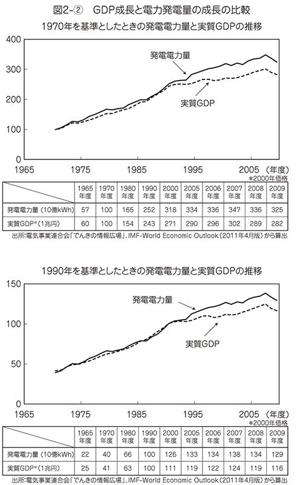
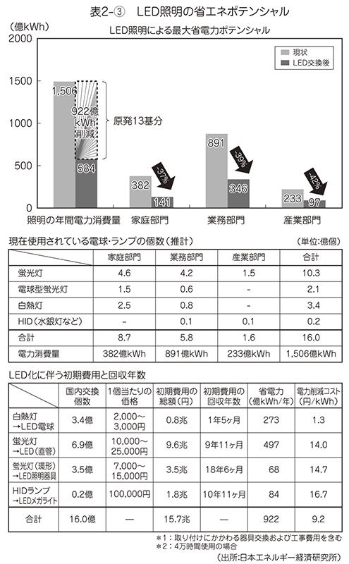
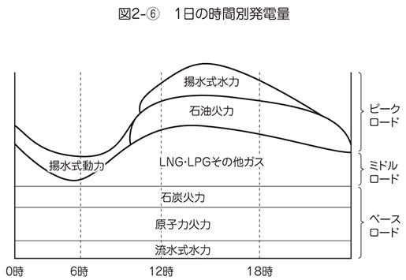
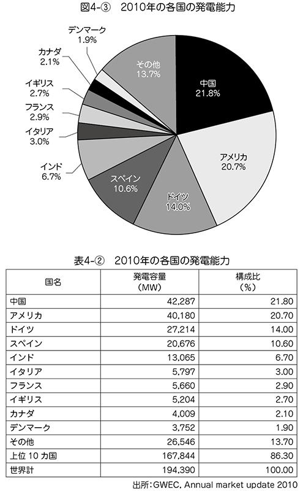

| 地産地消のエネルギー革命 もう原発には頼らない (PHP新書) | |
| 黒岩祐治 | |
| PHP研究所 (2011) | |

地産地消のエネルギー革命
もう原発には頼らない
黒岩祐治
「神奈川県からエネルギー革命を興す」
東日本大震災からほぼ二週間後の三月二四日、この宣言とともに神奈川県知事にむけて、私の選挙戦がはじまった。そして、「三月一一日の東日本大震災を境に、エネルギーのあり方が大きく変わった。まさにパラダイムシフトが起きたのだ」と、私はこのとき確信した。
だからこそ私は、エネルギー政策を公約として全面に押し出した。それは単にエネルギーのみに終わるものではない。次世代産業の成長戦略につながり、医療、育児、教育、観光、産業などあらゆる政策に関連するものであり、有効な雇用対策になるに違いない。
その中で私が実現するビジョンとして掲げたのは、「いのち輝くマグネット神奈川」である。「いのち輝く」とは、たとえ病気になっても安心できて、長生きしてよかったと心から思える社会であり、医療、介護、食、農業などあらゆる分野につながる概念である。
また、「マグネット」とは磁石のように人を引きつけるという意味で、世界中の人が行ってみたい、日本中の人が住んでみたいということで、人口問題、観光、産業、教育などにつながる概念である。
このような社会を実現するためにも、福島第一原発事故で失われたエネルギー源を早急に補わなければならない。いまこそ明確な新しいエネルギー戦略が、何よりも必要だと痛感したのであった。
本書は、神奈川県知事となった私の考えとめざすべき方向性をまとめたものである。神奈川県民だけでなく、エネルギー問題に関心を持つ多くの国民に読んでいただければと思っている。
二〇一一年一〇月
黒岩祐治
地産地消のエネルギー革命 目 次
知事としての「エネルギー革命」
選挙戦当初、東日本大震災に対応する神奈川県の課題は、被災地の復旧・復興をいかにして支えるかであると、私は考えていた。しかし、選挙戦スタートから半ばを過ぎ、神奈川のさまざまな地域に行き、県民と対話を重ねていくうちに、どうもこれは被災地だけの問題ではない。神奈川県の経済も下手をすると壊滅的な大打撃を被るのではないか、と考えるようになった。
年間二○○○万人の観光客を誇る温泉地、箱根では震災後まもなく実施された計画停電により、旅館のキャンセルが相次いでいた。
温泉地に来てまで停電の不便さを味わおうとは誰も思わないし、そもそも気持ちが萎縮してしまって、保養や観光に出かけて行こうという気さえ起きなくなっていたのである。客がいない箱根湯本駅前の土産物屋の通りは、これまでに見たことのないゾッとする光景であった。
このような状況が続けば、旅館業のみならず、漁業関連や農業関連、サービス業、交通業などにも壊滅的な影響があるに違いない。しかもこれは何も箱根に限られた話ではない。計画停電がこのまましばしば実施されれば、鎌倉、藤沢、平塚、横須賀、相模原、横浜、川崎など神奈川のあらゆる場所で、産業活動が重大な影響を受けることだろう。
神奈川県も外国人観光客が年々増加し、二〇〇九年で年間一一三万人を誇る規模にまで成長していた。神奈川県は観光戦略として、二〇一二年で倍増の二四四万人、二〇二〇年には五倍の五五〇万人まで、外国人観光客数を増加させる目標を立て、観光開発に乗り出している。まさにこれが、マグネット戦略そのものである。
しかし、今回の震災並びに福島第一原発事故以来、外国人観光客のキャンセルが相次いだ。マグネット神奈川とビジョンを掲げ、県内各所の魅力を神奈川県民総力戦で引き出そうにも、これではどうにもならない。
直接の原因となっている計画停電だけは、なんとしても食い止めなければならない。これから少しずつ暖かくなるから、まだしばらくは凌げるとしても、夏の冷房需要期までにはなんとか手を打たなければ、神奈川県の経済は壊滅するに違いない。私は全身が震えるような危機感を覚えていた。
このような時期に知事に名乗りを上げた私にとっては、この問題こそ最優先に取り組まなければならない課題であり、それが最大の使命だと感じたのであった。
新しいエネルギー戦略が必要ということはわかっても、実際にどんな具体策を打ち出せばいいのか。エネルギーの専門家でもない私にどんなビジョンが示せるのか。本来ならば、そこで私はいきなり壁にぶち当たっていたに違いない。しかし、私はすぐに答えを提示することができた。それが太陽光発電であった。それは私にとって奇跡にも近い偶然だった。
振り返ってみれば、このような時期に神奈川県知事になるために、これまでの人生を歩んできたのかもしれないと思うことがある。私は数年前から友人の山 養世氏（元ゴールドマンサックスス投信日本代表、経済評論家）に誘われて、山氏が代表を務める一般社団法人「太陽経済の会」に、評議員として名を連ねていたのであった。
養世氏（元ゴールドマンサックスス投信日本代表、経済評論家）に誘われて、山氏が代表を務める一般社団法人「太陽経済の会」に、評議員として名を連ねていたのであった。
「太陽経済の会」とは、政策提言をするシンクタンク機関である。一九世紀は石炭経済の時代、二○世紀は石油経済の時代だったが、二一世紀は太陽経済に変わるとし、太陽からのエネルギーを活用、資源とエネルギーを節約し、水と食糧を確保して、人類は自らを救い、人間性を守ることが可能になる社会を作るべきだということを提言している。
私は、知事選に出馬を決意したあと、ただちに主要メンバーに集まってもらい、政策勉強会を開いた。高速道路無料化案の発案者としても有名な山氏が、全面協力の態勢を敷いてくれたのである。その場で、メンバーの一人で原子力発電所の設計者でもある物理学者・藤原洋氏は、自身が関与しているＪリーグのガイナーレ鳥取で取り組む「ガイナーレ・ソーラー・プロジェクト」を紹介してくれた。
これは山陰合同銀行のソーラーローンを使って一般ユーザーにソーラーパネルを設置してもらい、電力会社への売電収入で返済していこうというものだ。しかも売電収入の一部をガイナーレ鳥取に還元し、地元のチカラでサッカーチームを支えようというしくみである。
藤原氏は、私とまったく同じ昭和二九年九月二六日生まれ。同じ星の下に生まれたはずなのに、どうして神は彼にだけこんな天才を与えたのかと思うほどに素晴らしいアイデアと閃きを持った科学者である。
私は目からうろこの衝撃をもって彼の話に耳を傾けた。ソーラーパネル設置のためにソーラーローンで借りたお金が売電収入により返却されていくということ。つまり、結果的には自己負担なしでも、ソーラーパネルを設置できるということである。
私はただちにこれを神奈川県で実施できないかと考えた。そうしたときに考え出したのが、「かながわソーラーバンク（ＫＳＢ）構想」であった。神奈川県が主導もしくは後援するＫＳＢという組織があれば、所得の多寡にかかわらずソーラーパネルを設置することができるのではないか。しかも理論的には無料に、かつ大規模にできるのではないかと考えたのである。
私はこれを知事選挙の目玉にすることに決めた。きめ細かいマニフェストは、私のように急に立候補者となった者にとっては、もともと無理がある。神奈川県政の詳細を十分に把握できていない中で、勝手に数値目標などを提示しても、絵に描いた餅にすぎない。
また、同時にいろいろな政策を羅列して語っても、焦点がぼやけるだけである。進むべき大きな旗は「いのち輝くマグネット神奈川」という言葉で表現することとした。その代わりに一点突破型のマニフェストをつくることにした。それが「太陽光発電の普及」であった。
このときにスタッフの中で、太陽光発電の具体的な数値目標を入れるべきだ。いや、入れないほうがいいと意見が分かれた。私は数値を入れたほうが県民のみなさんが具体的に太陽光発電について理解しやすいと思ったし、そもそも数値目標を示すのが、マニフェストである。特に一転集中突破型でいくのだから、せめてこの政策だけでも数値目標を明示しなければならないと考えた。
そこで、生まれたメッセージが「四年間で二○○万戸分の発電を可能にする」「まず、その第一ステップとして、夏の冷房需要に間に合わせて、五万～一五万戸で可能にする」ことだった。
二○○万戸分は、神奈川県全体四○○万軒の住宅の半分である。
こうして、選挙戦での太陽光発電政策がつくられたのである。
今回の選挙は震災後の自粛ムードもあり、当初は街宣車も無音で走るという地味なものであった。街頭で、「いまは選挙なんかやっている状況じゃないだろう」といわれたこともあった。私自身は、はじめての選挙なのでこういうものかとも思っていたが、ベテランの選挙スタッフはかなりの違和感を持っていたようである。
私は限られた演説の機会ではあったが、ソーラーバンク構想についてはできるだけわかりやすく、丁寧に語ったつもりだった。しかし、どうも感触がつかめない。聴衆に的確に伝わっていないと思わざるを得なかった。つまり、太陽光発電という言葉そのものが具体的に聴衆にイメージされていなかったようだ。
考えてみれば、太陽光発電はまだまだ普及率が低い。だから、それを使ったビジネスモデルの話をしても理解できるはずはない。そう判断した私は、試しに七〇センチくらいの大きさのソーラーパネルを一枚借りてきて、街頭で掲げながら演説してみた。そうすると、自然に聴衆の視線が集まり、老人の中にもうなずく人の顔が見られるようになった。それでやっとメッセージが届いたという実感を持つことができた。
しかし、もっと強烈に効いたメッセージがあった。それが「脱原発」という言葉だった。
選挙戦の途中から、福島第一原発事故はそれまでの政府の楽観的な発表とは違い、実は重大な事故だったのではないかという疑念が国民の間に広がりはじめていた。放射能に対する恐怖が実感になりつつあった。その思いと、太陽光発電を結ぶメッセージは何かと考えて、捻り出したのが、「脱原発」であった。
この宣言をした瞬間、道行く人の足が止まった。皆がこちらを向いた。そこにはスタッフが掲げるソーラーパネルがあった。空気がガラリと変わったのである。
脱原発とは反原発ではない。いきなりすべての原子力発電所を止めるということは、それは非現実的な選択だと私は思っている。産業用の電力需要を含めて考えると、やはり原子力を完全に否定することはできない。
私はこれまでは、原発推進派であった。原子力発電があったからこそ、日本はかつて公害問題に苦しみながらも克服し、奇跡といえる経済発展を遂げてきたのである。いたずらに原発の危険性をあおるのはよくないことであり、これからもうまく共存していかなければいけない、そう思っていた。
しかし、絶対に安全、安心といわれ続けた原発に起きた信じられない致命的な大事故。その生々しさと、その恐ろしさを知ってしまった私たちは、元の立ち位置に戻ることはできない。
福島第一原発が再稼働することは永遠にありえない。点検中の原発の再稼働も容易なことではない。新規の原発建設に住民が合意することも絶望的だ。年々、耐用年数を過ぎる原発が出てくる。つまり、脱原発はもはや主義主張ではなく、避けられない現実になってしまったと見るべきではないだろうか。
私はそんな思いから「脱原発」という言葉を選挙戦の最中に発し、支持を求めたのであった。
それならば、できる限り早く、それに代わるエネルギー源をつくらなければならない。最も短い時間で、簡便で、エネルギーを生むもの、それが太陽光だった。ソーラーパネルを屋根に設置するだけで、その日から電気が生まれ、停電の不便さから解放される。脱原発と太陽光発電をセットにしたアピールは、道行く人のハートをつかんでいるという手ごたえを感じることができるようになった。
おかげさまで一七二万八○○○票という多くの県民の支持を受けて、神奈川県知事として選出されるにいたったのであった。
「黒岩さん、神奈川県知事選挙に出てもらえませんか？」
旧知の代議士から私の元へ電話があったのは三月二日。選挙の告示日まで二二日。まさに晴天の霹靂であった。
私はキャスターという仕事が好きだった。一九八八年にフジテレビで記者から夕方のニュースのキャスターとしてデビューして以来、二○年以上にわたって務めてきたこの仕事は、私の天職だと思っていた。二○○九年にフジテレビを退社した後も、二つの大学院で教鞭をとる一方で、フリーのジャーナリストとして、これまで以上にさまざまな媒体を通じて、発信を続けていた。
一九九二年より延べ一五年半にわたって、「報道２００１」を担当してきたこともあり、選挙のたびに立候補のお誘いは受けていた。しかし、政治の政策立案や討論などのいわゆる表の世界には興味があったものの、派閥抗争や権力闘争などのドロドロした裏舞台を乗り切っていく自信がまったくなかったことから、一貫してお断りし続けてきた。
そして、私は生涯、ジャーナリストとして生きていくことを決めていた。
しかし、今回ばかりは少し違って、私はいつものように即座にお断りすることはしなかった。これまでのお誘いのすべては国会議員だったが、今回は知事。しかも人口九○○万人を擁する神奈川県知事ということだったからだ。
ただ、国政が各党入り乱れての足の引っ張り合いを演じている中で、その延長線上にあるような神奈川県政なら、絶対に挑戦してみようとは思わなかった。それだけは、はっきりと申し上げた。
すると、状況は日々刻々と変わってきて、民主党、自民党、公明党が一致して支持を表明してくれることになった。常識的に考えれば負けるはずのない選挙態勢が整いつつあった。それでも私は決めかねていた。それほどジャーナリストという仕事に未練があったのである。
そんな私の背中を押したのが、二○一一年三月一一日の東日本大震災だった。大津波で街全体が完全に消えてしまった東北の被災地の悲惨な映像を見ながら、日本は一瞬にして終戦の時点にまで戻ってしまったと思った。
多くの人々が「いのち」の不安に怯える中で、私たちは廃墟から再び立ち上がらなければならない。そんなたいへんなときに、ジャーナリストとして、いのちにこだわり続けてきたこの私に「知事に」という話がもたらされているのは、神様が「いまこそお前の出番だ」といってくれているように感じたのであった。
私は出馬を決意した。三月一六日、出馬の記者会見に臨んだ私は悲壮感にあふれていた。
私はマニフェストをつくるかどうか迷っていた。私は以前からマニフェスト運動の母体であった「21世紀臨調（新しい日本をつくる国民会議）」のメンバーであって、北川正恭元三重県知事らとともに、マニフェスト選挙を根づかせるために汗をかいてきた。そんな私が自分の立候補にあたって、マニフェストをつくらないというのは、あり得ない話であった。
しかし、熟慮の結果、私はあえてマニフェストをつくらないことに決めた。それは首長候補が掲げるローカルマニフェストが、政権公約と訳されるパーティーマニフェストに比べ、はるかに大きなパワーを持っていることを知っていたからであった。
首長は大統領制に近い。その首長が提示したマニフェストは、有権者から直接付託を受けたことになるわけであるから、それは有無をいわせぬ絶対的なチカラを持ってしまう。果たしてそれでいいのか？ 責任ある対応といえるのかどうか？
私は大学一年生から六年間は横浜市に住んでいたが、その後は長年、東京都民として過ごしてきた。自ら神奈川県知事になりたいと思い、時間をかけてその日のために準備をしてきたわけではなかった。
だから、私自身、神奈川県の現状をしっかり把握しているわけではない。しかも、決意表明から告示まで八日しかなかった。
にわかづくりであっても、マニフェストを用意することは可能だった。自分のやりたい政策はたくさんあったし、いろいろと調べれば、それなりに見栄えのするマニフェストをつくることは十分可能であった。しかし、それは「机上の空論」になる可能性が大であった。
かつて、当選直後に自らのマニフェストを「机上の空論だった」といって政策変更し、物議を醸したのは、大阪府の橋下徹知事だった。しかも、それをテレビの生放送で厳しく追及したのが、何を隠そう「報道２００１」キャスターの私であった。
そこで、私はマニフェストの代わりに、政策の大きな方向性を指し示す旗を掲げることにした。それが「いのち輝くマグネット神奈川」であった。「いのち」と「マグネット（＝磁力）」の二つの言葉に徹底的にこだわることで、神奈川の将来が見えてくるに違いないという思いであった。
いのちが輝くようにすること。そしてマグネットのように引きつける力を地域も企業も個人も持つこと。そうした経営理念をもとに、国難ともいえる危機を県民総力戦で乗り越えていこうと考えていた。
実際にマネジメントにとって一番大事なのは理念であり、そこからビジョンができて、中長期経営計画ができ、単年度の計画とそれを実現する予算ができるのであり、その原点をわかりやすく、かつ考えさせるメッセージにしておきたかったのだ。しかし、これは実際に知事に就任したときには有効なメッセージになり得るが、県民にどこまで理解されるかは正直不安だった。
ただし、私は太陽光発電のプロジェクトについてだけは、マニフェストのカタチにすることにした。そして、前述のように、太陽経済の会のメンバーと集中的に勉強会を開いてまとめ上げた。
「四年間で二○○万戸分のソーラーパネルを！」
「夏の冷房需要に間に合わせるために五万～一五万戸分を！」
「神奈川からエネルギー革命を！」
それはまさに一点突破型のマニフェストだった。
投開票日の四月一○日。開票作業は二○時からはじまった。当選確実が出たのは番組開始と同時だった。選挙事務所の近くに待機していた私は、すぐさま支持してくれたみなさんの集まっている事務所に向かい、挨拶をした。本来は恒例の「万歳」をするところだが、自粛ムードの中の選挙を闘ってきた私には、万歳をする気にはなれなかった。
被災地の避難所でテレビを見ている人の気持ちを考えると浮かれる訳にはいかなかった。そこで異例の「がんばろうコール」で、当選の喜びを分かち合った。みんなは拳を高く振り上げていたが、私は胸の前で拳を握りしめるだけであった。
私は心の底から湧き上がる喜びを感じてはいなかった。九○○万人の県民のいのちを預かる身になったという重責を感じると、浮き立つような心境にはなれなかった。それよりも、一刻も早くソーラーパネル設置に向けて動き出さないと、間に合わないという焦りのほうが強かった。
当選したとはいえ、知事の任期は四月二三日からで二週間も先のことである。それまで待っていられないというのが、正直なところだった。四年間の二○○万戸分はさておき、夏の冷房需要までに五万～一五万戸分を設置するのは、並大抵のことではない。いますぐに全力疾走をはじめなければ、絶対に間に合う数字ではない。
私は口グセのように「圧倒的なスピード感」という言葉を使うようになっていた。思いはだんだん加速して、いつしか「想像を絶する圧倒的なスピード感」というようになっていた。
当選直後の選挙事務所に、県庁の幹部職員がやってきた。県庁職員とのはじめての接触であった。それは儀礼的な当選祝いの挨拶であった。「初登庁までの時間を使って、組織の全容のレクチャーをしますから」ということだけを伝えに来たのだった。しかし、私ははじめて会った幹部職員に対し、ただちに県庁内でソーラーパネルを一気に普及させるための態勢づくりをはじめてほしい、と依頼していた。
私は「太陽経済の会」のメンバーとも実現に向けての具体策を練ってきた。奇想天外なものも含め、アイデアは次々と出てきた。しかし、これまでは一民間人としての政策提案でよかったが、これからは県知事として県の具体的政策としてまとめなければならない。県庁の職員を抜きにして、このまま私たちだけで盛り上がって政策を練り上げてしまうと、逆に実現から遠のいてしまう危険性もあった。早急に新たな合意形成の枠組みをつくることが必要だった。
そこで、異例のことだったとは思うが、初登庁の前に、関係部局に集まってもらって私の思いを述べ、政策検討の枠組みづくりに入ってもらうように話をした。私は部屋に集まった職員たちを前に、胸が熱くなるのを覚えていた。
彼らは見事に私のその思いに応えてくれた。初登庁したときには、すでに県庁全体を巻き込むカタチでソーラープロジェクトができあがっていたのである。
四月二五日、抜けるような青空の下、私は電気自動車の日産リーフに乗って本庁舎の門に降り立った。県庁職員や支持者のみなさんが県庁前に集まり、大きな拍手で迎えてくれた。父の遺影を持った母の姿もあった。賽は投げられた。
知事は大きな権限を持っている。自分の好きなように人事を決めることもできた。しかし、神奈川県庁の内部の実情をまったく知らない私が、自分の気心の知れた仲間を連れて県庁に乗り込んできたら、きっとその調整だけで労力を割かれてしまうだろう。
そんなことで心を煩わせている時間はない。当面、人事には手をつけないことにした。そして、神奈川県民総力戦を訴え、危機だからこそこの状況を乗り切るために、県庁職員も一丸となって「公務員魂を見せてくれ」と鼓舞した。
「圧倒的なスピード感」という言葉が県庁の中に浸透するには、本来はそれなりの時間が必要だったかもしれない。行政にはこれまで培ってきた仕事のやり方があり、彼らとしてはスピード感を出しているつもりでも、私の尺度とはまったく違うと感じることも少なくはなかった。しかし、率直なやりとりの中で、強引に私のスピード感に合わせてもらうしかなかった。
かながわソーラーバンク（ＫＳＢ）という制度をつくるには、そのための合意形成と具体的なモデル検証期間が必要であった。また、その設立までの期間、県民が逆にソーラーパネルを買い控えする可能性もあった。それは至極当然の課題だった。しかし、一つひとつ解決してから前に進むのではなく、とりあえず走りながら考え、解決策を模索していくしかなかった。
「夏の冷房需要に間に合わせるための五万～一五万戸」という数字は、彼らに有無をいわさぬプレッシャーとなったことは間違いない。
県庁のスタッフだけでなく、県議会も信じられないスピード感を発揮してくれた。議会は知事選挙と同時の選挙だったので、新たなメンバーになっていた。しかし、招集が五月半ばという。しかも、通常は委員会のメンバー選定等だけが行われて、そのまま、休会に入り、実質的審議がはじまるのは六月半ばだというのである。それでは県庁の職員がどんなにがんばってみても、夏の冷房需要には絶対に間に合わない。知事は大きな権限を持っているとはいえ、独裁者ではない。
私はここで万事休すかと思った。
しかし、県議会には五月召集と同時に審議をお願いできないものかどうか、探った。それは前例にないといわれたが、前例にない原子力発電所の事故を受けた対応なのだから、なんとかしてもらえないかと食い下がった。
選挙中には三党相乗りという批判も受けたが、県民総力戦といって乗り切ってきた。それがここにいたって、大きなチカラを発揮した。県議会はまさに前例にない、五月議会に県庁施設九カ所に、太陽光発電を取りつけるための補正予算を成立させてくれたのであった。しかもそれに続き、六月には約六○○○戸分のパネル設置用の補助金を出す補正予算も通してくれた。まさに神奈川県民総力戦のカタチができていたのであった。
県庁横断プロジェクトの「かながわソーラープロジェクト」もフル回転だった。県庁には新たなエネルギー担当の部が設置され、内外に最優先課題として取り組む姿勢をアピールした。
私も「かながわソーラーバンク（ＫＳＢ）」の定義を明確にしているわけでもないので、詳細な制度設計と行程表が直ちにできないのは、いうまでもなかった。私の個人的ブレーンである「太陽経済の会」とも非公式で何度か会合を重ね、情報や意見の交換などを行った。
民間企業出身者のスピード感と県庁の堅実性が衝突することもあったが、それは意味のある討論であったと思う。新しいものをつくるときにぶつかり合うことは、何事でも大事である。両者ともどうにかこの政策を実現したい、知事に恥をかかせるわけにいかないと、必死にがんばってくれた。それが、六月二六日の「『太陽経済』かながわ会議」（後述）で一つのカタチになったのであった。
また、「かながわソーラープロジェクト」は副知事をリーダーに、政策局、環境農政局、商工労働局、企業庁の関連各部署が参加する横断プロジェクトであったが、その外部組織として、「かながわソーラー研究会」という有識者の提言会議を持った。
この研究会の会長は村沢義久東京大学総長室アドバイザーであり、これ以外に太陽光発電やエネルギー関連団体、投資銀行の有識者、それに環境省、経済産業省資源エネルギー庁、農林水産省、国土交通省などの課長クラスが参加してくれた。
県の研究会に四つの省庁の幹部が顔をそろえたということ自体、国も神奈川をモデルにしようとしている、その意気込みの現れであった。
研究会では、主にかながわソーラーバンク構想の具現化を話してもらった。その詳細は第三章に書いているが、問題の所在は現状の余剰電力買取制度では、投資回収の実現可能性がかなり厳しく、ローンで初期投資を回収しても債務が残るということだった。
一点突破型のマニフェストで提示した公約が、いきなり画餅に終わるのか。その鍵を握るのが、奇しくも東日本大震災の三月一一日の午前中に閣議決定した「再生可能エネルギー法案」だった。これにより全量買取制度が実現し、投資回収を可能とする年限（期間）と価格が設定されることが何より大事なことであった。
そのためのムーブメントをつくることが私の国に対する初仕事だった。
私はエネルギー戦略の目玉として太陽光発電の普及促進を掲げるとともに、それを実現するための手段として「神奈川ソーラーバンク構想」を訴えた。
今回の震災は、これまで私たちがいかに電気に依存した生活を送っていたかということを痛感するきっかけとなった。そして、電気が止まってしまえば、ただ単に生活が不便だというだけでなく、経済活動そのものがストップしてしまうという生々しい恐怖を味わった。
停電を避けるために自分自身で最も早く簡便にできる方法は、自宅の屋根にソーラーパネルをつけることだ。そうすれば、たとえ電線からの電力が止まったとしても太陽光でエネルギー供給することができる。そして太陽光発電は石油などとは異なり燃料は必要とせず、騒音もないし、環境には優しいし、特別なメンテナンスも必要ない。
私は神奈川県約四○○万世帯の半分にあたる二○○万戸分に普及したいという目標値を掲げた。現状の国内の普及件数は五○万戸分なのだから、この数値目標は途方もなく高い数値であった。
ソーラーパネル設置の一世帯当たり平均発電能力は三・三キロワットなので、二○○万戸分とは六・六ギガワットとなる。一ギガワットとは、一○○万キロワットに相当する。これは原発一基分が一ギガワットなので、原発六・六基分となる。また、年間の発電電力量で比較すると、原発一基分に相当するといわれている規模である。
「太陽経済の会」のスタッフは、知事がその気でがんばれば絶対にできると太鼓判を押してくれた。しかし、詳細を詰めている時間的余裕は、私にはなかった。あえて野心的な高い目標数値を掲げることにしたのだった。
「ソーラーパネルをたくさんつけます」といっても、インパクトはない。原子力事故で失われた電気を早く補うためには、強烈なメッセージを発することが大事だった。たとえ無謀ではあっても、高い数値目標を明確に提示することで初めてインパクトは生まれる。
要するに二○○○戸分ではありません、二万戸分でもありません、ということが重要なのだ。全戸数の半分という想像を絶するように圧倒的に大きな数値を示すことで、本気度を示したのである。
これに対して、反対するスタッフもいた。そんな高い数値を約束することで、後で自らが縛られてしまい、大変なことになるというのである。それは一理あった。
しかし、その意見が私の耳に入ったときは、すでに遅かった。私は公衆の面前で、その数値を口にしてしまっていた。政治家を目指す人間がいったん口にした以上、その数値を取り下げるわけにはいかない。新たな流れをつくろうとするときに、ブレることこそ最も避けなければならない。それが、「報道２００１」などの番組を通して、ジャーナリストの目から長年にわたり政治を見てきた私の思いだった。
「私が責任を取る」
それはすべての異論を封じ込めた。身体を張った賭けであった。懇願されて出馬したからこそ、強気に出ることができたのである。
当選して一週間後の日曜日、四月一七日朝一〇時からテレビ朝日の「サンデーフロントライン」に出演した。私がキャスターを務めた「報道２００１」のライバル番組として一七年間以上、ともに競い合ってきた田原総一朗さんの「サンデープロジェクト」は、すでになかった。その後、報道番組のキャスターを小宮悦子さんが引き継いでいて、ゲストとして、声をかけていただいた。攻守ところ代わって、私にとっては記念すべき初出演となった。
統一地方選挙で「脱原発」と明確に訴えて当選したのは、おそらく私一人だったようだ。それでゲストとして呼ばれたのだという。私は「四年間で二○○万戸分のソーラーパネルをつける」「自己負担なしでもつけられる」とかながわソーラーバンク構想の持論を展開した。
後から知ったのだが、そのテレビをじっと観ていた一人の企業家がいた。ソフトバンクの孫正義社長だった。孫社長はテレビ放映終了後、ソフトバンクのスタッフに「観たか。彼は覚悟を決めている。彼を後押ししたい。連絡するように」といったらしい。その二日後の夕方に私の私設スタッフを通じ、孫社長から連絡が入った。「黒岩知事の覚悟を知った。私は黒岩祐治を男にするために全力でサポートしたい」という熱いメッセージをいただいたのである。
そして、実際に次の週の四月二六日、初登庁の翌日だったが、ソフトバンク本社を訪問し、孫社長と会った。「報道２００１」のゲストとして何度も議論をした間柄ではあったが、それ以上の個人的なつきあいはなかった。
私自身、圧倒的なスピード感といってきたが、孫氏のスピード感にも驚いた。やはり生き馬の目を抜く厳しいビジネスの世界で、あれほどの成功を収めてきた起業人だけあると思った。
私の番組出演から一○日も経っていないのに、その場には全国知事会の後ということもあり、私以外にも三人の県知事やそのスタッフ、そして自然エネルギーの専門家なども顔を揃えていた。
そこで孫氏は自らパワーポイントを駆使し、メガソーラー推進のための知事連合の提案を行った。いつの間に孫氏は自然エネルギーの専門家になったのだろうと不思議に思うほど、そのプレゼンテーションは的確であり、ワクワクするものであった。
孫氏の提案は、二〇メガワット規模のメガソーラーを全国一○県に、一カ所ずつ建設しようというものであった。その建設費用は一カ所当たり八〇億円程度が見込まれる、そのうちソフトバンクが七九億円を負担する、県は一億円を拠出し、土地の提供と固定資産税などの減免などをお願いしたいというのであった。総額八○○億円のプロジェクトを孫氏が一人でやろうというのである。私はそのスケール感にも驚いたが、こういうカタチで民間が参入することは、プロジェクト推進の上で絶対的に必要なことだと思った。
その場にいたのは私を含め長野県、高知県、佐賀県の四人の知事であったが、その場にいなかったものの賛同の意を示している知事がもう一人いた。大阪の橋下知事である。この五人の知事が一人ずつ声をかけて、一○県ではじめようということになった。
孫氏はみんなの前で語った。
「テレビを観ていて思いました。黒岩知事は本気だなと。四年間で二○○万戸分のソーラーパネルをなんて話している。こんなメチャメチャなことを真剣にいえるそのベンチャー精神に感動しましたよ。この人を男にしなければいけない。やっぱりできなかったじゃないかってことになったら、日本は永遠に変われない。だから一○の知事連合で行くけど、神奈川が先頭を走り続けてください」
孫氏は打ち合わせの最後に、坂本龍馬が大政奉還に際して後藤象二郎にその覚悟を書いた直筆の手紙を見せながら、熱い思いを語った。その場は維新前夜の秘密の決起会合のような空気に包まれていた。
孫氏がエネルギーの分野に突然、乗り出してきたことに違和感を覚え、徹底的に批判する人たちもいた。所詮、金儲けのためにやろうとしているのだろうと彼らはいうが、企業家なのだからビジネスを考えるのは当たり前ではないだろうか。企業家に対して儲けることを批判することはおかしい。
金儲けを企む孫氏に、地方自治体が協力するのはいかがなものかという人もいる。しかし、私は神奈川からエネルギー革命を起こそうといってきたのである。革命は民間が動かなければ絶対にできない。
いち早く孫氏が反応を示したから、孫氏と共同で進めようという話が出てきたのであって、それ以外の民間を排除しようなんて気はまったくない。また今後、実際にプロジェクトが動き出すときには、公開性、透明性がすべてのプロセスに求められるわけであるから、批判はあたらない。
一カ月後、知事連合のエネルギー協議会の発足に向けた準備会が開かれた。これがマスコミへのお披露目の場となった。東京千代田区の都道府県会館の一階のホールで開かれた記者会見には、二○○人もの記者が殺到し、会場は立錐の余地もなく、写真撮影も取材陣を二班に分けるという盛況ぶりだった。芸能人のスキャンダル会見並みの盛り上がりに、私も驚いた。
その時点で一○の知事連合のはずが、すでに一九県になっていた。しかも、その翌日、関西七府県が参加することがわかっていたから、実質二六府県の連合になっていた。やはり、孫氏が参入したことの意味は大きかった。
孫氏との最初の会合の数日後、孫氏が菅直人前総理と会食をし、自然エネルギーの話をしたこともメディアの関心を高めるきっかけとなった。孫氏の話に感銘を受けた菅前総理がその直後のサミットの場で、一○○○万戸のソーラーパネルをつけると、いきなり「国際公約」したのだから、孫氏の注目度は最高潮に達していたのである。
そして、七月一三日に秋田県で自然エネルギー協議会を正式に設立することとなり、第一回総会が開催された。石井正弘岡山県知事を会長、飯泉嘉門徳島県知事と私が副会長、孫社長が事務局長という体制となり、結局、三五道府県が参加することとなった。ここでは電力の全量買取制度の早期制定など、六項目を柱とする政策提言「秋田宣言」をまとめた。
また、この協議会とは別に指定都市協議会も設立され、一七の政令指定都市が参加した。合計すると五二の自治体という大所帯となる。一○の知事連合の話がずいぶん大きくなったものだが、これだけ大きくなると、逆に会の性格も変わらざるをえない。
メガソーラーを各県ごとにつくっていくという話は、それぞれの個別交渉に委ねられることとなった。協議会としては、自然エネルギー普及に向けて情報交換を密にしていき、さまざまな場面で連携、協働していこうという方針になったのである。原発のある県とない県では状況も異なるので、まずは緩やかな共同体としてスタートしたのであった。
六月二六日の日曜日。梅雨の晴れ間を縫って、横浜駅近くの新都市ホールにて「『太陽経済』かながわ会議」を開催した。「神奈川からエネルギー革命を」という思いを内外にアピールするために、県庁と太陽経済の会の共催で企画した一大イベントであった。
インターネットで入場者を募ったところ、あっという間に席は埋まってしまった。話題の人、孫正義氏もパネリストして参加することも、注目度を上げる要因となったことは間違いない。
パネリストや講演者の顔ぶれは、このテーマのフォーラムとしてはまさにベストメンバーといっていいだろう。孫氏のほかに、環境省事務次官の南川秀樹氏、三菱総合研究所理事長の小宮山宏氏、日産自動車ＣＯＯの志賀俊之氏、千葉商科大学学長の島田晴雄氏、東京大学総長室アドバイザー兼かながわソーラープロジェクト研究会会長の村沢義久氏、ＮＰＯ法人環境エネルギー政策研究所所長の飯田哲也氏、東海大学理事・工学部教授の内田裕久氏、藤沢市市長の海老根靖典氏、株式会社KS International Strategies 代表取締役社長兼環境省参与の島田久仁彦氏、ＮＰＯ法人ガイア・イニシアティブの野中ともよ氏、財団法人地球環境戦略研究機関理事長兼かながわ地球環境保存推進会議会長の浜中裕徳氏らが顔を揃えた。
また、鹿野道彦農林水産大臣、林文子横浜市長、持田文男神奈川県議会議長にもご挨拶いただいた。
県庁が主催するイベントでこのような〝メジャー感〟のあるものは、職員も経験したことがなかったようで、ゲスト対応から進行まで手探りながら、みんな真剣に取り組んだ。県職員の動機づけとしてもいい機会となった。
第一部の特別セッション「太陽経済が日本を救う」では、私自身がキャスタ―時代に戻って、コーディネーター役を務めた。小宮山氏からは「自立国債」により自然エネルギー普及を目指すべきとの意見が出された。これを受けて、山養世氏から「県債」により太陽光発電を一括購入して設置し、売電収入で返済していくべきとの大胆提案が飛び出した。
また、孫氏からはメガソーラーの話とともに休耕田の一割に太陽光パネルを置く「電田プロジェクト」の提案があった。しかし、現況ではその休耕田を農地以外の目的で使用することができない、という規制があって進められないという問題点も指摘された。
孫氏の話を聴きながら会場に目をやると、私の目の前の客席最前列には先ほど、挨拶をいただいた農林水産大臣の鹿野氏がいた。この職にある人は挨拶だけで帰ってしまうのが通例ではある。だが、鹿野氏は真剣にシンポジウムを聴いていたのである。そこで私はまったくのアドリブで、鹿野氏に発言を求めた。
会場はそのような準備も態勢もできていなかったため、客席用のマイクもない。スタッフは動揺していたが、これがナマのおもしろさである。突然の指名だったが、鹿野氏は快く壇上に上がってきて、壇上のマイクを使って発言してくれた。
「日本にはいま、耕作放棄地が四〇万ヘクタールありますが、そのうち自給率向上に活用できない三〇万ヘクタールあります。それをメガソーラー構想に活用していけるよう検討したいと思います」
会場からは、規制緩和に向けた大臣の前向き発言に大きな拍手が送られた。この発言はニュースとしても報道されることになった。会場での議論の中からニュースが飛び出してくる。いままさに時代の最先端の話を、キーパーソンとともに議論しているんだという興奮が会場を包み込んだ。
このような時代の中でも財界の一部には、いまだに脱原発に反対し、自然エネルギー法ができれば、日本の産業力に大きなダメージになると主張する人がいる。そんな現状に対し、孫氏の言葉は一瞬過激に振れた。
「そんな財界はアホだ」
会場はやんやの熱狂状態となった。最後にはシンポジスト全員が並んで、「太陽経済の時代へ！ ゴー！」とシュプレヒコールを上げて、終わった。
会議ではもう一つの目玉があった。中曽根康弘元総理のビデオメッセージである。
私は当選した直後、中曽根氏にご挨拶に行き、「脱原発」と訴え、太陽光発電の普及を全面に掲げ当選したことを報告した。
「一九世紀は石炭経済の時代、二○世紀は石油経済の時代、二一世紀は太陽経済の時代」と語る私の話を中曽根氏は興味深そうに耳を傾けながら、おもむろにペンを取り、手元のメモ用紙に「太陽経済」と書いた。
「太陽経済、これはいいねえ。太陽の神奈川、いいねえ。神奈川に太陽はぴったりだね」
このキーワードをたいへん気に入ってくださったようだった。中曽根氏の知的好奇心は、九○歳を過ぎてもまったく衰えることがない。常に新しい情報、アイデアを貪欲に求め続けている。私たちとの会話の中でも、彼のアンテナに引っかかった言葉があれば、即座に採り入れようとする。
私は中曽根氏ほど、言葉を大事にしている政治家を他に知らない。自分の感性に響いた言葉はただちにメモをする。そんな光景をこれまで何度も見てきただけに、うれしかった。
後日、私はあつかましくも、ビデオメッセージを依頼してみた。戦後の日本の原子力政策を強力に推進した大立者である中曽根元総理が、太陽経済のはじまりを宣言するこの会に向けてどんな発言をするのか。それは考えるだけでもワクワクする話であった。中曽根氏は快諾してくださった。
そのビデオ収録のために、私は改めて事務所に伺いインタビューを行なった。私の質問に応えるというカタチで中曽根氏のメッセージをいただいた。
「戦後の原子力政策を推し進めてこられた中曽根元総理ですが、福島第一原発事故によって、やはりエネルギー政策そのものも根本的に見直す時期に来ているとも感じています。そのあたりの歴史的な認識は、どのようにお考えですか」
私にとっても「報道２００１」が蘇ったような感覚だったが、単刀直入な私の質問に対して、中曽根氏は次のように答えた。
「人間の発展は、自然の中のエネルギーを手に入れて、それをまた人間のものにして、文化として発展させていくことにありました。それが人間と自然の関係だったのです。
だから原子力という巨大なエネルギーを何とか手に入れようと、学者が努力をし、見事に原子力の凶暴なところは抑えて、人間のためになるところだけうまく使うことができました。そういう人間らしい知恵で自然との闘いをうまく部分的に克服したのが原子力というものだったのです。
しかし、原子力にはいろいろと人類に害をおよぼすような反面があるわけで、それをいかにうまく抑えて、よいところだけ活用できるかというのは、人間の知恵と能力、文化の歴史でもあるのです。そういう中で今回のいろいろな事故もとらえたらいいと思っています」
歴史、文明論の視点から人類とエネルギーの関係を的確に論じるあたり、さすがに中曽根元総理らしい、ほかの政治家との格の違いを感じさせる語りであった。
次に太陽光などの自然エネルギーの可能性について聞くと、次のような答えが返ってきた。
「実際この次の時代は、太陽エネルギーに次第に転換していく段階でしょう。おそらく、自然エネルギーというようなものは、まだ日本のエネルギーの中の九％程度です。それに対して、ほかのいろいろな人工的なエネルギーでうまく使ってきたわけです。
やはり太陽エネルギーをさらにうまく使う方法を、われわれが考えていく。それが文明であり、あるいは進歩であるというふうに考えますね。太陽を見れば、ものすごいエネルギーを持って燃えているということはわかりますしね。その恩恵をわれわれが、うまく使ったらいいと思います」
財界の一部の固まった発想に比べ、いかに柔軟で前向きであることか、私は胸のすく思いだった。そして最後にカメラ目線で会場へのメッセージをいただいた。
「太陽の力をもっとうまく使おう。神奈川県を太陽県にしようというのは文化の先端を行きます。そんな考え方ができる黒岩さんのような方を私は前から尊敬しています。そして、実際にそれを実践されているのを見まして、われわれも一緒になって大いに努力したいと思っています。日本全国が太陽国家に、そして県は太陽県になり、われわれは太陽政治家になる。そういう意味で、日本を太陽国家にしていきたいと思っています」
私は孫氏をはじめ、シンポジストたちと一緒に控室で見ていたが、「太陽国家」という言葉にどよめきと歓声がわき上がり、みんな画面に向かっていっせいに拍手を送った。口々に「素晴らしい」「これは歴史的なインタビューだ」「感動した」など、感想が寄せられた。
中曽根元総理の応援メッセージはこの会が脱原発とはいいながら、従来型の反原発運動などとはまったく次元の違う、新しい議論のステージのはじまりであることを徹底的に印象づけた。
歴史がいま大きく変わろうとしているその瞬間にみんなが立ち会っている、という感動を会場全体で共有することができた。中曽根元総理のメッセージは、それほどのインパクトを与えたのであった。
再生可能エネルギー特別措置法が成立した直後には、知人の国際金融の専門家の元へ海外の投資家たちからいっせいに問い合わせのメールが殺到したという。日本が新しいエネルギー体系の構築に向け、動きはじめたことへの期待感が、海外においても大きく膨らんでいる証拠といえよう。
しかし、現実にはこれで再生可能エネルギー普及に向けた環境が整ったと手放しで喜ぶわけにはいなかい。再生可能エネルギー源を用いて発電された電気が、電力会社にいくらで買い取ってもらえるのか、その期間はどうなるのか、肝心な点が先送りされているからである。
菅前総理が二次補正予算案と公債発行特例法案とともに、退陣の条件とした三法案の一つであり、政局がらみの法案となったために私たちもやきもきしたが、八月二六日に無事に成立した。
買取り制度の施行は来年二〇一二年の七月からだが、三年間は買取価格を配慮する、来春ごろに年限と価格が決まるものという見通しであり、それは第三者委員会が決定することになっているという。
これが実現すると、全量買取制度がはじまる。これまでの制度は余剰電力買取制度であり、一〇キロワット未満の住宅用では一〇年間で一キロワット時当たり四二円。一〇キロワット以上五〇〇キロワット未満の非住宅用が、一〇年間で一キロワット時当たり四○円であった。これだとおおよそ三分の一の余剰電力しか売電できず、初期でローンを組んだ場合、投資回収がむずかしいものであった。
今回の法案は全量買取制度が実現し、また、五〇〇キロワット以上も対象となるので、メガソーラーを展開する発電事業者が、陸続として登場するものと期待されている。
ところが、住宅用は家庭内での節電意識を高めるという目的から、同じく一〇キロワット未満の場合、従来どおりの余剰買取制度が継続されることになりそうだという。これは自己負担なしを目指してきた私にとっては厳しい内容であった。
しかし、急速な普及のためにはあらゆる知恵を総動員することもできそうである。たとえば、一軒家を一○軒集めて、それを一つのグループに見なすことなどの柔軟運用が認められれば、全量買取と同じ効果になる。実際に国の検討会の中でこのアイディアも出されていたというので期待したい。また、いまは補助金制度が普及を支えているが、一括大量発注を確かなものとすることによって、民間資金の活用も大いに期待できるはずである。
買取の代わりに、費用が電気料金に上乗せされることを懸念する声もあったが、電気消費量の多い企業には、負担軽減措置が図られることになった。どうしてその企業だけが優遇されるのかも含めて、政府は国民に対してしっかりと説明責任を果たしていかなければならない。
課題はたくさんあるが、いまこそ新しいエネルギー体系構築に向けて、真っ直ぐに突き進んでいかなければ、日本が国際社会の中で再浮上する可能性は失われるといっても過言ではない。
今夏は省エネ努力で、どうにか乗り越えることができたが、定期点検中の原発の再稼動がむずかしい中、来夏は稼動ゼロという事態も覚悟しておかなければならない。野田総理には、いまはじまろうとしている日本の「エネルギー革命」を強力に推し進める強い意志とリーダーシップを期待したい。
私は「四年間で二○○万戸分のソーラーパネルをつける」ことを一点突破型マニフェストとして選挙で闘い、当選させていただいた。それを実現することが、私の最大の使命であることは間違いない。
しかし、それがほんとうに可能なのかどうか、私はキチンとした説明をしなければならない。議会からも強く求められていた。テレビに出演した際にも「行程表はどうなっているのか？」と聞かれた。そのときには、私は次のように突っぱねた。
「いまはエネルギー革命を起こそうとしているんです。革命には行程表なんてない。まずは、現状を突破することが大事。行程表は後からついてくるものです」
かなり乱暴ないい方であることは承知の上だが、私はあながち間違ってはいないといまでも思っている。現に私が選挙戦で訴えた時点の状況と、その後の自然エネルギーをめぐる環境は、まったく違っている。
ソーラーパネルを持ち歩かなければ太陽光発電そのものが理解されなかったのが、この三月末のことである。それがわずか数カ月で、朝から晩まで太陽光発電のニュースが取り上げられ、各メーカーはソーラーパネルのＣＭで競い合い、家電量販店のＣＭでも設置を呼びかける時代になっている。
私が、革命はすでにはじまったと実感する所以である。
ソーラーパネルの価格競争がはじまり、価格はどんどん低下し、しかも高品質な製品の開発が加速している。また、蓄電池など、これまで陽が当たらなかった製品が一躍脚光を浴びるようになり、また、技術開発も一気に進みはじめた。
こういう動きがはじまったのは「二○○万戸分」効果である。孫氏との共同歩調が取れるようになったのも、彼自らがいっていたとおり、この「二○○万戸分」効果だった。横浜銀行、神奈川銀行などが、ただちに低金利のソーラーローンを組んでくれたが、それも「黒岩知事が二○○万戸分とおっしゃるから、私たちもすぐに動けたんです」と、その効果のほどを最高幹部が語ってくれた。
「夏の冷房需要に間に合わせるために五万～一五万戸分」というのも、周りのスピード感を増すために、絶大の効果があったことは間違いない。結果的には八月末現在での神奈川県内のソーラーパネルの設置量は、約四万八○○○戸分でわずかに目標値には届かなかったものの、最も大事な目標とした夏の計画停電の回避は実現することができた。
いずれにせよ、突然に立候補することになって、一民間人として急遽、まとめ上げたマニフェストではあった。しかし、インパクトという意味で果たした役割とその効果は、おそらく県民のみなさんにもご理解いただけると思う。
しかし、一方で数値目標はあくまで数値であって、それが達成できるかどうかは、常に問われ続けるのはたしかだ。私もただインパクトというのではなく、掲げた数値がほんとうに実現するのか。実現させるために、具体的にどのような政策をどんな順番で進めていくのか。しっかりと、説明をしなければいけなくなっていた。
そして、九月の議会の冒頭に、私は明確に語ることになった。数値目標を変えるのか。断念するのか。はたまた強気の一点張りで押し通すのか。私ははっきりとした意思表示を迫られた。
そこで私が語ったのが「かながわスマートエネルギー構想」である。
それは二○二○年度までに、県内の二〇〇九年度の電力消費量に対する自然エネルギーを二○％にするという新たな目標の設置だった。「原子力に依存しすぎない」「環境に配慮」「地産地消をめざす」という三つの大原則で、「エネルギーをつくる『創エネ』」、「ピークカットをはかる『省エネ』」、「ピークシフトをはかる『蓄エネ』」を組み合わせで実現しようという構想である。「二○○万戸分」マニフェストのバージョンアップであり、「四年間で二○○万戸分」ついてはできるだけ早く実施するように、全力を尽くすとした。
これまでエネルギー政策は、安全保障の観点から国家・政府の管轄の問題であり、それを補完することが地方の役割であり、地球温暖化対策の一つとして位置づけられていた。
しかし、今後はエネルギー構成比の三割弱を担う原子力発電が稼動停止する可能性も含め、エネルギー問題が、さらに切実になる。地域としても、真剣にエネルギー政策を考えなくてはならない。
私はこの創エネ・省エネ・蓄エネの政策パッケージこそ、地産地消のエネルギー政策であり、今後の地域の方向性を決めるものであると認識している。私はそれを「かながわスマートエネルギー構想」と名づけている。その意味では補完ではなく、政府のエネルギー政策とともに主導的なポジショニングで展開していく必要がある。
また、太陽光発電政策だけで推進しようとすると、実際に問題点も生ずる。太陽光発電は日照に左右される不安定な電力であり、それだけだと電力の品質を落とすことにもなりかねない。省エネや蓄エネも含めた発想でないと、これからのライフスタイルや経済・産業戦略を考える上でボトルネックが起きる。
これら日本のおかれている環境も含め、今後の方向性を提起したことが今回の提案の主目的であり、一番のメッセージである。要するにエネルギーで革命が起きる。しかもそれは生活や産業に関連する街づくりにつながるということなのである。
私は長期目標として、一○年後の二〇二〇年として、二○％を再生可能エネルギーでまかなう目標に変更した。日本がエネルギー危機を克服できないままに衰退していってしまうことは、神奈川県知事としてどうしても阻止しなければならない義務と責任がある。私は逆転の発想でこの危機をチャンスにして、新しい産業を形成できるようにもっていきたいと考えている。
このような長期的な視点と具体的に実現できる短期的な視点の両方の眼を持ちながら、このプロジェクトを推進していこうと考えている
今年の夏の危機は、どうにか乗り切ることができた。東京電力管轄内の電力需要は、これまでの最大で六〇〇〇万キロワット。これに対して、現在の発電最大能力は五四七〇万キロワットであり、差し引くと、マイナス五三〇万キロワットであり、その比率はマイナス八・八％であった。
大口需要家の一五％削減や自家発電稼動の努力とともに、ピーク時である一三時～一七時までは、住民の節電意識の高さと、その努力があった。また、県庁でも昼休み時間をずらす、パソコンや照明を消す、エアコンの設定温度を二八度に設定するなど努力をした。
私は夏の冷房需要期に計画停電の可能性があると思い、熱中症で倒れるリスクを憂慮していた。そのためにも自家発電として太陽光発電を急ぎ設置をして対処することを考えていた。しかし、実際には省エネ・節電努力がどれほど大きなエネルギー不足を補う対策になるかを痛感した。
東京電力の緊急対応でのＬＮＧの発電設備の設置などの努力もあった。
今年の夏は、一八九八年以降の一一四年間の中で平均気温より〇・八八度高い四番目の暑さという記録的猛暑だった。二〇一〇年が異常気象で、平均気温より一・四六度高く過去最高に暑かったので、それに比較するとまだよかった。
とにかくこの夏は、乗り越えることはできた。でも、日本人はここで安心してしまいがちなのが問題である。内閣府が七月二九日に公表した資料によると、来夏の発電能力が、柏崎の原子力発電でも下がるとし、五一九三万キロワットになると見込んでいる。
これは最悪のケースを想定した上の話だが、これで八〇七万キロワットの不足、マイナス一三・四％にまで下がり、二〇一一年よりもさらに厳しい夏になるという。来夏は言い訳が聞かない。プロジェクトに沿って、太陽光発電も含め再生可能エネルギーの急速な普及や省エネのより一層の促進を展開していかなければならない。
では、短期的にそして長期的にエネルギーはどうなのか。そしてどうすべきなのか。知事になって自分が学んだことを踏まえ、電力の現状と展望について次章以降で整理してみたい。
エネルギーのパラダイムシフトがはじまる
脱原発――これは「ポスト三・一一社会」におけるキーワードの一つであろう。
しかし、「原子力発電をいますぐ止める」という意味の反原発とは、一線を画す考え方である。脱原発は反原発と同じに解釈されがちだが、脱原発は「時間をかけて原子力発電に依存しないエネルギー生活をすること」として、一般的には定義される。
また、脱原発や反原発以外にも縮原発、原発ミニマム論なども使われるが、これらも今後、原子力発電を縮小していく、もしくは必要最低限の原子力発電でのエネルギー以外は利用しないといった意味であり、私が考える脱原発に近い。
では、どのようないい方をするのが適切なのか。
正直ここまでくると、言葉遊びとの批判も免れられない。それ以上に現実が動きつつある中で、神学論争にも似たこれらにつきあう暇はない。
そこで、ここに私の脱原発の定義を提示しておくことにしたい。
脱原発とは、老朽化した原子力発電は、廃炉処分にしていかざるを得ないという「状況変化」のことを指す。
原子力推進や原子力反対云々の意思とは別に、実際に今後、原発の増設や新規の場所への立地は、地域住民の合意形成からいっても、もはや不可能である。そう考えれば、この定義が現実に近いと私は考えている。原子力発電が今後、安全性を確保し、想定外という言葉で責任逃れしないならばいいが、現にその言葉に逃げている点から考えても、この状況が今後も変わるとは、到底思えないからだ。
では、原子力発電は、いま、どのような問題を抱えているのだろうか。
すでに挙げた 老朽化した原子炉の問題、
老朽化した原子炉の問題、 災害リスクの高い場所にある原子炉の問題、
災害リスクの高い場所にある原子炉の問題、 新規原子力発電所建設の問題の三つに分けられる。
新規原子力発電所建設の問題の三つに分けられる。
に関しては、二〇二五年までの一五年間で、さらに一六基が運用年数で四○年を超えるといわれている。これらの老朽化した原子炉をどうするのか。真剣に議論されなくてはならない状況に、私たちは置かれている。もし、継続使用するとしても、安全コストが高くなる可能性は、どうしても否定できない。
の代表的なものは、浜岡原発であろう。この原発は活断層の上にあるのだが、あれだけ地震の危険性というものが喧伝されている中で、一番危険地帯といわれる場所の真ん中に、原子力発電所があること自体が信じられない。
浜岡原発のある静岡県と隣接している神奈川県としては、それをそのまま稼動していくということに、非常な疑念を持っていた。だから今回の大災害が起きて、菅前首相が浜岡原発を止めたことに関して、私は英断であると考えている。
つまり、地震や津波を想定外という言葉で解決するのではなく、想定内として進めなければ、この地震大国である日本で、原子力発電を再開することはむずかしいためだ。
の新規の原子力発電所の建設は、一四基の計画がすでに進められている。しかし、これからは長期間にわたり、凍結状態にならざるをえないだろう。また、これまで以上に原子力発電所を建設し、稼動することは、時間と安全対策のコストが高くつくことになり、原子力発電が売りものにしてきた低コストの維持が不可能になってくる。
これまで原子力推進派は、原子力発電を安全だといってきた。中には「プルトニウムを飲んでも、大丈夫！」と発言する原子力専門家もいたというから驚きだが、こうした発言をした人たちばかりを責められない。
原発反対派も「原子力発電所設置は、絶対反対！」の一辺倒で譲らないから、原子力推進派が「原子力は一〇〇％安全」と、声高に主張せざるえない事態を招いていたともいえるためである。
技術や工学には、リスクはつきものだ。その現実に私たちは対峙すべきであったのに、ここを見て見ぬふりをして行動してきた。ここに、今回の事故を誘発する要因があったようにも思えてもくる。
それは原子力発電所が一基で、一ギガワット（一ギガワットは、一〇〇〇メガワット）の発電力と、年間七テラワット時（一テラワットは一〇〇〇ギガワット）の発電量となるという点にあったのではないか。計算方法はいろいろあるが、一ワット当たり六円と他電力コストに比べて低価格で提供できることは、現実問題として、誰にとっても大きな魅力であった。
日本はエネルギー自給率が四％と、極端に低い無資源国家である。そこで長い間、足りないエネルギーは海外に依存してきた。それでもうまくまわっていたのだが、一九七三年の石油ショック以降、原油のひっ迫と価格高騰で経済混乱が起こった。
そこで、私たちの消費生活や産業を発展させていくために、原発の割合を引き上げていく決断をするしかなかった。そう考えれば、当時は原発が正しい選択であった。だから震災前までの原発を含めたエネルギー自給率を一八％まで引き上げることもできた。
しかし、「原発は絶対に安全」と国が掲げて原発建設を推し進める中で、原発推進派も反対派も、原発という言葉に慣れっこになってしまい、いつのまにかそれが呪文のようになってしまった。
やがて、大変危険なエネルギーを扱っているということ自体を忘れることになっていった。
私がキャスター時代に、ワシントンに一時赴任してたくさんの海外の政治家や専門家に出会う中で感じたことは、日本人はリスクを計算しない、また、そうした思考が弱いということだった。
確率から考えて起きる可能性は低いが、災害時には大きな被害を出す原子力発電がいいのか。リスクは低いがエネルギーの買取制度があってはじめて世の中に普及する、不安定な再生可能エネルギーを選択するのか、そこをもっと議論すべきだったのだろう。
今回の震災を機会に、日本人がリスクを計算に入れて、物事を決めることの大切さを学んだのはたしかだ。そう思えば、リスクマネジメントの重要性を知ることは、今後の日本人にとって重要なキーワードになってくるはずだ。
ともあれ、今後、原子力発電による電力量が減少していくことは間違いない。
原子力発電に賛成だ、反対だという議論ではなく、まだ原発事故の解決の糸口すら見えていない現況下では、原子力発電そのものの稼動自体がむずかしくなる。それによって、脱原発に進まざるをえない事実がある。ここを見据えて、どうすべきなのかを考えて行動するのが、「ポスト三・一一社会」の考え方だ。
最悪のケースは、原子力発電所が国内でゼロになるシナリオもあろう。定期点検中の原子力発電が再稼動できない可能性はいまだに否定できず、そうなるとすべての原子力発電所が止まることとなる。
また、ゆっくりしたペースで原子力発電所の活用がされたとしても、二〇二五年で一六基の原子力発電所が運用年数四〇年を超えることで、廃炉処分となる。もし、一四基を新設できないのであれば、どう考えても原子力発電は、脱原発の方向に進まざるをえない。
そう考えると、日本の発電電力量の内訳が心配になってくる。
現状を見てみると、二〇〇七年度の実績で石油が一三％、ＬＮＧが二八％、石炭が二五％で、火力の合計が六六％、原子力で二六％、そして、再生可能エネルギーが九％であった。
これに対して、震災が起きる前の二〇一〇年六月に策定されたエネルギー政策基本法に基づく「エネルギー基本計画」では、石油が二％、ＬＮＧが一三％、石炭が一一％で火力の合計は二六％、原子力が五三％、再生可能エネルギーが二一％というものであり、原子力五○％の依存型体制の構築をめざしていた（図２）。
これもリスクマネジメントから考えてみれば、危険な選択肢である。原子力発電が終われば、五○％のエネルギーが確保できなくなると考えれば、エネルギーを分散することが望ましいのは一目瞭然だ。
原子力発電の推進は、石油・石炭などの資源高騰、そして、温室効果ガスの抑制による地球温暖化対策として最適との考えにほかならない。また、電源立地地域対策交付金目当ての地方に向けてのばら撒きなどもあった。さらには、日本の成長戦略として、Ｍ＆Ａで原子力発電事業を統合した重電メーカーとともに、海外にも原子力ビジネスの拡大を狙っていることも関係している。
今後、世界でエネルギーがひっ迫していけば、原発を増設することもあるかもしれない。しかし、二〇一〇年六月、日本で策定された「エネルギー基本計画」のように、五〇％を超える割合までエネルギーを増加させるために、原子力発電所を頼りにすることが不可能になった。
新たに一四基も原子力発電所を増設することが難しいからだ。そのため、震災前のエネルギー戦略の青写真は、大幅に変更せざるをえない。
二〇一一年五月二七日のＯＥＣＤの設立五〇周年記念フォーラムにおいて菅前総理は、原子力政策の見直しを図るとともに、再生可能エネルギー二〇％分を二〇三〇年ではなく、二〇二〇年の初期に実現したいという方向性を明確に示した。
これは一国の総理大臣が発言した国際的な公約と位置づけられるものである。今後、再生可能エネルギー（菅総理は自然エネルギーと称している）を日本国内においては、急ピッチで原発代替エネルギーにする計画だということを宣言したことになる。
この事実も考えれば、早急に脱原発に取り組まなければならないことだけは、はっきりとしている。
日本は原子力発電の電力量の構成比が、震災前まで二六％であった。それが現状では、四一基停止で約二〇％まで落ちている。
もし、このままの事態が継続して、全停止状態に陥るならば、電力の需要と供給の不一致が生じる「電力ボトルネック社会」に突入する。これまでにない緊急事態が訪れるといえよう。つまり、生産設備を稼動しようにも電力が不足し、供給側に制限がかかり、経済の縮小が避けられなくなる。
だからといって私は、原発推進を肯定するわけではない。原発推進派はこれを理由に再稼動しなくてはならないという議論を展開するが、現実にそれができるのかという問題もある。しかし、冷静に考えれば、こうした電力ボトルネックという事態を踏まえた上で、リスクマネジメントを考えることは大事だ。
ボトルネックといえば、東日本大震災で東日本地域、特に東北地方のサプライチェーンが断絶、それがボトルネックとなり、経済は停滞した。しかし、今後の復興需要でこうした状況から回復することは可能である。
今回の震災被害は、一六兆円から二五兆円の規模になるといわれている。それに対して政府は、復興・復旧事業費は一○年間で約二三兆円にもなり、向こう五年間は集中復興期間として約八割の一九兆円を充てるという。私は経済学の専門家ではないが、これだけの復興資金があれば、乗数効果もあり、経済は逆に拡大する機会も生まれると思われる。
実際、一九九五年一月に起きた阪神大震災では、約一○兆円の被害規模となった。当時の村山富市政権が一六の特別立法で、復興・復旧事業を後押ししたことによって、雇用も公共事業により四万人から一○万人規模を創出。その結果、兵庫県のＧＤＰ成長率は、一九九五年度では五％増、その波及効果もあってか、一九九六年度には日本のＧＤＰ成長率が二％強にまでも回復した。
今回の東日本大震災も同様の結果が期待できる一方で、阪神大震災の際にはない事態がある。それが電力ボトルネックという供給制約であろう。公共投資で需要が拡大するにもかかわらず、供給側で生産設備があっても電力での制約条件を受ける結果、それに対応できず、成長どころか回復できないという事態に陥るという危険性だ。
ましてや需給調整のために、それを国内供給ではなく海外輸入でまかなうことになれば、国内にお金がまわらないことになる。電力ボトルネック社会では、こうした可能性がきわめて高くなる。
日本は、一九九一年のいわゆるバブル経済の崩壊以降、今日に至るまで失われた二○年といわれ、経済が低迷していた。これは需要不足が原因であり、有効需要を創出することが課題であった。そのため政府は未曾有の公共投資を繰り返し、景気回復に努めた。
だが、財政赤字を膨らませる結果となった。
もし、今後電力がボトルネックとなる社会が到来するならば、間違いなく今後の一○年間、ひいては二○年間は、供給制約が課題となってくる。要するにこれから経済の課題となるのは、需要不足から供給制約へシフトすることなのである。もちろん、需要不足が解消するわけではない。
日本の人口は、二〇〇五年より減少に転じている。二〇一〇年代には、都市部においても高齢化が進む。耐久消費財の普及率が高いため、新興国のような需要はない。公共投資も累積の財政赤字があり、いたずらに増加することは難しい。これらを考えると、需要が増加することは、今後も困難である。
となると、需要不足と供給制約で経済が縮小することは、十分に考えられることだ。しかし、このような事態はいうまでもなく、避けなければならない。つまり、電力ボトルネックを避けるために脱原発でのエネルギーとして再生可能エネルギーの新設、もしくは火力発電の増設が求められる。
しかし、再生可能エネルギーの新設は急ピッチで進められない。そこで短期的には火力発電で補うこととなるが、休眠中の火力発電はともかく、新設となると時間を要することになり、電力ボトルネックのリスクがつきまとう。
では、どうしたらいいのだろうか。
電力ボトルネック社会を避けるために、いまのまま火力発電や再生可能エネルギーを利用すれば、電力価格が高騰することが予測される。これは原発とつきあうことによる経済性を選択するか、原子力事故を避けるため安全性を取るのか、その価値観によるところも影響してくる問題にもなるのだが、電力価格がどのくらいまで高騰するのか。そこは真剣に考えなくてはならない。
五月二三日に、外資系戦略コンサルティング会社のＡＴカーニーが「緊急分析 電力政策検討の視座 ～国民負担と産業界への影響を踏まえた冷静な議論を～」を発表した（表２）。これによると発電単価は震災前（全原発稼動）に比べ、原発をゼロとし、ＬＮＧでの補填（四六・四％）と再生可能エネルギーの二〇三〇年の普及目標を二〇二〇年に前倒ししたオプション の場合（太陽光・風力で一一・九％、水力で八・四％）は七〇・三％増。
の場合（太陽光・風力で一一・九％、水力で八・四％）は七〇・三％増。
原発をゼロとし、再生可能エネルギーの二〇三〇年の普及目標を二〇二〇年に前倒しした場合（太陽光・風力で一七・五％、水力で八・四％）は、一〇一・〇％増。原発全廃分を再生可能エネルギーで補填した場合（太陽光・風力で二八％、水力で八・四％）は、一七六・六％となる。
もちろん、原発の電力をすべて再生可能エネルギーでまかなうことは理論上の話であって、短期的、中期的にも困難であるため、非現実的ではある。
だが、原子力発電をゼロにするというシナリオは、定期点検中の原子力発電所が再稼動できなければありうる。こうなると、現実的に私たちの生活がかかっているため、看過できない。
実際には安全性を確保し、最低限の原発を稼動した上で、火力発電と再生可能エネルギーで補うこととならざるをえない。そうなると原子力発電構成比一五％のオプションであるの場合、発電単価は四七・七％増、二〇％のオプションの場合は、五・三％増になるという。
この試算にはデータの出所として、電気事業連合会のものが活用されており、原発コストに対する信憑性を疑う人もいる。しかし、現時点で集められるデータを元に計算したものである。
また、電力価格の予測について経済産業省の試算もある。再生エネルギーの全量買取制度（住宅用は余剰電力買取制度）で、一五年間を一キロワット時当たり一五円にした場合、一〇年後の買取負担額は一家庭につき、毎月一五〇円増、二〇年間を二○円にすれば、二〇四円増、単純に二○年を四○円にすれば、倍増になるので四○○円増となる。
これも安全性と経済性のバランスの問題である。この場合の発電量は、三五〇〇万キロワット時であり、これは太陽光に換算すれば、一〇〇〇万世帯分に相当する。
大和総研の予測の原発全停止のシナリオ分析では、二〇一〇年に比べて五○％も産業用の電気料金が増加することとなる。これが、企業の海外移転を後押しする結果にならないか、といわれる理由でもある。
電力ボトルネックによる供給制約は、生産力を引き下げる。それによって日本のＧＤＰを押し下げることになるかもしれない。
財団法人日本エネルギー経済研究所が七月に発表したデータによると、国内の原発五四基のすべてが翌二〇一二年春に停止した場合、一二年度第２四半期の実質国内総生産（ＧＤＰ）は最大で五・六％、年間では三・六％（金額規模で二〇・二兆円）押し下げると試算している。このままだと一二年度末には、恐ろしいことに二○万人の失業者が生まれる。
また、大和総研の全原発停止にともなう電力ボトルネック社会のシナリオは、失われる実質ＧＤＰは今後一○年間の平均で、年間一四兆円超（ＧＤＰの約二・五％分）にもなると予測している。原発すべてが停止するという非現実的シナリオゆえに、ショッキングな数字となっているわけだ。しかし、電力ボトルネックで、経済が停滞するのは自明の理である。
与謝野馨前経済財政相は、「脱原発政策を推進すれば、化石燃料の輸入拡大によりコストが大幅増加し、国内総生産を引き下げる大きな要因になりうる」との考えをすでに示している。もっともここでいわれる脱原発は、反原発に近い意味で使われている。
だからといって全原発稼動も非現実的だが、電力ボトルネックだけは阻止しなければならない。
安全性の確保を前提にして、最低限の数の原発を確保する。そのうえで、代替エネルギーとしての火力発電、再生可能エネルギーなどを含めたエネルギーミックス戦略が現実的である。これに加えて再生可能エネルギーの比率を高めることが、今後の燃料高騰のリスクも下げることができるのである。
また、大口需要家を含めた企業は、省エネ努力をすべきである。しかし、供給制約として電力があるのは致命的であり、海外シフトする可能性も出てくる。それを阻止するには、富を創造する企業部門、運輸部門ではなくて、家庭部門や事務部門での削減を積極的に進めるべきなのではないか。
ここでは、国内発電量の推移・予測について考えてみたい。
エネルギー基本計画では、二〇〇七年度の日本の総発電量は、一〇三〇・五テラワット時だった。しかし、二〇三〇年の推計では、一〇二〇テラワット時となっていて、減少している。
すでに二〇〇九年度で、九五六・四テラワット時と減少しているが、これはリーマンショックの影響が大きい。今後は人口減少社会に突入し、二〇三〇年には、人口が約一億一五〇〇万人とピーク時（二〇〇五年の約一億二七七〇万人）に比べ、一二○○万人も減少していく。産業構造の転換が行われることを前提として考えれば、電力需要はほぼ横ばいと考えてもよいだろう。
つまり、これからの国内発電量を考える場合に、おおよそ一〇〇〇テラワット時の中身の配分をどうするのかを考えればよいことになる。
しかし、現実はそんなに甘くはない。
現状において原子力発電は稼働しておらず、二〇〇七年度に二六％であった総発電量に占める原子力発電の比率は、実際に半分以下になっている。今後は数％分に減少することにもなろう。現実に存在する五四基（故障含む）のうち、震災により破壊、もしくは停止中が一六基、浜岡原発の三基が政府の命令によって運転を停止している。さらには定期検査中で再開の目途が立たない原発が、二二基もある。
これでシミュレーションすれば、四一基がすべて稼動しない場合、現状の原発の一基当たりの発電量は五・三テラワット時であるため、四一基×五・三テラワット時＝二一七・三テラワット時も減少し、おおよそ全体の二割近くまで減少することがわかる。
供給量が二〇％近く減少する中で、このまま放置しておけば需要量とのバランスを崩し、供給制約が起き、ボトルネックとなるのは目に見えている。
では、需要量は今後どうなるのだろうか。
人口減少
需要量を考えるにあたり、指標の一つとして人口減少があげられる。日本の人口はすでに、二〇〇五年から減少に向かっている。厚生労働省傘下の国立社会保障・人口問題研究所の予測（出生・死亡ともに中位予測）によると、ピークの一億二七七四万人に比べ、二〇二〇年は一億二二七五万人で、約五〇〇万人の減少。二〇三〇年は、一億一五二四万人で約一二〇〇万人減少する。年間六一万人ずつ減少する計算となる。
ちなみに神奈川県はどうか。二〇〇六年に神奈川県総合計画審議会計画策定専門部会がまとめた報告では、二〇一九年の九〇三・一万人がピークとなるとし、全国に比べて人口減少は遅くなると予測している。
神奈川県の場合、出産数から死亡数を引いた自然増減では、二〇一五年まで減少に転じるものの、他県からの転入超過による社会増で、人口は二〇一九年まで増加するという。
問題はこの一○年間から二○年間で、高齢化が急速に進展することにある。
私が政策課題として取り上げたいのは、この高齢化の波とエネルギーボトルネック社会の到来であり、この解決なくしては日本にも各地域にも明るい未来地図が描けないことにある。
一人当たりのエネルギー消費が同じであれば、人口減少で需要量が拡大することはないからだ。ということは、今後エネルギー需要とその中での電化率がポイントになってくるであろう。
ＧＤＰマイナス成長の可能性
二つめの指標として、人口の減少に伴うＧＤＰの問題がある。
二〇二〇年代に、ＧＤＰがマイナス成長することは十分考えられる。特に生産年齢人口（一五～六四歳）に連動した形で労働力人口の減少が進めば、中長期的に経済が縮小するのは間違いない。人口減少で、住宅や耐久消費財の需要が減少するのだから当然であろう。
ましてや中国や他アジア諸国など労働賃金の低い地域と競争しなければならず、現状の産業構造のままでは、労働賃金も一方的な上昇は困難であるだろう。
人口減少下の中でのＧＤＰは、電力ボトルネックの有無にかかわらず、マイナス成長することを前提に考えなくてはならない。考えるべきなのは、一人当たりのＧＤＰをいかに引き上げるのかということだ。つまり、生産性の向上であり、一人ひとりが満足して生きていける社会の構築が求められる。
そのためにも労働賃金が上がるような産業を育成するとともに、既存産業の構造変革が必要となろう。
では、ＧＤＰと電力発電量には、どれだけの相関関係があるのだろう。
図２を発電電力量と実質ＧＤＰで比較してみると、一九七〇～一九九〇年の二一年間では電力量が一五二％、ＧＤＰが一四三％の伸びで電力量が上回る。一九九〇～二〇〇九年の二〇年間では、電力量が三五％、ＧＤＰが一八％の伸びで、電力量が上回る。

このように電力量の伸びがＧＤＰのそれを上回っており、日本経済とともに電力も成長してきたといえる。特に前者は、九ポイントの差に比べて後者は、一七ポイントの差となっており、大きく乖離している。
これは九〇年代後半からはじまったＩＴ革命で、インターネットの普及とともにパソコンやサーバーなどのコンピュータ機器や通信機器が、家庭と企業で増加したことと関係がある。
二〇〇〇～二○一○年までの一〇年間では、地球温暖化問題なども注目される中で省エネが進んだ。それによって電力量の伸びは抑制され、電力量は七％、ＧＤＰは六％の伸びとなり、ＧＤＰの伸びよりも電力量の伸びがわずかながら上回っているものの、ほぼ同じ伸び率に落ち着いてきている。
しかし、一九九〇～二〇一〇年の乖離は大きすぎる。これは電力量の増加にＧＤＰがついていけないのか、もしくは電力量がムダに増加しているのかという問題である。
アメリカをモデルとするならば、ＩＴ革命による生産性向上で経済は活性化するのだが、日本ではサービス業の生産性が、規制などにより低いままであるとはいえる。
しかし基本的には、インフラストラクチャーは人口増加社会においては先行投資をするものだ。
人口がさらに増加し、産業も発展する前提では、ボトルネックをつくってはいけない。これは電気のみならず、水道やガスのネットワークも同様である。
電力もこれまでは人口や工場が増加することを前提に考えてきたからこそ、電力量が増加してきた。しかし今後は、人口が減少する社会に突入し、円高や電力ボトルネックで生産拠点の海外移転も進む可能性が極めて高い中で、減少することも考えなくてはならない。
電力をより賢く使うことが、さらに求められてくるのだと思う。
環境問題、特に地球温暖化問題に関しても、エネルギー問題とともに取り組むならば当然のことだろう。こうしてここに、後述するスマートグリッド（次世代送電網）が登場するのである。
では、エネルギー需要はどうなるのであろうか。
これについては電力会社のシンクタンクである電力中央研究所（以下電中研）が、二〇〇二年に「電力需要の長期展望」で予測している。
電中研の予測でも、人口減少、ＧＤＰ・産業構造、輸入燃料価格、電源構成、 ライフスタイルなどの直接・間接の要因から、一次エネルギーのエネルギー量と電力化率を算出している。電力以外に石油やガスなどの一次エネルギー量でとらえると、予測では二〇二〇年に、原油換算六・七二億キロリットルでピークを迎えることとなる。そこから年率マイナス〇・二％の割合で減少している。
ライフスタイルなどの直接・間接の要因から、一次エネルギーのエネルギー量と電力化率を算出している。電力以外に石油やガスなどの一次エネルギー量でとらえると、予測では二〇二〇年に、原油換算六・七二億キロリットルでピークを迎えることとなる。そこから年率マイナス〇・二％の割合で減少している。
他方、電力化率の割合は、二〇〇〇年の四〇・五％が、二〇二五年には四七・八％まで上昇すると予測している。
したがって電力需要も、二〇〇〇年の八二六九億キロワット時から二〇二五年の一兆一二六五億キロワット時まで増加するとしている。
エネルギー需要は減少するが電力需要は伸びると予測しているのは、電中研だから当然といえば当然の措置だ。だが、この資料も二〇〇二年と、古い資料であることを考えればしかたがない。
それよりも注目したいのは、一次エネルギーが、二〇二〇年に減少すると予測している点だ。電化による利便性や快適性もあるかもしれないが、今回の震災を受けてすべてを電化するのはリスクがあることを学んだはずだ。
地球温暖化対策のもと、過去三年間で普及したオール電化製品の量は、おおよそ原発二基分の二ギガワット分に相当するが、電気が止まったらすべては予測よりも減少する可能性が高い。
そうした中で、電力量も一次エネルギー量に相関し、減少する可能性があるかもしれない。
電化率が高まる機械をここで紹介しよう。それは電気自動車（ＥＶ）である。
以前からガソリンの高騰、もしくは温室効果ガス抑制という目的からＥＶが注目されてきた。今後、ＥＶは家庭用の蓄電装置となるとし、家庭や企業で停電したときのバックアップ装置として注目されている。
最近では、日産の小型車のリーフが家庭用電源として活用できるＥＶとして報道されたばかりである。ＥＶもガソリン車同様に移動する手段であり、エネルギーを消費するものであることに変わりはない。
ここで意外に知られていない話をしたい。もし、国内に保有されているガソリン車、ディーゼル車や天然ガス車などがＥＶに置き換わるとしたら、どれくらい年間電力消費量となるのだろうか。単純に計算すると、なんと原子力発電の約三○基分にもなる。その数の多さに私も疑い、何度も数字を確認したが、そういう結果だった。
表２を見てもらいたい。
財団法人自動車検査登録情報協会の調査で、平成二三年度（二〇一〇年度）四月末日時点で、国内の自動車保有台数は合計で七八六七・五万台。もし、この保有台数すべてがＥＶに置き換わると仮定し、ガソリン車同様の走行距離を走るとすると、その電力消費量は二〇八・九テラワット時。
原子力発電一基分一ギガワットの発電力があるとし、三六五日×二四時間×稼働率八〇％とすると年間電力量は七テラワット時。先のＥＶの電力消費量は、原子力発電二九・八基分に相当する。
もちろん、すべての自動車がＥＶに置き換わることは、非現実的であろう。
一〇トントラックには、一〇トンの蓄電池が必要となるという冗談があるぐらいで、現状の技術の延長線上で、すべての車がＥＶになること自体があり得ない。しかし、半分が置き換わるとしても原発一五基分が必要となる。
これは奇しくも、原発新設計画分に相当する量だ。二〇二〇年までにＥＶが保有自動車数の半分になることはないだろう。だから心配することはないものの、今後の技術革新で二〇三〇年には、それに近い数値まで普及することは考えられる。
私は何もＥＶを否定しているのではない。
むしろＥＶを普及させるためのエネルギー戦略は、きちんと考えておく必要があると認識している。ＥＶが次世代自動車の基幹産業となると仮定すれば、これが電力ボトルネックで制約されるのは日本のイノベーション戦略上、問題となる。
神奈川県は、二〇〇九年度からＥＶの普及促進に積極的に政策を実施している。ＥＶ普及率ナンバーワンの県を目指しているところだ。その意味でも、ＥＶの電力消費量はきちんと把握しておくことが必要である。参考までに、軽自動車保有台数分の八九三万台がＥＶに置き換わる場合、原発三・一基分に相当することになる。
今後は電力の需要の面では、増加要因となるものの、太陽光発電との組み合わせで特に蓄電の面で今後重要な役割を担うことが期待されている。
先ほど、ＩＴ革命が進んだ九〇年代後半以降、電力量が大きく伸びたことに触れた。今後は、電化率が高まるものが考えられる。ソフトウェア産業とクラウドコンピューティングだ。クラウドコンピューティングとは、アプリケーションなどのコンピュータ処理をネットワーク経由で提供するものでアップル社のｉＰｈｏｎｅ、グーグル社のアンドロイドＯＳを使ったスマートフォンなどの機器のうえで、あらゆるソフトウェアが動くしくみである。
音楽、動画、ゲームといったコンテンツ、ＳＮＳなどのコミュニケーション、スカイプなどの電話がアプリケーションソフトウェアとして、クラウドコンピューティング上に載るようになった。今後、新聞、出版、印刷、広告、テレビなどがソフトウェア産業に転化し、クラウドコンピューティング内に取り込まれるようになる。
ＩＴ空間は仮想空間なのだが、リアルの世界では電気エネルギーで成り立っている。実際クラウドコンピューティングは、数百台・数千台のサーバーで構成されているデータセンターがあれば、成り立つ。
データセンターは、国内において大幅な増加は想定できないが、クラウドコンピューティング市場の拡大にともなって、通信トラフィック量の増加が見込まれ、データセンターのそのものの消費電力量も増加すると考えられる。
リサーチ会社のミック研究所によると、二〇〇八年度時点で総データセンター消費量は、六四・七億キロワット時であるが、二〇一四年度では一一四・五億キロワット時まで増加する。
また、資料は異なるが、総務省のデータでは、二〇〇五年時点で六四億キロワット時のデータセンターの空調部分は、未対応の場合は二一五・六億キロワット時、空調対策を実施した場合は、六九・一億キロワット時になるという。
空調部分は、データセンターの消費電力のうちの四四％を占める。したがって、空調の効率化を図ることで、かなり大幅な消費電力低減が可能となるが、クラウドコンピューティングの普及は今後の電力需要の要因の一つになることは間違いない。しかし国内でこうした次世代の情報基盤が育っていかなければ、今後の国際社会における発展は望めない。なお一次エネルギーで考えれば、紙媒体などの既存コンテンツをソフトウェア産業化することで運送にかかるエネルギー量を削減することができるため、それも含めれば相殺されることとなろう。
確かに、クラウドコンピューティングもデータセンターも国内に閉じたシステムではなく、海外にもオープンなしくみであるため、海外へシフトするケースも増加していくことも想定される。
他方で省エネも進む。最も期待されるものとして、照明器具の代替がある。照明市場は国内で一・二兆円、海外で一〇兆円規模の有望マーケットである。その中でもＬＥＤ照明は、二〇一〇年代のエコ・ビジネスの主力商品である。
蛍光灯より一○倍の長寿命で、電気消費量も半分に抑制できる。その結果温室効果ガス抑制につながるとして、現在その代替が進んでいる。現在、価格帯は五〇〇〇円前後ときわめて高いが、今後、市場が形成されれば、低価格になるだろう。また、ＬＥＤとともに注目されるのが、有機ＥＬ照明である。
有機ＥＬ照明も同じく長寿命、省エネだ。有機ＥＬ照明は、薄く曲げて活用することで今後の照明のあり方を変えるといわれている。壁自体を照明にすることも可能だという。また、ＬＥＤ照明は可視光以外の照射がないので、色あせることがないという利点がある。
今後、植物工場の照明としても注目されている。両者は効用が異なるため、うまく使い分けられていくはずだ。
では、もし国内にある全照明器具一六億個をＬＥＤ照明などの次世代省エネ照明で置き換えるならば、どのくらいの効果があるのか。その省エネ効果は、何と原発一三基分である（表２参照）。

日本エネルギー経済研究所の調べによると、照明の年間電力消費量は一五〇・六テラワット時。これをすべてＬＥＤ照明に置き換えた場合の年間消費電力量は、五八・四テラワット時であり、九二・二テラワット時の分量を削減することができる。
これを原発一基分の七テラワット時で割ると、原発約一三基分の計算となる。この相当分は、先ほどのＥＶ五○％分や原子力新設計画部分を補うことができる。その意味では、省エネ器具の普及も、今後のエネルギー戦略の観点から充分考慮しなければならない。足し算だけの発電量ばかりを問題にするのではなく、引き算も計算しておく必要がある。
これらにより次世代自動車のＥＶ分をまかなうことが可能だ。もちろん、現状のＬＥＤの価格帯で考えると一五・七兆円もかかるわけだが、これは量産効果と経験曲線、市場競争で低コスト化は実現する。一○年間かけて、じっくり普及させていくべきであろう。
財団法人日本経済エネルギー研究所の調べによると、家庭部門のエネルギー消費量は二〇〇五年の五五五兆九五〇〇億キロカロリーをピークに、二〇〇九年には五一六兆二二〇〇億キロカロリーにまで減少している。
その構成比は、家電、パソコン、照明などの電化製品が三六・三％で最も多い。次いで給湯用が、二八・七％、暖房用が二五・一％である。
電化製品の電力消費量の構成比は、エアコンが二五・二％、冷蔵庫は一六・一％、照明は一六・一％、テレビ九・九％だ。こうして見ると大半を占めているのが、暖房、給湯とエアコンに必要なエネルギーである。
そのため住宅で使われるエネルギー機器の効率性を高めて省エネ化することで、熱効率を高めることは十分可能となる。
また、経済産業省・環境省・国土交通省で進行中の新築住宅の次世代省エネ住宅への義務化は、高断熱、高気密化の住宅そのものあり方だけではない。高効率給湯器、住宅・空調の効率化、照明の効率化、家電機器の効率改善、太陽光発電の取り付けなどがあり、インセンティブとしてエコポイントが活用できるようにしている。これらは温暖化対策のゼロエミッションとして、はじめられたものだが、エネルギー政策としても有効であろう。
住宅そのものを省エネ化する意味で、断熱材の効果は実に大きい。ロックウール工業会の実験では、ロックウール（岩綿）の断熱材の場合、無断熱に比べて五○～七○％のエネルギー削減量があるという。
新築のみならずリフォームでもこうした断熱材の利用で、省エネ化が加速することが望まれる。
なお年間の住宅着工数は、二〇一〇年度で八一・九万戸。ピーク時の一九七三年の一九一万戸に比べ大きく減少している。
野村総合研究所予測では、今後も世帯数の減少や住宅の長寿命化が理由となって、八〇万戸数で留まるとしている。逆にいえば、八〇万戸の何割かでも最新の断熱材を使用すれば、省エネ効果は大きいと想定できる。国の方針として、二〇二〇年に省エネ住宅を義務化する方針であり、今後の普及を期待したい。
また、リフォーム市場も国家の成長戦略の方針として、二〇二〇年まで二倍に引き上げる計画がある。その中で省エネ・リフォームが進めば、エネルギー効率はさらに進むであろう。
ここで、もう一度整理する。現在の発電電力量は一〇〇〇テラワット時であり、今後人口減少やそれにともなうＧＤＰの鈍化、もしくはマイナス成長で、発電電力量は増加することはない。電化製品が普及したとしても二〇二一年をピークに二〇三〇年も同程度の一〇〇〇テラワット時と想定される。
次世代産業として、今後電力を必要とするものもあるが、逆にＬＥＤなど省エネ技術も普及していく。
二〇三〇年にＥＶの普及で三基分が増になったとしても、ＬＥＤの普及で一三基分のマイナスになるので原発一〇基分で七％の削減が可能だ。
また、各種省エネの努力にともない、二〇％の削減で八〇〇テラワット時まで抑制できると思う。
前述のＬＥＤマイナスＥＶでの七％の削減に加え、エコ住宅・エコビルなどでの高断熱化・高気密化で冷暖房の効率性が向上できれば一〇％以上の削減。ライフスタイルやワークスタイルの努力（第六章を参照）によって、一〇％削減できれば合計二〇％という計算になる。
これはあくまでも皮算用だが、これだけエネルギーを抑制できれば、その効果は相当、期待できる。
ここで電力の単位について言及したい。この単位の見方こそ、電力を考える際の問題提起となる。電力には発電電力量と発電能力の二つがある。発電電力量とは、時間単位でどれだけの電力量を供給できるのかであり、「発電能力×発電時間」で求められる。
水流式水力発電ならば、水が流れ続けているかぎり、太陽光ならば基本的に日照時間分（角度なども影響）が発電時間である。単位はワット時（ｗｈ）であり、先ほどから一〇〇〇テラワット時といっているのは、日本国内の発電電力量の合計である。
ちなみにワットの一〇〇〇倍がキロワット、キロワットの一〇〇〇倍がメガワット、その一〇〇〇倍がギガワット、さらに一〇〇〇倍がテラワットという単位となる。
他方発電能力とは、その瞬間の発電そのものの能力値のことを指す。一世帯当たり平均三・三キロワットの太陽光発電とは、その瞬間の発電値である。年間発電量は一キロワット当たり、約一〇五〇キロワット時というのは、前者の発電量のことである。
これまで原子力発電や火力発電の大型の発電所でつくられる電気は貯めることができなかった。だから、つくった瞬間の電力を私たちは電線を通じて消費している。したがって、需要の分だけ供給しなくてはならない。需要が供給を超過してピークアウトすると、大規模な停電を引き起こすことがある。
原発事故を発端とする電力不足の問題は、ワット時の発電量、ワットの発電能力の二つに分類できる。
は、前述のとおり原子力発電の構成比二六％分を減少させてしまうことにある。のワットの問題は後述するが、夏の昼間の冷房需要の最大需要値のピークの供給逼迫の状態を指す。これは電力がピークロード、ベースロード、その間のミドルロードで構成されていることとも関係している。
ピークロードとは文字どおり、真夏など瞬間的に電力消費量が跳ね上がるときの発電である。ベースロードとは、必要電力のもっとも基礎となる部分。ミドルロードとは、日中で電力消費量の変化する部分のことをいう。ピークロード時に供給が逼迫し、需要が超過するとピークアウトで停電する。
現状では、この二つの問題がボトルネックとなっている。
そうであれば、これらのボトルネックを解決することさえできれば、電力不足は解消する。この問題解決法を考えたうえで、さらにその先に進み、太陽光発電の普及を包含した創エネ・省エネ・蓄エネの三拍子を展開すればいい。私たちは、ここに着目したことがきっかけで、「スマートエネルギー（身近な再生可能エネルギー）」を実現しようと考えたのである。
では、原子力発電の代替は、どうすべきだろうか。
原子力発電は、二四時間稼動しているベースロードである。
二〇三〇年の電力構成比の割合目標は、原子力は五三％、火力が二六％、再生可能エネルギーで一一％であった。二〇〇七年で原子力発電は二六％だった。現状では、一○％前後しか稼動していない。
つまり、ベースロードとして活用すべき原子力発電で、一七％ダウンするのと同時に、それ以外の当初計画していた二〇三〇年度までの原発増加分の二六％の合計四三％分をほかのモノで代替するしかない。それが現実だ。
実行する手段は三つだ。
原子力発電の再稼動・新設、火力発電の増設、再生可能エネルギーの新設である。
の原子力発電については、新設困難、老朽化、安全対策上でのコスト増、住民・世論の反対などで計画どおりに稼動することは困難だ。よって選択肢は、かになる。
再生可能エネルギーの場合、流水式水力発電ならばベースロードになるが、今後、発電用のダムの新設は厳しい。しかし、地熱発電もベースロードになるので、これに関しては今後に期待したい。
他方、太陽光発電や風力発電などは自然環境の影響を受けるため、ベースロードにならない。特に私が進めようとしている太陽光発電は、日照時間に影響するのでピークロードに近いものであり、決してベースロードではない。
しかも天候にも影響するので、きわめて不安定なのが実情だ。したがって、太陽光発電のみでは、この問題が解決できないのはいうまでもない。現実的にはベースロードの代替としては、火力発電の量を増やさざるをえないのが実情であろう。
火力発電には、石油・石炭・ＬＮＧ（液化天然ガス）の三つがある。この中で石油火力発電所の増加は、価格など供給面を考えると今後かなり難しい。原則として政府はベースロードとしての石油火力発電の新設は行わない方針である。
また、ミドル、ピークロード用の石油火力発電所を新設し、代替する場合やベースロード用で残渣油を燃料として使用する場合などにおいても、国内の電気事業用の発電電力量における石油依存度を上昇させないように、十分配慮することになっている。
石油業界としては、緊急時やピーク時に弾力的に対応できるように供給インフラなどの確保を要求しているが、石油価格の高騰を考えると中長期的に増設は厳しいだろう。
原油はこの二〇年間で約四倍近くも上昇している（図２）。ＷＴＩで二〇〇〇年時に一バレル二五ドルだったものが、二〇一〇年時には一バレル八〇ドル近くまで高騰している。原油の輸入金額も単純に三倍も上昇した。
図２を見てもらいたい。実際、石油輸入金額は二〇〇〇～二〇〇八年で見てみると、約二倍弱と大幅に伸びている。円高でなければ、二〇〇八年の時点のようにさらに高くなっていることだろう。

原油市場は金融商品化することで投機マネーが入るため、今後、原油価格は乱高下するとは思うが、実際には世界の人口の増加と新興国の経済成長にともない石油は高騰すると予測される。ＩＥＡ（石油を中心に、エネルギーの安全保障を確立する経済協力開発機構に加盟する国の機関）では、二〇三〇年には一バレル二〇〇ドルを超えると提示している。
石炭価格も高騰している。二〇〇〇年に一トン当たり三〇ドル前後だったが、二〇一〇年には一トン当たり一二三ドルまで上昇した。
天然ガスについては、どうだろう。
日本における価格はここ数カ月間、緊急輸入で上昇しているが、石油・石炭に比べて極端に高騰しているわけではない。また、アメリカでの天然ガスの価格は下がっている（図２）。
聞いたことがある方もいるだろうが、それは「シェールガス革命」によることが大きい。シェールガスとは、非在来型の天然ガスの一種であり、頁岩と呼ばれる硬い岩の層に含まれる天然ガスのことだ。
一九八〇年代から注目されていたが、採掘がむずかしくコストがかかるため、これまでほとんど利用されてこなかった。しかし、二〇〇〇年ころから天然ガスの価格が高騰したこと、また、岩に小さな穴を開け、高水圧をかけてガスを抽出する技術革新が確立したことで、生産量が二〇〇八年ころからアメリカを中心に増加し続けている。在来型の天然ガスの可採年数は六三年といわれていたが、この非在来型の可採年数は一○○年分もあり、合計すると約一六〇年分の可採年数のポテンシャルがあると推測されている。
このおかげで、アメリカのエネルギー戦略は変わりつつある。二〇〇四年にアメリカのエネルギー省が発表した見込みでは、二〇二五年時点での天然ガスの輸入量は、消費量二八％分と想定していた。しかし、最近になって、二〇三〇年時点で消費量の三％分しか輸入せずにすむと変更した。
このようなガスが採掘される結果、北アメリカを中心にガス価格が低価格化している。アメリカは今後、原子力や再生可能エネルギーについても拡大していくが、それとともにこのガスを活用したエネルギー戦略を描こうとしているわけだ。
日本でもＬＮＧを使った発電、特にコンバインドサイクル方式が注目されている。
詳しくは第四章を読んでほしいが、それはガスタービン発電と蒸気タービンを組み合わせた発電方式であり、熱効率が四〇％以上と高い。発電能力も四〇〇メガワットにもなるものであり、神奈川県にも川崎天然ガス発電、横浜火力発電所（七号機・八号機）、扇島パワー、横須賀パワーステーションなどがある。
これまでベースロードの電源として、経常的に稼動させてきた原発と石炭火力発電のバックアップとしてＬＮＧ火力発電所は位置づけられてきた。これは基幹電源のベースロードと季節・突発需要用電源のピークロードの中間のミドルロードというものであるが、今後はミドルロードのみならず、常時フル稼働のベースロードとしても対応することとなろう。ベースロードとしても注目されるＬＮＧを使ったコンバインドサイクル発電は、東京都も新設しようと計画中だ。
また、ＩＥＡの「Natural Gas Prospect」によると、天然ガスは石炭や石油に比べて、二酸化炭素排出量が少なく、比較的クリーンなエネルギーであるという。二酸化炭素排出量を計算すると石炭を一〇〇とした場合、石油が八〇、天然ガスが六〇になる。したがって、環境対策として石油・石炭の代替エネルギーになると期待されている。
しかし問題点もある。これを新設するにせよ、ピークロード用のＬＮＧガス発電ならば緊急用として設備設置は容易だが、ミドルロード以上の設備をつくるとなると、環境アセスメントなどのため五年以上の時間を要するのが現実だ。短期的にはＬＮＧだといわれるが、実際は中期的に実現可能なものである。
また、日本は天然ガス産出地が近傍にない。そのため全量がＬＮＧによる輸入に頼っている。その輸入量の約九割が長期契約で、価格は原油価格に連動して決定される。さらに、液化コストや運用コストなどがあり、海外諸国に比べて割高な水準で高止まっている。
もし、現在石炭火力に六〇％も依存している中国がその代替として、ＬＮＧを積極的に輸入すれば、いくら供給量が増加しても、需要量の拡大とともに中長期的に値段が高騰する可能性は否定できない。
現時点での低コスト化は、未来永劫に続くとは限らない。私たちはそのことを石油の価格で学んできた。この点を踏まえてＬＮＧの将来を考える必要があるだろう。世界ではシェールガス革命の恩恵に直接あずかれるが、ガスパイプラインもない日本ではその事情は異なると考えておくほうがいい。
長期的には、サハリンやシベリアなどからガスをひく、ガスパイプライン構想も考えなくてはならないかもしれない。原子力発電が今後、安全性を踏まえて再稼動するのか、それともゼロになるのか。それ次第によっては、積極的に導入を検討しなければならない。
だがそれだけでは、すべての電力をまかなうことはできない。ここに再生可能エネルギーも含めた地産地消のエネルギー戦略が出てくるといえよう。
温室効果ガス対策と価格という観点から考えると、石油と石炭を減らしＬＮＧを増加させることが望ましいのは間違いない。火力については、現実的に六〇％をまかなうことも検討しなくてはならない。となると、高止まりの石油には依存しないことが望まれよう。
もう一つは、安全性を担保した上で原子力発電の再稼動の検討もあるかもしれない。震災・津波対策、テロ対策などあらゆるリスクを想定し、それをヘッジできるようにすることは大事であろう。この対策を講じたうえで、エネルギー構成費の全体の一〇％にする。そして、一〇％分は省エネ分で確保する。二〇％分は、再生可能エネルギーでまかなうわけだ。
つまり、二〇二〇年には原子力発電一〇％、火力発電七〇％、再生可能エネルギーと省エネ分で二〇％という構成比である。そして二〇三〇年までに、再生可能エネルギーを三〇％にし、省エネは二〇一〇年比二〇％削減を実現したい。
これにより原子力発電はゼロ、火力発電が五〇％、再生可能エネルギーで三〇％、省エネ努力によって二〇％が目標となろう。
しかし、これも原子力発電のリスクと火力発電の燃料資源の高騰などにより状況は変わるはずである。省エネと再生可能エネルギーが、二○年間でどこまで普及できるのか。まさにそこにすべてがかかっている。
再生可能エネルギーとして注目されているのが太陽光発電、太陽熱発電、風力発電、地熱発電、バイオマス発電、波力発電そして水力発電などのエネルギーを指す。化石燃料やウランは一度使うと二度と利用できないが、発電の資源は太陽や水など再利用可能なエネルギー資源である。
実現化ができるにしろ、できないにしろ、今後の脱原発という潮流の中で再生可能エネルギーの比率は早急に高める必要があるだろう。
二〇二〇年には、発電電力量を二〇％まで引き上げなければならない。
再生可能エネルギーはエネルギー資源が、太陽、風力や水などだから量的な制約を受けない。資源高騰などによって、日本のエネルギー自給率を損なわず、エネルギー安全保障の面からも望まれるものだ。しかし、他方で自然環境の条件を受け入れる必要がある。水力発電は、今後のダム建設などが困難な中では、数百キロワットのマイクロ水力がメインとなる。
そこで、再生可能エネルギーのメリットをここで考えてみたい。
一つめは、自立型でその場で自給自足、地産地消ができる点にあろう。たとえ太陽光パネルが故障したとしても、使えるものだけで発電することが可能であり、リスクの分散に長けている。
現在、再生可能エネルギーのコストは高い。水力発電を除けば、まだまだ構成比も一％以下だ。再生可能エネルギー特別措置法の施行により、長期間にわたり、高い料金で電力を売電することができるのだから、これを機会に太陽光発電、風力発電など、再生可能エネルギーを一気に普及させなくてはならない。
そして、その量的拡大により、グリッドパリティ（発電コストが電力市場売電価格とイコールもしくはそれ以下になること）を実現し、本格的に電力市場が形成されるときには、適正な価格で取引し、電力が供給できるようにすることが望ましい。
逆に問題点は何か。
再生可能エネルギーの普及で指摘されるのは、電力の品質という問題だ。欧米では電力事業の規制緩和によって、早くから電力の品質に関する基準が存在した。電圧の振幅と周波数帯の安定について高品質な電気と低品質の電気というものに区分される。
電力の品質が低下すると、機械などの故障リスクが高まるため、企業や工場が海外へ移転する可能性は大いにあるだろう。もちろん、再生可能エネルギーの割合が小さければ問題がないが、今後普及すると、天候などの自然環境で影響を受ける太陽光、風力などの電力の出力は不安定なので、需給バランスが崩れる可能性は否定できない。また、電力を送り出すとき電圧が上がると、一般家庭の太陽光パネルは自動的に遮断される。再生可能エネルギーは必要だが、他方で問題点はあるというのが、現実なのである。ここは冷静に考えなくてはならない。
では、この問題点を解決する道はあるのか。
その答えの一つは蓄エネでいわゆる蓄電池を活用することだが、蓄電池のポテンシャルについては、引き続き説明したい。
電力の需要は季節ごと時間ごとに大きく変動する。供給量はそれに合わせなければならない。そこが厄介だ。
時間別については、図２ を参照してもらいたい。昼間と夜間の需要が異なり、昼間のほうが電力の需要量は拡大するため波長のような曲線を描いている。
を参照してもらいたい。昼間と夜間の需要が異なり、昼間のほうが電力の需要量は拡大するため波長のような曲線を描いている。

季節別については、図２ を見るとわかるように、夏場の需要が最も高く、次に冬の需要が高い。冷暖房の需要に左右されることが大きい。
を見るとわかるように、夏場の需要が最も高く、次に冬の需要が高い。冷暖房の需要に左右されることが大きい。
電力会社は、これらの需要変動に応じて電力供給を提供している。電力は発電したものを蓄電しないかぎり、そのまま使うという特徴があるためだ。だから、基本的に電力の需要に合わせ発電力を調整・管理しているといえよう。それが前述したベースロード、ピークロード、ミドルロードの考え方だ。
特に原子力発電は、原子炉の出力や冷却水の温度・圧力などを一定にしないとバランスが崩れる。それによって、大事故を誘発するリスクが高くなるため、需要に応じて出力を変動させることができないわけだ。
したがって、原子力発電は、深夜最小電力以下でしか電力を供給しない。このことをベースロード電力という。原子力発電は、基本的に二四時間運転している。
原子力発電以外にベースロードとして一日中稼動しているのは、石炭の大型火力発電と流水式水力発電、そして日本では数少ないが地熱発電がある。
また、昼間の変動する部分のピークロードに関しては、石油やＬＮＧによる火力発電、調整池式発電、揚水式発電、そしてまだまだ供給は少ないが、太陽光発電などもある。現状そのほとんどを石油火力発電でまかなっている。
そこでまず、ピークロード部分をどうするのかということであろう。
今回の震災後、このベースロードの原子力発電が減少しているため、それに連動してピークロードも足らなくなっている。今夏において緊急装置として火力発電を発動した。横須賀火力発電所では火力五号機～八号機と、ガスタービン一号機が二〇一〇年四月より停止していた。だが、四月下旬～七月上旬にかけて順次運転の再開にとりかかった。
また、トレーラー式の移動のガスタービンを一三基地用意し、一三四万キロワットを用意した。タイの電力公社から一三万キロワットのガスタービンを無償で貸し出してもらい、川崎火力発電所に設置もされている。
この結果、今夏の需要にはどうにか対応することはできた。これは火力発電分とともに、それ以上に大口需要家である大規模工場などが一五％削減努力をしたこと、一般消費者がピーク時に節電努力をしたからにほかならない。
問題は、来夏のピーク時、電力の需要がどうなるのかである。
内閣府国家戦略室が七月二九日に出したシミュレーションによると、東京電力の管轄内の場合、今年の夏は五四七〇万キロワットの発電能力だったのに対して、最大の需要は六〇〇〇万キロワットだった。差額はマイナス五三〇万キロワット。最大需要に対して、マイナス八・八％になった。
今回は、無事にこの厳しい状況をどうにか乗り切ることができた。
そして今年の冬は、発電能力五〇九四万キロワットに対して、最大需要が五一五〇万キロワットで、差額マイナス五六万キロワット、マイナス一・一％である。
これに対して、来年の夏は発電能力五一五〇万キロワットと大きく減少すると予測されている。最大六〇〇〇万キロワットに対して、マイナス八五〇万キロワット、マイナス一四・二％となる。
これは原子力発電が定期点検後、再稼動しないことを前提に計算したもので、柏崎の原発が動かないことを想定している。こうなると今年よりも来年のほうが厳しくなることは間違いないし、今後もこの状態が続く可能性は十分に考えられる。この問題の解決は、いかに想定された需要量を発電能力に対して超過しないようにするのか。
ピークロードをどうするのかということにかかっている。
解決方法は、発電能力の増強ピークロードアップ、ピーク時の消費抑制というピークダウン、蓄電技術によるピークシフトの三つだ。
石油やＬＮＧの火力発電に関する増強は必要であろう。実際に今夏は緊急設備用のＬＮＧを動かさなかったので、まだ余力がある。すでに震災から半年間で、三兆円分の資源購入資金を支払っている状況下で、簡単に増強といって燃料を購入するわけにもいかない。
今後の資源高騰が続くのであるならば、この資金が電力代となって跳ね上がることが想定される。中長期的には、ＬＮＧの価格をどのように下げていくのかが、問われてくるのであろう。
もう一つは、再生可能エネルギーだ。特に太陽光発電であろう。太陽光発電が発電するのは、いうまでもなく日中の晴れ間に発電するものであり、この一番暑い時期・暑い時間帯に、一番能力を発揮する。家庭で三・三キロワットの自家発電設備を取りつければ、自宅用の電力として冷房や家電製品などに活用することは可能である。これに燃料電池を加え、ダブル発電を実施する比較的所得の高い世帯もあるという。
このように太陽光発電はピーク時の問題解決の大いに助けになるが、先ほど述べたように、自然条件に左右されるし、すべての住宅につけられるわけではなく、不安定なものであることは間違いない。
また、自家発電の活用ということもあるだろう。国内における自家発電電力設備容量は、ほぼ東京電力の現状の発電供給能力に匹敵する五三七三万キロワットある。この中で電力会社への卸供給事業者の設備として当初からつくられた分が一九二八万キロワット、自家消費目的設備が三四四五万キロワットとなっている。
この自家消費目的設備の中で電力会社へ売電できる分が、今年六月には四一九万キロワット、七月には四五二万キロワット分あり、それをピーク時に活用するようにした。鉄鋼会社では生産の多くを夜へシフトさせ、昼間には自家発電の売電を進め、自らのピークシフトでピークロードのアップを図ったのである。
次にピークダウン。いわゆる省エネである。実際に今夏は、大口需要家には、使用制限規制をかけマイナス一五％を実施した。業務・小口需要家、家庭、地域では我慢の節電行動の啓発を依頼した。
このように、生産活動抑制や電力消費抑制、適度の空調温度の引き上げなどの運動を通じて、需要量を削減することに成功し、私たちはこの夏を乗り切ることができたのである。
神奈川県では夏至の六月二二日に節電チャレンジを実施した。昼休み時間のシフトやパソコン電力のカットなどを行った。結果、一日の削減率は、マイナス一三・四％となった。こうした努力を七月一日から九月末まで続けた。
ピークダウンをするには、こうした啓発は有効な手段である。だが、来年夏にさらに暑さが厳しくなる中で、この運動だけで省エネ効果を図ることで目標値を達成できる保証はまったくない。一部だが、正直に節電努力した者がバカを見ることになりはしないか、という批判もある。
実際に諸外国ではこうした運動のみならず、コスト意識からの省エネの対応も考えている。フランスなど外国で導入されているピークロードプライシング（電気料金など、需要量のピーク時にあわせて差額料金を徴収すること）というしくみが、それである。
企業に対して季節別、時間別、業種別にピーク時の電気代がオフピーク時の約一〇倍以上に設定されており、需要変動の大きさを少なくできる。
これによって、コスト意識が高まり、需要減につながることも予想される。東京電力は特に電力需要の過半数が企業であることから、導入による効果は期待できるであろう。
もう一つは、ある一定の量を超えた場合に電力税を賦課する方法もあるだろう。この場合のメリットとしては、節電努力をした人が報われ、電気使用量の多いものに対して料金（税金）を支払ってもらう。その資金はエネルギー対策費用の財源にできる。
しかし、デメリットもある。不景気の中で国民負担が増え、しかも電力という生活必需であるものの課税に関して、国民のコンセンサスを得られるにはかなりの時間を要する。すでに電気料金の値上げが考えられている中で、このしくみの導入は厳しいという事情もある。
しかし、ピークロードプライシングは、有効な手段であることには間違いない。
第五章と第六章で触れることにするが、たとえば、スマートグリッドという次世代の送電網を使うことで、電気の需給にあわせて価格を変動させ、ピークダウンさせることが可能になる。ＩＴシステムで自動化するため、導入はラクだ。もちろん電力自由化が前提となる。
こうした運動やコスト意識を高める方法に加えて、省エネ機器の代替の効果がある。エネルギー効率性が高いガス機器、消費電力を抑制した家電機器、情報機器、照明器具や高断熱・高気密の材料を使ったエコ住宅などである。しかし、これらの普及には時間がかかるのが、実態であろう。
蓄電技術の普及が、発電量（ワット時）の問題の一番いい解決方法である。省エネでピークダウンすることはもちろんだが、それも限界がある。蓄電池を使ってピークシフトできれば、問題はない。
発電所はこのピーク時とそうでない時の波があるから、夜間はほとんどの発電所を止めて、ピーク時間だけ動かすというムダなことをしているのが実情だ。
したがって、過剰の発電設備にならざるをえないわけだ。稼働率は火力発電所で五〇％前後。原子力発電所は六五％前後となる。だからといって、火力発電所の稼働率を単純に引き上げれば解決するのかというと、そう簡単にいくものでもないだろう。緊急に火力発電所の稼働率を引き上げても故障が相次いでいる現状を見ると、最適な解決方法であるとは思えない。
しかし、電気が蓄電できればムダに稼働率の低い発電所を設置しておく必要がなくなる。太陽光発電などの再生可能エネルギーも蓄電できることで、大変有効な活用ができるようになる。太陽光や風力は自然環境に直接影響を受けるので、発電しない時間がある。
特に太陽光は夜の発電能力はゼロに近い。太陽光発電装置だけならば、夜間の停電には無効な手段となってしまう。だが蓄電池とセットになると、そのデメリットは解消する。昼間の太陽光で発電した電気を蓄電することができるのだ。これならば夜間でも停電時に数時間分を持たせることはできる。
今回の計画停電で、本当にこうした「発電＋蓄電装置」があればと思った家庭や事務所もあったであろう。その意味では蓄電は、太陽光発電の普及とともに必須アイテムとなる。
蓄電が可能となると発電能力の平準化が可能となり、将来的にはムダな発電設備は不要となる。それにより、発電能力の問題を解決できるとともに、発電量の問題も解決できる。つまり、従来の電力のあり方そのものを変える力を持っているわけだ。
この蓄電池の普及で、脱原発後のリスク回避ができるかもしれない。もちろん「夜間電力＝ベースロードで充電」ということで蓄電を増加させると、原子力発電や火力発電の発電能力の増強となる。
再生可能エネルギーを活用し、蓄電できる状態にすれば原子力や火力のみに依存する必要性はない。
どうして蓄電は普及しなかったのか。要因は大きく三点ある。
一点めは、これまでは電力の安定調達が可能であったということ。二点めは、電池コストが高く、昼夜間の電力料金の差額でそのコスト回収が困難なこと。三点めは、余剰電力が売電できるため貯める必要がないことである。
しかし、これから電力不足や供給制約での停電リスクがあるので、ニーズは高まるであろう。
エネルギー産業は、今後インターネットの世界と同じような変化をしていくものと思われる。電力も、情報メディア産業と類似している。電力と放送・通信もネットワークでつながれた世界である。情報メディアの世界では二○世紀のテレビ放送網から二一世紀のインターネットへの転換が進んでいる。
テレビ放送網は中央のキー局が番組を企画制作し、それを配信し、利用者はテレビを受信するという中央集権型の一方向の構造である。他方、インターネットは、ツイッターやフェイスブックなど、個々人が所有するパソコン、スマートフォンなどでつくったコンテンツを情報発信する。また、他人のコンテンツを受信するなど双方向型であり、分散型のネットワーク構造が特徴である。
電力の世界も今後、同じような構造転換が進んでいくと思われる。いままでは電力会社が原子力などの巨大な発電設備を有し、自社の送電網や配電網を通じて住宅、企業等の受益者に電力を提供していた。それはまるでテレビ局と家庭のテレビの関係と同じように見える。
今後、電力の世界は住宅や未利用地などに太陽光、風力などの中小型発電が設置され、送電網、配電網を通じて相互に電機を融通し合う双方向サービスなどが構築される。
構造は、まるでインターネットと同じであり、インターネットが幕開けした一九九五年ころに、私たちが置かれていると思えば、わかりやすいであろう。
インターネット社会では、すでに分散型のネットワークが構築されており、市場が急激に拡大している。そんな中で、いずれインターネット広告市場はテレビを追い越すものと予想される。
そして、エネルギーの世界でも、中央集権型から分散型へのシフトが行われるであろう。万が一、中央でトラブルがあろうとも、分散していることでリスクをカバーすることができるため、そのほうがより安全な電力供給のしくみになる。
インターネットの世界が普及するには、コンテンツ（情報発信）とネットワーク（情報伝達）とコンピュータ（情報受信）の三つの構成要素が必要である。同じく電力の世界でも分散型ネットワークになるためには、同じような構成要素が必要となる。私は創エネ（発電・発熱）、省エネ（特に次世代送電網）、蓄エネ（蓄電池）の三つがそれに当たるものだと確信している。
だから発電だけ、再生可能エネルギーだけ、太陽光発電だけでは、脱原発後のエネルギー問題は解決しないと感じている。これら三つをうまく組み合わせることで、これまでにない電力のあり方を考えることができる。そして、それをつくっていくことがこれからは重要になるのである。
エネルギーに関する全体構想は、自給率を含め安全保障に関わる問題であるため政府の政策である。実際に大型の発電所などは電力会社、ガス会社、石油会社、鉄鋼会社などの民間の巨大資本が手がけるものであろう。数万キロワットから数ギガワットという発電規模である。これに関しては財政力のない地方自治体にはムリな話である。
東京都はＬＮＧのコンバインドサイクルの発電所の計画を立てているが、それは東京都の財政力と信用力があればこそ実現できる話だ。
前述したように、今後、電力は分散化される。発電の多様化、送電のスマート化、蓄電の普及といった形で地産地消の電力インフラを形成していく。
数キロワットから数メガワット（数千キロワット）がメインターゲットとなる再生可能エネルギーはこうした巨大な資本力を持った企業ではなく、一軒一軒の住宅が対象であり、事務所への普及が主流となる。
ましてや再生可能エネルギーを含めた創エネだけではなく、省エネ、蓄エネに関しても同様だ。したがって、その地域特性を理解したうえでの創エネ、省エネ、蓄エネを考えなくてはならない。
その地域の自然環境によって、太陽光に優れた場所、風力に優れた場所、地熱に優れた場所など条件は異なる。省エネに関しても住宅や事務所、工場などその地域性に関係するし、創エネと合わせ景観にも関連することになる。蓄エネも住宅、事務所などの条件や、ＥＶの普及も関連することから交通環境も大きく影響することであろう。
このように「創エネ・省エネ・蓄エネ」については、地域主導で普及しなくてはならず、ここに地方自治体が活躍していく必要性が出てくるのだと思う。現に地球温暖化対策としての再生可能エネルギーの普及は、地方自治体において部局を設け予算化されている。今後はさらに、再生可能エネルギーのみならず蓄エネ・省エネも地域が主体となって行動することになるだろう。
脱原発が進む中で大型発電は政府や巨大民間企業が、小型発電は地方自治体や住民、地元企業が主体となるといったカタチで棲み分けがされるのかもしれない。
これは何も自治体が政府とは別のエネルギー政策をつくるということでは決してない。今後の分散型エネルギー社会の中で、神奈川県として地域からも創エネ・省エネ・蓄エネをうまく活用し、ムダのないエネルギー構造をつくらないと、この資源制約の世界の中で生き残れない。まさしく国難の時代であり、地域は独自地域の存続と繁栄を考えなくてはならない地域主権の時代を迎えたのだ。
神奈川県庁としても現在「かながわスマートエネルギー構想」という名称で「創エネ・省エネ・蓄エネ」プロジェクトを推進している。この背景には、いままで見てきたように「脱原子力発電へ対応した代替エネルギーの普及」「環境に配慮したエネルギーの普及」「地産地消の分散型エネルギーの普及」を旗印に進めていこうとしている。
そして、選挙戦を通して訴えてきた「太陽光発電の普及」プロジェクトをその第一弾として位置づけている。
この三つのエネルギー分野の市場を確立してこそ、喫緊のエネルギー問題を解決することができる。目標としては、神奈川県の年間発電需要量約五〇〇億キロワット時の二〇％分を二〇二〇年に実現するというものである。この二〇％の数値は、菅前首相がＯＥＣＤ設立五〇周年記念フォーラムで発表した数値そのものを反映したものだ。政府が全国でめざす目標を神奈川県は一〇年前倒しで進めようとするものである。
この構想を実現するためには、「創エネ・省エネ・蓄エネ」の三つの関連機器等の普及段階、これら三つをシステム構築する段階、さらにはその上でスマートエネルギーサービスを実現する段階の三段階が必要であると思っている。
このような方向性をめざすことによって、最終的には「計画停電を二度と起こさない」「ムダなエネルギーはつくらないし、消費しない」「その土地でつくったエネルギーはその土地で消費する」「利便性が高く、低価格なサービスを提供する」といったことが実現される。
現在、神奈川県庁としては四年間の工程表を出しているが、それは太陽光発電を中心にした「創エネ・省エネ・蓄エネ」の各プロジェクトの普及をめざすことに主眼を置いてある。数値目標としては太陽光が五九万世帯、そのほかの創エネが三万世帯、蓄エネと省エネが三八万世帯、既存分の三五万世帯分を合わせて、計一三五万世帯分をめざすものである。
私はこの普及戦略を、従来のような補助金政策で推進し続けようとは考えていない。それが不要と思っているわけではない。市場黎明期においては、ペネトレーション・プライシング（普及するための価格設定）にするために、一定の補助金はインセンティブを生み出し、普及促進につながることは十分考えられるからだ。
これまでは補助金によって普及を推進させてきた。しかし、神奈川県もほかの自治体と同じく財政が厳しい中、今後この「創エネ・省エネ・蓄エネ」プロジェクトを補助金頼りにして続けるつもりは毛頭ない。エネルギー問題を解決し県民の方々に安心を与える政策が逆に、財政を圧迫し、増税の原因となるのでは本末転倒も、はなはだしい限りだ。
再生可能エネルギー法案の成立を受けて電気買い取りの年限と価格が望ましい形で決まり、電力販売ビジネスの可能性が見えてくれば、民間企業がこぞって参入してくるのは間違いない。そのためのルールづくりや人材育成、各地域とのプロジェクトマネジメントの調整、県自ら発電事業に乗り出すために、県民や企業から資金を調達し、運営することも考えなくてはならない。
県がなすべきことは、この「創エネ・省エネ・蓄エネ」プロジェクトを促進するために、市場原理を上手に活用することだ。決して財政のバラ撒きで解決することではない。
一つは、「かながわソーラーバンク（ＫＳＢ）構想」であり、もう一つは、「かながわソーラー基金構想」である。前者は選挙戦からいい続けたものであり、現状の余剰買取制度の中でも、残債なく投資回収ができるモデルを考えた。低金利のローンと大量発注による太陽光発電装置＋施工代金の低価格化を図るものである。
後者は全量買取制度を想定した「屋根貸しプロジェクト」である。公共施設や工場、住宅の屋根を貸し、その屋根に太陽光発電装置を設置するものである。全量買取制度が一〇キロワット以上を対象としているので、住宅の場合、対象外となるが、数件の住宅を集め、このような屋根貸しプロジェクトで推進すれば、全量買取制度の対象としてつくった電気をすべて売電することができるのではないかと考えている。具体的な政策形成はこれからだが、まずは公共施設からはじめ、工場や企業等のオフィスビル、そして住宅へと着実に拡大していきたいと思う。また、このプロジェクトを推進するための資金調達として県、県民、企業、金融機関から投資資金を集め、発電事業を回そうと考えている。
さらに、自宅にパネルを付けられない県民を対象とした、マイパネル構想というものも考えている。屋根貸しプロジェクトで県が投資した部分を対象として、パネルが付けられない県民の方に売却し、提供しようという構想だ。これは発電事業をはじめ、電力供給が安定した後から実施しようと考えている。
こうした形で財政支出一辺倒ではなく、事業として回していく考えである。こうした方針は太陽光発電ばかりではなく、「創エネ・省エネ・蓄エネ」にも応用が利くモデルであり、今後順次拡大していきたいと考えている。
これらの「創エネ・省エネ・蓄エネ」の三つの最前線がどうなのか。次章以降で、知事就任後に自らが歩き、見て、聞いていく中で学んださまざまなできごと、教訓、ノウハウをまとめてみることにする。
太陽光発電はどこまで進んでいるか
神奈川県川崎市の多摩川河口、羽田空港の対岸に「浮島」という地域がある。川崎市から東京湾を横断。さらに千葉県木更津市へと至る高速道路東京湾アクアラインのつけ根に位置しており、広々とした敷地に石油会社や化学工業会社の工場、貯蔵施設などがある。
二○一一年八月、ここに東京電力浮島太陽光発電所が運転を開始した。川崎市所有の約一一ヘクタールの敷地には、約三万八○○○枚の太陽光パネルが敷き詰められている。最大出力は七○○○キロワット。年間の推定発電量は、一般家庭に換算して約二一○○軒分の約七四○万キロワット時の電力をつくることができる。
この敷地は、もともと廃棄物埋め立て処分場だった。そのため雨水による浄化が完了するまでは舗装もできず、普通の土地のような利用ができない。三メートルも掘れば廃棄物が出てくるため大型の基礎工事を必要とする建築物は建てられない。地盤沈下も予想されるなど、さまざまな規制があったため、川崎市の遊休地であった。
だが、今回、東京電力に土地を提供することで太陽光発電所を誘致。川崎市はそれに合わせて「かわさきエコ暮らし未来館」を建設し、太陽光発電などの普及啓発や川崎市の環境への取り組みを紹介している。
また、浮島から島（東扇島）一つ隔てた扇島では、同じく東京電力が二○一一年一二月に敷地面積約二三ヘクタール、太陽光パネル約六万四○○○枚、最大出力一万三○○○キロワット、年間推定発電量約一三七○万キロワット時の扇島太陽光発電所の運転を開始する予定だ。
これらは「メガソーラー（発電所）」といわれる。メガソーラーとは、最大出力が一メガワット（一○○○キロワット）以上の大規模な太陽光発電所のことである。その名のとおり、この二施設の合計出力は、約二万キロワット＝約二○メガワットにもなる。メガソーラーとしては、国内最大級である。
日本中を見渡すと、メガソーラー発電所が次々と運転を開始している。電気事業連合会では、二○一○年一○月までに二○カ所、約一○万キロワット規模の電力会社によるメガソーラー建設の計画を公表した。場所は北海道から沖縄まで、全国各地で火力発電所の敷地内や地方公共団体の所有地に設置されている。このほかにも企業やＮＥＤＯ（新エネルギー・産業技術総合開発機構）の設置するメガソーラーも二○カ所近くある。最大規模は、シャープと関西電力が設置した堺市のメガソーラー（一八メガワット）だ。
なお、冒頭の神奈川県川崎市の臨海部は、多種多様な発電所が立地している。メガソーラーのほかに、扇町には川崎バイオマス発電株式会社の川崎バイオマス発電所が二○一一年二月に運転を開始。これは木質バイオマスを燃料とする発電所で、発電規模は三万三○○○キロワット、バイオマスのみを燃焼する発電設備としては国内最大となる。
また、扇島には新日本石油株式会社（現ＪＸ日鉱日石エネルギー株式会社）の風力発電所（高さ約一二三メートル、出力一九九○キロワット）が、二○一○年三月に運転を開始した。さらに、最先端の天然ガス発電所も多数立地しており、さながら発電所の見本市のようだ。
ドイツやスペインをはじめヨーロッパの多くの国では、再生可能エネルギーで発電した電力を高価格で長期的に買い取ってもらえる「フィードインタリフ（固定価格買取制度）」がある。
たとえばドイツでは、二○○四年に全量買取制度が導入され、一キロワット時当たり〇・三三～〇・二五ユーロで二○年間の買取保証をしてくれる（二○一○年現在）。
フィードインタリフを導入した国では、太陽光発電システムに投資したお金を安定的に回収できるため、多くのメガソーラーが建設されている。
ドイツのバルトボレンツには、サッカー場二○○個分の敷地に五五万枚のソーラーパネルを敷き詰めた容量四○メガワットのメガソーラーがある。同じくドイツのブランデンブルグ州には、広さ一六二ヘクタール、七○万枚のソーラーパネルで五三メガワットのメガソーラーがある。さらに二○一○年には、出力八四メガワットのフィンシュテルワルデ太陽光発電所が運転を開始している。
スペインのドゥルシネアには、広さ二三ヘクタール、パネル一四万枚、二九メガワットのメガソーラーがある。また、バルキュの太陽光発電所は、六○メガワットだ。
アメリカでは二○一一年八月に、カリフォルニアで総出力四万五○○○キロワット（四五メガワット）の米国最大級のメガソーラー発電所の営業運転がスタート。二○○ヘクタールの敷地に約四五万枚のソーラーパネルを敷設している。
現在、世界最大出力の太陽光発電は、カナダ・オンタリオ州にあるサーニャ太陽光発電所で、九七メガワットの発電能力がある。現在、アメリカではその数倍規模の太陽光発電が計画されている。そのアメリカではカリフォルニアのバレー・ソーラーランチ二五○メガワット、アグアカリアンテ太陽光発電所二九○メガワット、そして、トパーズ太陽光発電所に至っては、なんと五五○メガワットだ。
そして、いまモンゴルと中国の間のゴビ砂漠で、大規模太陽光発電都市建設の可能性について検討が進んでいる。太陽発電の電気で水を汲み上げ砂漠を緑化しながら、周辺に産業を興し、それによって、多数の雇用を確保する壮大な計画である。
構想は最初に一○○メガワット程度の太陽光発電設備を建設し、四○年くらいかけて一五○○メガワット程度まで規模を拡大する計画だ。活用方法がなかった不毛な土地が、発電所と農地に変身する、まさに夢のような計画が現実化しつつある。
世界的には、アメリカ南西部、中東、アフリカ、オーストラリア、南欧、インド、メキシコ、南アメリカなどの賦存量が大きく、年間二○○○～二五○○ｋＷｈ／程度の日射がえられる。日本はこれらの地域と比較すると劣るものの、年間一○○○～一五○○ｋＷｈ／程度の日射がえられる。
というのも、日本は比較的太平洋岸の日照環境がよく、特に山梨県や長野県、静岡県南西部、和歌山県南部、高知県、宮崎県などの日射量が豊富だ。甲信越、関西、四国や九州などだけではない。ＮＥＤＯの実験によると、雪の多い北海道でも太陽光発電が有効であると実証されている。なんと日本全国でメガソーラーの建設が可能なのだ。
そもそも日本は、二○○四年までは太陽光発電の累積導入量世界第一位であった。しかし、二○○五年に国による「住宅用太陽光発電導入促進事業」が終了した途端に、ドイツ、スペインに大幅に抜かれ、二○○八年には、第三位に後退したのだ。
とはいえ、二○○九年一一月に、日本版フィードインタリフ制度となる「太陽光発電による電気の新たな買取制度」が導入され、二○○九年度の単年度導入量は前年比約二倍になった。そして、二○一一年には日本でも「再生可能エネルギー法」が成立したのを受けて、電力会社以外の企業によるメガソーラー発電の参入が本格化しようとしている。
二○一一年六月には、孫正義氏率いるソフトバンクが自然エネルギーによる発電を事業目的に追加する定款変更を行った。事業の中核はメガソーラーであり、「電田プロジェクト」として、耕作放棄地や遊休地などにメガソーラーを建設予定だ。岡山県の塩田跡地や北海道の苫東地域が、候補地として取りざたされている。
また、東京海上アセットマネジメント投信は、三井物産と組み、太陽光投資ファンドと称して企業年金や生命保険会社から一○○億円を集め、全国一○カ所以上にメガソーラーを建設すると発表した。三井物産でも、東日本大震災の被災地でメガソーラーを計一○万キロワットの規模で建設する方針を固めたとの報道もある（いずれも二○一一年七月の新聞各紙より）。
再生可能エネルギー法に基づく買取価格と期間の設定次第では、大幅に増える可能性がある。
一方で課題もある。
日本は、国土が狭く、土地の利用規制も厳しい。特に農地をメガソーラー利用に用途変更するには時間と手間がかかる。またメガソーラーを設置する場合には、送電網が安定するかどうかの確認は電力会社の確認が必要であり、確認は早期に実施することが必要だ。
政府は地球温暖化対策などの観点から、「太陽光発電の導入量を二〇二〇年までに、二〇〇五年の二〇倍とする」目標を掲げ、太陽光発電の普及拡大に取り組んできた。それに伴ない、二〇〇九年一月に住宅用太陽光発電に対する補助金を復活し、同年一一月には太陽光発電の「新たな買取制度」の創設などの施策を講じてきた。
この新たな買取制度は、前述したヨーロッパにおいて再生可能エネルギーの飛躍的な普及拡大に貢献したとされる「固定価格買取制度」をわが国にも導入するものである。その内容は、太陽光発電による電力のうち自家消費分を除く「余剰電力」を固定価格で一〇年間買い取る「余剰買取制度」であり、その買取費用を「太陽光発電促進付加金」（太陽光サーチャージ）として、全需要家が電力使用量に応じて負担するものだ。
さらに政府は、太陽光発電以外のほかの再生可能エネルギー（風力・水力・地熱・バイオマス）にも買取対象を拡大。発電した電力の全量を買い取る「再生可能エネルギーの（全量）固定価格買取制度」の導入に向けて、二〇一一年の第一七七回国会に「電気事業者による再生可能エネルギーの調達に関する特別措置法案」（再生可能エネルギー特別措置法案）を提出した。
こうした中、神奈川県では東日本大震災や福島第一原子力発電所の事故によるエネルギー不足・電力不足の問題に対処するとともに、全国に先駆けて太陽光発電を中心とした次世代エネルギー供給モデルを構築したいとの思いから、二〇一一年五月に「かながわソーラープロジェクト」をスタートさせた。
原子力エネルギーへの依存の低下を図るとともに、再生可能エネルギーへの大胆なシフトと、太陽光発電を中心にした地域における分散型エネルギー供給構造の実現。そして、安全・安心な低炭素社会の実現、地域経済の活性化などをめざすものだ。
こうした取り組みの推進には「再生可能エネルギーの（全量）固定価格買取制度」の導入は不可欠である。地域的に偏在の少ないエネルギーである太陽光発電を中心に、導入に向けた高い動機付けが的確になされる必要がある。そのため、
買取価格について、現行水準（住宅用一〇キロワット未満、一キロワット時当たり四二円、住宅用一〇キロワット以上および非住宅用、一キロワット時当たり四〇円）を維持する
買取期間について、採算が確実に取れる二〇年とする
住宅用太陽光については、「余剰買取」を「全量買取」とする
などを本県単独、あるいは首都圏の九都県市で要望してきたところである。
その後、同法案は、菅総理の退陣の条件という政争の具にされながらも、二〇一一年八月一二日に、民主、自民、公明の三党が法案の修正に合意し、同二六日に成立するに至った。主な修正の内容は次のとおりである。
買取価格および期間（以下「買取価格など」）の決定手続
新たに設置する「調達価格等算定委員会」（委員人事は国会同意）の意見を聴取し、その意見を尊重したうえで経済産業大臣が決定するとともに、算定の根拠数値や方法を国会に報告する。
買取価格等の決定にあたり勘案する項目
再生可能エネルギーの区分（太陽光・風力・水力など）に加え、設備の形態や規模に応じて買取価格などを決定するとともに、特定供給者（売電を行う者）の受けるべき適正な利潤や、法の施行前から再生可能エネルギーを供給している者の供給費用なども勘案して、買取価格等を決定する。
電気を大量に使用する事業者にかかる特例
電気を大量に使用する事業者に対し、電気料金への賦課金（サーチャージ）の軽減措置を新たに設ける。
特定供給者の受けるべき利潤に対する特別の配慮
再生可能エネルギー電気の利用の拡大を図るため、買取価格などの決定にあたり、施行後三年間に限って、特定供給者が受けるべき利潤に特に配慮する。
買取価格などは、今後、決定されることになっており、この固定価格買取制度の評価をするには、現時点では時期尚早ではあるが、最初の数年間は買取価格が高めに設定されるということであり、これをきっかけに再生可能エネルギーの利用が拡大されることを期待している。
太陽光などでつくった電気を電力会社が買い取る、こうした制度は、世界ではすでに八〇カ国以上が導入している。ドイツをはじめとして多数の国で実施されている。その実績から、この制度導入が再生可能エネルギー発電を貯蔵させるには極めて有効であることが確かめられている。
特に、わが国の場合には、今後、五〇〇キロワット以上の大規模な太陽光発電などが固定価格買取制度の対象となる。そのことから、大規模な発電事業が促進され、大量生産によるソーラーパネルなどの価格低下が期待できる可能性が出てきた。これを環境エネルギー関連産業の育成につなげるには、電気の買取価格などを適正に決定することが不可欠だ。
買取価格が低すぎれば、発電事業者のモチベーションは上がらず再生可能エネルギーの普及が進まない。逆に、買取価格が高すぎれば、発電事業者の技術革新やコスト削減努力を妨げる。
また、企業や家庭が電気料金を通じた大きな負担を負うことになる。政府は、第三者委員会を設けて買取価格などを決めることになっているが、そのプロセスは客観的なデータに基づいた透明性の高いものにすべきであろう。
再生可能エネルギー特別措置法の成立を受けて、太陽光発電協会の片山幹雄代表理事（シャープ株式会社代表取締役社長）は記者会見を開き、「太陽光市場は早いうちに五～一〇倍に膨れ上がり、雇用も相当生む」と、その効果に期待した。
確かに、太陽光関連産業は広い産業連関の裾野を持っており、再生可能エネルギーの推進は、エネルギーの安定供給の確保、地球温暖化問題への対応のみならず、成長戦略の柱ともなる。
こうした関連産業は、すでに日本が世界的にもトップクラスにある技術的基盤に立つものであり、本来的に日本が得意とする「ものづくり産業」なのである。
再生可能エネルギー特別措置法の成立により、関連する産業の機運が高まってきている。いよいよ太陽光発電ビジネスが熱を帯びてきたともいえよう。
（参考資料）
・二一世紀のための再生可能エネルギー政策ネットワーク『自然エネルギー世界白書二〇一一年版』
・諸富徹、浅岡美恵共著『低炭素経済への道』（岩波新書、二〇一〇年）
・二〇一一年八月二七日、『朝日新聞』「再生エネルギー商機」
今後、より効率的で、より廉価なソーラーパネルが製造されると期待されており、さまざまな用途で一層の活用が見込める。また、シート型のソーラーパネルの開発も現在進んでおり、こうしたシート型のソーラーパネルが実用化されれば、さらに用途が拡大すると考えられる。
家庭・ビル・工場・自動車などでの活用
まずは、各家庭やビル、工場の屋根の部分、そして壁面においてソーラーパネルを設置し、「自ら使う電力は、自ら発電する」しくみが実現できると見込まれる。
自動車や電車、飛行機、船など交通・輸送機関への設置も考えられる。特に、船は遮蔽物のない海を運航することから、効率的な発電が期待できる。モーターを動力源とし、昼間の発電ですべてのエネルギーをまかなう、いわば燃料不要の船も、将来、実用化されるかもしれない。また、自動車での活用も期待できる。エンジンを切った駐車中でも発電と蓄電だけを稼動するシステムを導入できれば、昼間、屋外に駐車して発電し、給油することなく、いつまでも走行できる自動車ができるようになる。電車でも、地下鉄を除き、主に地上を走るものについては、限りなく自ら発電した電気のみで運行できるようになる。
また、街灯や信号機等については、ソーラーパネルとの組み合わせにより、突発的な停電でも本来の機能を保つことが可能となる。エネルギー対策や環境対策としての効果だけでなく、街の安全性の向上に役立つ。
特に、街路では、ソーラーパネルと蓄電池、街灯とを組み合わせた、いわゆるソーラーツリーが考えられる。昼間、ソーラーパネルで発電した電気を蓄電池に蓄え、その電気を、夜間、街灯として利用する。
また、小型で効率的なソーラーパネルが実用化すれば、非常時の電源としても活用できる。携帯電話やモバイルパソコンに設置し、電源が不足するなど万が一の場合には、野外で発電し利用する。東日本大震災の被災地では、携帯電話の充電のために長い列ができたという。そうした非常時にも、ソーラーパネルは心強い味方となる。
メガソーラーの活用方法
メガソーラーは、複数のソーラーパネルを組み合わせた大型の太陽光発電設備である。電力会社へ売却するほか、どんな用途に活用できるだろうか。
太陽光発電は、発電量が天候に左右される、夜間には発電できないといった短所があるため、大型の蓄電設備との組み合わせが必要となる。廉価で耐久性に優れる蓄電設備が実用化されれば、工場やオフィスは、一棟丸ごと太陽光発電でまかなうことも可能となる。また、一区画の住居地域について、そのインフラ設備を含め、その電力をまかなうことも考えられる。
メガソーラーの立地場所
狭い日本の国土において、メガソーラーはどんなところに設置できるだろうか。
まずは、耕作放棄地をはじめとした未利用地を活用することが考えられる。それ以外にも、たとえば貯水池や浄水場、廃棄物処理場、高圧電線敷地といった場所も考えられる。
さらに地上に限らなければ、水上、空中もある。耐久性が高く、保守管理が容易な浮かぶソーラーパネルを実用化できれば、日本の周りの海上で発電することも可能である。また、軽量のソーラーパネルが実用化できれば、気球に設置し空中で発電できるようになるかもしれない。
さまざまなアイデアで、さらなる活用が広がるだろう。
太陽光を普及させる神奈川ソーラーバンク構想（ソーラーバンク構想とは）
ソーラーパネルを住宅に設置するには、一般的に二〇〇万円程度の費用がかかるので、設置したいと思ってもなかなか踏み切れないという方が多いと思われる。そこで、ソーラーパネルを圧倒的なスピードで普及させるために提唱しているのが「神奈川ソーラーバンク構想」だ。バンクといっても銀行を設立するのではない。
ひと言でいうと、太陽光で発電した電気を売った収入で、ソーラーパネルの設置費用をまかなうことにより、結果的に自己負担なしで設置ができる新たなしくみを実現しようとするものである。
まず、特定目的会社として神奈川ソーラーバンクを設立し、金融機関にローンを申請してソーラーパネルの設置に必要な資金を調達する。そして、ソーラーパネルを自宅に設置したいという方から施工業者に申込みがあったら、神奈川ソーラーバンクはその施工業者に設置費用を支出して設置してもらう。その後はソーラーパネルが発電した電気を電力会社が買ってくれるので、その売電収入は神奈川ソーラーバンクに支払ってもらい、初期にローンを組んで調達した資金を返済していく。こうしたしくみができれば、多くの住宅に自己負担なしでソーラーパネルが設置され、さらに売電収入によって設置費用が回収された時点で、設置したお宅にソーラーパネルを譲ることもできる。
ソーラーパネルはお金を生み出すので、理論的にはこうしたしくみでソーラーパネルを大量に設置していくことができるわけだが、このしくみを実現するためのポイントは、ソーラーパネルを設置して得られる売電収入が、一定の期間に確実に設置費用を上回るという収支の見込みがあることである。ソーラーパネルを大量に設置するためには、多額の資金が必要となるが、事業の採算性を確実に見込むことができないと、設置費用を金融機関から調達することはできない。
では、太陽光発電による売電事業の採算性は、現状ではどうなっているのであろうか。
たとえば、平均的な三・三キロワットの発電容量のソーラーパネルを設置した場合、初期の設置費用が二〇〇万円程度かかるとして、設置後の経済的メリットを試算すると、発電した電気を自家消費することにより、それまで電力会社に支払っていた電気代（一キロワット時当たり二四円）が減る節約効果と、余った電気を電力会社が買ってくれる売電収入（一キロワット時当たり四二円）を合わせると、一年間で約一二万円、買取期間が終了する一〇年間では約一二〇万円になる。したがって、経済的メリットは設置費用に遠く及ばず、約八〇万円は持ち出しということになる。
国や自治体では、この自己負担の軽減を図るために補助金を交付している。神奈川県内では、全市町村が住宅用の太陽光発電の設置に対して補助制度を設けており、県も市町村の補助に上乗せする形で補助を行っている。二〇一一年度の一キロワット当たりの補助単価は、国が四・八万円、県が一・五万円、市町村は平均すると一・八万円なので、三・三キロワットの発電容量では、補助金の合計は二六・七万円になる。これを差し引いても一〇年後に五〇万円を超える自己負担が残ってしまう。
売電収入が増えれば自己負担は減るわけだが、太陽光を含む再生可能エネルギーで発電した電気の買取制度のあり方については、二〇一一年八月二六日に成立した再生可能エネルギー特別措置法（電気事業者による再生可能エネルギー電気の調達に関する特別措置法）の制定に向けて、経済産業省を中心に議論が行われてきた。
こうした議論がされていた時期は、その直後に東日本大震災に伴う原発事故が発生し、電力需給が逼迫する国難ともいえる事態が生じることなど予想だにされていなかったから、「現行制度との継続性、整合性」などといった平常時を前提とした考え方で報告書がとりまとめられたことはやむを得なかったと思われる。残念なのは、震災後の再生可能エネルギー特別措置法の制定に関する国会の議論においても、こうした考え方がそのまま踏襲され、住宅用の発電容量一〇キロワット未満の太陽光発電については、買取期間は一〇年を軸に検討している、買取価格は一キロワット時当たり三〇円台後半（二〇一一年度は一キロワット時当たり四二円）になると想定し、余剰買取制度を継続することとしているといった答弁がされたことである。
だが、これでは今後、ソーラーパネルを設置しても自己負担をゼロにすることはできず、ソーラーパネルを設置しようというインセンティブも高まらない。発電コストの上昇分が電気料金に上乗せされて、家庭や企業の負担が増えることを心配する声もあるが、いまはソーラーパネルを普及させて、安全・安心な電力を確保することが最も重要である。
私は、買取価格は現行水準を維持していくこと、買取期間については採算が確実にとれる二〇年とすること、住宅用太陽光発電も全量買取とすることを、他の知事とも連携して強く政府に要請してきた。
固定価格買取制度は、すでに八〇カ国近くで導入されており、太陽光発電の買取期間は、ドイツやフランスは二〇年、スペインやイタリアは二五年と長い期間が設定され、太陽光発電の普及が急速に進んでいる。また、余剰電力ではなくて、全量を買い取ってくれれば売電収入が増えて採算性が高まる。
再生可能エネルギー特別措置法は、国会の審議を通じて修正され、買取価格と買取期間を定めるときは、第三者機関である調達価格等算定委員会の意見を聴くことが加えられ、さらに法律の施行日から三年間に限り、買取価格を定めるに当たり、ソーラーパネルの設置者が「受けるべき利潤に特に配慮」することも加えられた。この法律が効果的に運用され、ソーラーパネルの設置が加速化されるように、これからもさまざまな働きかけを行っていきたい。
ただし、ただ政府に期待しているだけではなく、県としてできることを検討していかなければならない。住宅用の太陽光発電については、現行のスキームが維持される方向で検討が進められ、売電収入の増加が見込めないのであれば、自己負担を引き下げるには、ソーラーパネルの設置費用を何とか安くしていく方法を考えるしかなかろう。
ソーラーパネルの市場に目を転じると、国内需要は原発事故による電力不足への懸念から大幅に拡大している。一般社団法人太陽光発電協会の調査によると、二〇一一年第１四半期（四月～六月）のソーラーパネルの国内出荷量は、前年同期比で三〇・七％増とハイペースで増加しており、特に公共施設や企業などの「非住宅用」は八九・二％増と二倍近い増加、「住宅用」も二五・四％増加している。これを受けて、ソーラーパネルの各メーカーは、一斉に増産計画を打ち出している。
一方、世界的にはソーラーパネル市場を牽引していたヨーロッパで、各国政府が財政負担を減らすためにフィードインタリフの価格を見直しているため、市場規模が縮小している。そのあおりを受けて、中国や韓国をはじめとする外国メーカーが日本での販売を強化しており、競争が激化する中で、市場価格は二〇一一年の第１四半期に三割程度下がったともいわれている。
住宅用太陽光発電システムの平均価格は、資源エネルギー庁の調査によると、二〇〇八年は一キロワット当たり七二・三万円、〇九年は六〇・六万円、一〇年は五六・六万円と年々低下しており、さらに一一年の実勢価格は五〇万円を切る水準まで低下しているようだ。
では、どの程度まで価格が下がると、結果的に自己負担なしでソーラーパネルを設置できるのだろうか。
前述したとおり、三・三キロワットの発電容量のソーラーパネルを設置した場合、一〇年間の節約効果と売電収入を合わせた経済的メリットは約一二〇万円だから、これを下回る価格で設置できればいいわけだ。試算によると、国や自治体の補助金を利用することが前提となるが、一キロワット当たり四〇万円程度まで下がると、ソーラーローンを借りた金利負担を含めて、一〇年間で設置費用を回収できることになる。もちろん広い屋根の住宅はもっと有利になる。四キロワット、五キロワット、さらに六キロワット程度の発電容量のソーラーパネルが設置できれば、余剰電力が増えて売電収入が増加するので、一キロワット当たり四〇万円台後半でも一〇年間で元が取れることになる。
ソーラーパネルの価格が年々下がっているのであれば、もっと下がるまで待っていたほうがいいのではないかと考える方がいるかと思うが、買取価格は毎年見直され、ソーラーパネルの設置費用が下がればそれに伴い下がっていくので、設置を先に延ばすことが有利になるとは限らない。
では、ソーラーパネルの設置費用を、一キロワット当たり四〇万円程度まで引き下げる方法はあるのだろうか。
ソーラーパネルの設置費用の内訳を見ると、ソーラーパネルの費用が六五％程度、パワーコンディショナー等の付属機器の費用が二〇％程度、そして設置工事費が一五％程度をそれぞれ占めている。ソーラーパネルや付属機器の価格は、生産量の拡大に伴い徐々に下がっていくが、設置工事費は主に人件費ゆえ適正な価格を維持する必要がある。
一方、ソーラーパネルの販売は依然として訪問販売が主体であり、かつ、一戸一戸の屋根の形状に応じた注文販売となっているので、たとえば、比較的広くて形状も複雑ではない設置しやすい屋根を対象に、ソーラーパネルを一括受注して大量設置をすれば、費用を安く抑えることができるはずである。
したがって、こうした取り組みに賛同していただけるパネルメーカー、販売店そして工務店等を県が広く募集し、連携して低価格化に挑戦したいと考えている。電力不足への懸念から、ソーラーパネルに対する県民の皆さんの関心が高まっているので、こうした時期を逸することなく、行政と企業が協力し合ってソーラーパネルの普及に努めることが大事である。
そして、一〇年間で採算が取れる程度まで設置費用を下げることができれば、結果的に自己負担なしで設置できるので、ソーラーバンク構想の実現に近づくことになろう。また、ソーラープロジェクトに賛同した地元の金融機関が、無担保・低利のソーラーローンを創設しているので、これを利用すれば初期費用もなしで設置することができる。
ソーラーパネルを加速度的に普及させるためには、低価格化と合わせて、県民の皆さんが安心して設置できるような環境を整備していくことも重要だ。ソーラーパネルの設置と自家用車の購入は、価格的には大きな差はないが、自家用車の購入に不安を覚える方は少ないと思う。ソーラーパネルはまだ一般的に普及していないので、そもそもどこに相談すればいいのか、設置工事で雨漏りがするようなことはないのか、設置した後で故障したらどうするのかなど、さまざまな不安を抱かれると思う。
そこで、県としては、県民の皆さんが気軽に相談できる窓口を設置したり、ソーラーパネルの設置に際して建物の構造チェックや施工管理のチェックをするための指針を策定して普及を図ることにより、安心して設置できる環境を整備していく。こうした県の取り組みと低価格化に賛同していただけるパネルメーカー、販売店、工務店等の取り組みが相まって、住宅へのソーラーパネルの設置が促進されると考える。
なお、住宅を対象としたソーラーバンク構想を実現する道がまったく閉ざされたわけではない。発電容量が一〇キロワット以上であれば、買取制度においては非住宅用に区分されるので、たとえば、何軒かの住宅にまとめてソーラーパネルを設置し、それを連結して一〇キロワット以上となった場合は全量買取を適用するといったケースも想定される。
ただし、こうしたケースが認められるかどうかは、新たな買取制度がどのように設計されるかにかかっている。今後、新たな買取制度の運用に関する詳細な検討が行われるので、その状況を踏まえながら、実現の可能性をさらに探っていくべきだろう。
太陽光発電産業は、原料、太陽電池、周辺機器、住宅の各メーカーから太陽光パネルの設置をする工務店までさまざまな事業者がかかわっており、地域経済との関係が深いことから、太陽光発電の普及によって、経済効果と雇用創出効果が見込まれる。
太陽光発電は、アメリカのベル研究所が一九五四年に世界初の単結晶シリコン太陽電池を発明して以降、日米欧を中心に研究開発が進められ、近年では、汎用電源並みの発電コストを実現することを目指して高効率化、低コスト化等のための技術開発が活発に行われているが、急速な普及を図るためには、従来技術の延長線上にない革新的な技術の開発により、太陽光発電の性能を飛躍的に向上させる必要がある。
（参考資料）
・吉田文和著『グリーン・エコノミー』（中公新書）
・独立行政法人新エネルギー・産業技術総合開発機構『再生可能エネルギー白書 2010.7』
わかる！ 「創エネ」最前線
水力発電は、現時点で大規模に実用化されている唯一の再生可能エネルギーである。また、エネルギー源のほとんどを海外からの輸入に頼っている日本にとって、国内の豊かな水資源を利用する水力発電は、貴重な純国産エネルギーでもある。
大規模開発に適した地点の建設はほぼ完了しているほか、自然環境保護意識が高まっていることなどを背景に、新規の大規模な発電所の開発は困難になりつつある。
だが、中小規模の開発に適した地域はまだまだ残されており、今後、開発可能な一般水力発電所は、中小規模が中心となるだろう。開発済み、または、工事中の水力発電所では、出力の八四％を一万キロワット以上の発電所が占めるのに対し、未開発の水力発電資源のうちでは、一万キロワット未満の小水力が五六％を占めている。これら一万キロワット未満の小水力発電の導入可能量の合計は、既存の水力発電能力の三〇％にもなるが、立地地点の奥地化、小規模化によるコストの上昇、自然環境保護といった問題がある。
一方で、小水力発電には、
エネルギー変換効率が高い（七〇～九〇％）
設備稼働率が高い（年間五〇〇〇～七〇〇〇時間）
出力の変動・急変が少ない
発電量が予測・制御しやすい
環境への影響が小さい
などの特長があり、五〇年以上稼働する施設が実在するように、持続的で完成度が高いエネルギー技術であるといえる。
小水力発電を行うためには、
高い位置で水を引き込むための取水設備
高さを維持するための導水路や貯水槽
水の落下を力に転換・伝達する水車・タービンや伝達装置
転換した力で発電する機器・設備
効率的な生産や送配電のための制御機構
使用後の水を低い位置に放水する設備
などが必要となる。そのため、小水力は土木、機械、電気、設備の総合技術とされ、地域産業への波及効果が大きい。
中小規模の水力発電は、ＣＯの排出の少ない地産地消のエネルギーであるほか、地場産業の創出・活性化にもつながるものであり、地域の自立的な発展に貢献する資源としての可能性を秘めている。
このように、小水力は完成度の高い技術であり、導入支援や規制綬和などの社会的な後押しがあれば、経済性は改善され、地域産業の活性化と、自然エネルギー開発に大きく貢献することが期待できるのである。
電力の消費は、季節によっても、また、一日の中でも昼間と夜間では大きな差があり、深夜の電力使用量は、昼間のピーク時の半分以下になる。
このような電力需要の変化に対応し、安定的に電力を供給するため、水力、火力（石油、ガス、石炭など）、原子力等の各種電源を組み合わせて発電が行われている。
原子力発電所は高効率で運用させる方針から、需要に合わせてその出力を変動させるということはせず、一定の出力で運転している。従って夜間の軽負荷時は原子力以外の発電所（主に火力発電所）の出力を抑えることになるが、そのような運転は効率の面で好ましいものではない。
一方で、水力発電には、三分から五分という非常に短い時間で発電開始が可能であり、他の電源と比較して、電力需要の変化に素早い対応（出力調整）が可能であることから、電力供給のベースとなる部分は原子力発電が担い、変動部分は主に水力発電で調整がされている。その意味で、水力発電は、電力供給の安定化に大きく貢献している。
水力発電のうち、電力の出力調整において、特に重要な役割を果たしているのが、揚水発電である。
つくってしまった電気は、その瞬間に使わなければならない。これは、蓄電池の章で後述するが、電気は元来、蓄えるということには不向きで、自然放電してしまうためである。
一方、原子力発電及び大規模火力発電というものは、原則として連続運転をすることで高効率を実現している。そのため、電力需要が減少する深夜でも、発電を続けており、有効活用できない余剰電力が生じている。
しかし、使える電力があるのに、使えないのでは、いかにももったいない。そこで、夜間の余剰電力は揚水発電所において活用するという考えが出てきた。揚水発電は、山間部など高低差のある地形で、かつ高地と低地に豊富な水量の水源（ダム）があることが条件になる。夜間の発電能力に余裕のある時間帯の電気を使って、水を上のダムに汲み上げて、位置エネルギーとして蓄え、電気が多く使われる昼間にその水を落として発電するものである。
その特徴は、
事故時や、需要の急激な変化などの発電負荷の変動に対し、高い追従性（短時間で発電量の増減をする対応力）を持ち、安定した電力供給に役立つこと
一地点で大容量の出力が確保できること
深夜余剰電力の調整に役立つこと
であり、電力需要のピーク時の供給力として、なくてはならない重要な役割を果たしている。
揚水発電のエネルギー源は、前述のとおり原子力発電所や大規模火力発電所の電力であり、その点で、自然の力を活用する一般水力発電とは異なる。つまり、一般水力発電は再生可能エネルギーであるが、揚水発電は一種の蓄電池である。
揚水式水力発電所のコストは、料金が割安な深夜の余剰電力を用いるとしても、水を上げ下げすることなどに伴うエネルギー損失も考慮すると、発電量に比例する可変費は、他の電源の燃料費などに比べてかなり割高となる。
しかし、発電に有利な場所さえ選定できれば、比較的短い時間しか継続しない電力需要のピーク部分に対応する供給力として、コスト全体では、十分な競争力を有するものであり、総体としての発電経費を最小にすることができる。同時に、火力発電所の追加建設を抑えることで、環境負荷の低減にも貢献している。
神奈川県相模原市緑区川尻にある城山発電所は、神奈川県企業庁が一九六五年に設置した純揚水式発電所である。近年、電力需要の変化が激しくなり、全国各地に大型揚水発電所が建設されているが、本発電所は、当時の神奈川県のめざましい人口の増加と経済の発展を受け、全国に先駆けて設置した画期的な発電所である。
神奈川県では、戦前の横浜市、川崎市などの京浜地帯の人口の増加や工業の進展に伴う水道用水、工業用水及び電力需要の増大、また、戦後の都市の人口増加と産業の復興による水道用水需要の急増や、農業用水需要の激増に対処するため、全国に先駆けて水源開発を進めてきた。
平成一三年までに四つのダム（相模ダム・城山ダム・三保ダム・宮ヶ瀬ダム）が建設され、相模湖、津久井湖、丹沢湖、宮ヶ瀬湖といった人造湖が誕生した。その結果、現在、県内の水需要を概ねまかなえるようになったほか、県内には県企業庁が設置する一三箇所の水力発電所があり、最大出力は三五万四六八九キロワット、すなわち三五四メガワットとなっている。これは、一般家庭に換算すると、約一一万戸分の電力を補う計算になるが、そのうち、実に七割に相当する二五〇メガワット、一般家庭に換算して約八万戸分を、この城山揚水式発電所だけでまかなうことができる。このことだけでも、揚水式発電所の発電規模の大きさをうかがい知ることができる。
城山発電所では、下池である津久井湖の水を上池である城山湖に汲み上げておき、その水を使って発電をしている。発電電動機室は地下二三〇メートルに設けられ、その大きさは長さ一二四メートル、高さ三〇・八メートルである。水力発電では、落下する水が、水力発電所内の発電用水車を回転させ、その上にある発電機を駆動して電力を起こすが、揚水式発電所で揚水するときには、それとは逆に、発電機がモーターとなって逆回転し、水車を逆回転させることで、津久井湖の水を城山湖に汲み上げる。
先日、私も現地に赴き、実際に地上の制御所や地下の発電機を確認した。また、実際に水を流して水車が回り、発電機を回すところも視察した。発電機の主軸は、一分間に三〇〇回と高速で回転するのだが、水が上池から下池に流れる轟音と、わずかな振動とともに軸が回転するさまを間近で見ることができ、そのパワーの大きさを実感した。それとともに、この神奈川県の施設が電力の安定供給に多大な貢献をし、人々の暮らしを支えていることを誇りに感じたところである。
城山発電所は、巨大な蓄電池の役割を持つことから、緊急時の電源としてもその重要性が注目されている。
（参考資料）
・『エコノミスト』（2011.5.24）
・資源エネルギー庁ホームページ
・神奈川県企業庁発電総合制御所城山発電所パンフレット
日本の発電の六一％を生み出している火力発電の燃料は、三種類に大別される。石炭、石油、天然ガスである。
天然ガスは、硫黄分等を含まずクリーンに燃焼する。硫黄酸化物（ＳＯ）の排出量は、石炭を一〇〇とすると石油が七〇、天然ガスはゼロ。窒素酸化物（ＮＯ）の排出量は同じく石油が七〇、天然ガスは四〇になる。また、地球温暖化の原因となる二酸化炭素（ＣＯ）の排出量は、同じく石油が八〇、天然ガスは六〇である。
このように優れた環境特性を持つ天然ガスをマイナス一六二℃まで冷却し、液化したものがＬＮＧであり、天然ガス発電はＬＮＧを燃料としている。なお、天然ガスは世界各地で豊富な埋蔵量が確認されており、長期安定供給が可能とされている。
また、火力発電の発電方式も大きくいえば二種類ある。燃料をボイラー内で燃やして蒸気を発生させ、その膨張力で蒸気タービンを回転させて電気をつくる方式（汽力発電）と、燃料を燃やした燃焼ガスでタービンを回して発電する方式（ガスタービン発電）である。汽力発電は蒸気機関、ガスタービン発電はジェットエンジンのようなものである。したがって、ガスタービンのほうが小型で高い出力が得られる。
ＬＮＧコンバインドサイクル発電は、この二つを組み合わせた発電方式である。最初に圧縮空気の中でＬＮＧを燃やしてガスを発生させ、その圧力でガスタービンを回して発電を行う。ガスタービンを回し終えた排ガスは、まだ十分な余熱があるため、この余熱を使って水を沸騰させ、蒸気タービンによる発電を行う。熱を有効利用できるので、同じ量の燃料からより多くの電気をつくることができ、結果的にＣＯ排出量なども抑えられることになる。現在、日本全国で二二の発電所で採用されている。
このＬＮＧコンバインドサイクル発電は、脱原発の急先鋒として注目されている。
神奈川県川崎市千鳥町には、世界最高レベルの燃焼効率を誇る東京電力川崎火力発電所（最大出力一五〇万キロワット）、東扇島には東京電力東扇島発電所（最大出力二〇〇万キロワット）、扇町には川崎天然ガス発電株式会社（東京ガス株式会社とＪＸ日鉱日石エネルギー株式会社との共同出資会社）の川崎天然ガス発電所（最大出力八四万キロワット）、扇島には株式会社扇島パワー（東京ガス株式会社と昭和シェル石油株式会社との共同出資会社）の扇島パワーステーション（最大出力八二万キロワット）のＬＮＧコンバインドサイクル発電所が立地している。
扇島パワーステーションは、東京ガスが電力自由化により発電事業に乗り出してつくった発電所である。ＬＮＧを運んでくる船からＬＮＧを受け入れるシーバース、巨大なＬＮＧタンク三基（現在四基目を建設中）、ＬＮＧを気体に変える気化器、管理棟などからなる最新鋭の東京ガス扇島工場に隣接している。
敷地内には二本の煙突と二基のボイラー、そして二棟のタービン・発電機建屋が並ぶ。建屋の中には、キーンというジェット音を発するガスタービンと蒸気タービンが同軸で発電機を回している。出力は二基で八二万キロワット（八二〇メガワット）。これは、一般的な原子力発電所一基分の発電能力にほぼ相当し、浮島と扇島のメガソーラーの四〇倍以上に当たる。また、原子力発電所と同様に二四時間発電が可能である。
ＬＮＧコンバインドサイクル発電所の建設費は、一キロワット当たり一〇万円程度といわれる。一〇〇万キロワットクラスの原子力発電所は、本体だけで四〇〇〇億円といわれるので一キロワット当たり四〇万円程度となり、原子力発電所と比べて安価である。また、敷地もコンパクト（川崎天然ガス発電は二基で敷地面積約六ヘクタール）で、工事期間も二年程度と短い。高出力、低価格、短工事期間。脱原発の急先鋒といわれる所以である。
では、今後増設する可能性はどうだろうか？
二〇二〇年に向けた東京電力の長期計画では、発電容量のうち原子力の割合は、いまの二三％から二七％に高める一方で、ＬＮＧ発電は、三四％を三一％に引き下げる予定であった。
しかし、原発の新設が絶望的な中で、水力、石油がほぼ横這いとすれば、現実的には石炭、ＬＮＧの拡大に走るしかない。現に、川崎火力発電所敷地内では、福島第一原発事故による電力供給不足に対応するため、八月から緊急設置電源としてタイ発電公社から無償貸与された一二・八万キロワットのＬＮＧガスタービン発電を行っている。
また、東京都は、東日本大震災で電力不足に陥った危機感から、神奈川県とは異なるアプローチをしており、天然ガスを燃料とする火力発電所の新設構想を打ち出した。東京湾の埋め立て地を使い、一〇〇万キロワットの発電を目指すという。
扇島パワーステーションは、現在二基八二万キロワットであるが、基本計画は三基一二二万キロワットとなっており、敷地は三基分が確保されている。
火山地帯の地下数キロメートル～数十キロメートルには「マグマ溜り」があり、約一〇〇〇℃の高温で周囲の岩石を熱している。地表からの雨水は、数十年かけ岩石の割れ目を通って浸透し、マグマ溜りの熱によって高温、高圧の熱水となり、地熱貯留層が形成される。地熱発電は、この地熱貯留層まで生産井と呼ばれる井戸を掘り、熱水や蒸気を汲み出して利用する発電方式である（『ＮＥＤＯ再生可能エネルギー技術白書』より）。
日本では、地熱発電所の高い可能性が指摘されている。産業技術資源研究所の調べによると、火山の多い日本は二三四七万キロワットとインドネシア、米国に次いで世界第三位のポテンシャルを持っている。
一方、日本でこれまでに開発されている地熱発電所は、東北、九州を中心に一八箇所、出力合計は五四万キロワットであり、原子力発電所一基分にも満たないのだ。
一九六六年に日本で初めての地熱発電所が運転を開始し、オイルショック以降の原油価格高騰期に開発が進められ、一九九〇年代には運転開始が相次いだ。
しかし、一九九九年の八丈島地熱発電所の運転開始以降、新規立地がない。このため、設備容量は世界第八位に止まっている。
これは、日本の地熱資源の八割が国立公園・国定公園の地下にあり、開発が実質的に認められていないこと、その周辺には温泉街があり、温泉の枯渇を懸念する関係者に理解を得るのが困難であることがあげられる。神奈川県では温泉地学研究所を設置して、箱根・湯河原の温泉の保護に取り組んでおり、県としても温泉への影響は看過できない。
また、何よりも地熱探査、ボーリング調査、掘削、発電所のプラント建設と莫大な先行投資を必要とするにもかかわらず、電力の買取価格が安く、採算の見通しが立たないことが原因と考えられる。
しかし、再生可能エネルギー法の成立により、買取価格が採算の取れる額で設定されれば、改めて普及も期待できる。また、地熱発電のネックとなっていた自然公園内での設置についても環境省が規制緩和の検討を開始しており、これが実現すれば、弾みがつく可能性がある。
もう一つ、地熱とは異なり温泉を活用する技術がある。現在の温泉の熱（七五℃～九九℃）を活用し、沸点の低いアンモニアを用いて蒸気を発生させ、この蒸気でタービンを回して発電する温泉熱発電である。すでに五〇〇キロワット以上のものは実用化されており、これを小型化できれば国内多数の温泉に導入できる。温泉熱発電は深い井戸を掘る必要がなく、温泉への影響、莫大なコストという地熱発電のデメリットがない。
産業技術総合研究所が行った地熱資源量の評価によると、日本では温泉熱発電の開発に有望な五三℃から一二〇℃の熱水系資源量は、八三三万キロワットと見積もられている。また、掘削なしで温泉熱発電に使える資源量は七二万キロワットと見積もられている。これは現在の地熱発電の容量を上回る。
箱根・湯河原では、旅館の電気代金も馬鹿にならない。これを自分たちが利用している温泉そのものを活用して発電する。しかも、温泉は二四時間出ている訳だから電気も一日中つくられる。こうしたものを普及させていくことで、温泉発電の町として注目されるし、自ら電気をつくることで電気代を払う必要がなく、同時に売電収入が入る形になる。こうした発電技術にも注目していきたい。
（参考資料）
・『週刊ダイヤモンド』（２０１１／８／６）
・『環境ビジネス』（２０１１／９）
・『太陽光発電システムがわかる本』（オーム社）
・『ＮＥＤＯ 再生可能エネルギー白書』
・吉田文和著『グリーン・エコノミー』（中公新書）
風力発電は、風力エネルギーの最大四〇％程度を電気エネルギーに変換できる、比較的効率の高いシステムである。世界的に大規模な実用化が進んでおり、現在、八〇カ国近い国々で稼動している。
一九九六年に六・一ギガワットであった風力発電の累計導入量は、二〇一〇年には一九四・四ギガワットに達し、世界の電力需要量の二・三％をまかなっている。この比率は、二〇二〇年には四・五～一一・五％に達すると見込まれている。
風力発の累計導入量では、中国、アメリカ、ドイツ、スペインの上位四カ国で世界全体の六七・一％を占め、これにインドやイタリアなどを含めた上位一〇カ国で、八六・三％を占める。日本の導入量は世界の一・二％で、一二位となっている。

風力発電能力の新規導入量は、一貫して伸びてきたが、二〇一〇年は、はじめて前年を下回った。これは、ヨーロッパ及び北米での新増設の減少によるものであり、特にアメリカでは、前年比ほぼ半減しているが、これは、〇八年から〇九年にかけての信用危機によって投資が減少したことによるものである。
しかし、一〇年の投資額は三一％増加して、九六〇億ドルという記録的金額に達しており、今後数年間も成長が見込まれている。
多くの国で、風力発電に対する見方が顕著に変わりつつある。数年前までは、多くの発展途上国では、風力発電は金がかかりすぎるとして顧みられなかったが、導入に成功する国が拡大し続けたことで、風力発電に対する理解が深まり、風力発電が国のエネルギー政策に果たす役割についての認識が劇的に変化した。
多くの発展途上国では、急激に伸びる需要に対応してエネルギーを安定的に確保するとともに、多額の石油輸入による国家財政の負担の軽減を図る必要に迫られている。エネルギー自給率の向上だけでなく、大気汚染や地球温暖化対策としての温室効果ガスの削減にも寄与する風力発電は、これらの発展途上国にとって非常に魅力的なエネルギー源である。
二〇一〇年には、初めて、途上国及び新興国の風力発電の新規導入量がＯＥＣＤ諸国を上回り、もはや風力発電は富裕国だけが導入できる高級な技術ではなくなりつつある。
ＯＥＣＤ諸国以外での風力発電の成長は、いまや世界最大の風力発電能力を持つにいたった中国における継続的な拡大によるところが大きい。
中国政府は、経済成長に合わせて拡大するエネルギー需要に応えるため、また、地方の経済発展を促すため、国内の膨大な風力資源の開発を積極的に進めることを明言しているが、それは、温室効果ガスの排出の増加を抑えることや大気汚染を緩和することにもつながる。
中国では、二〇〇四年から六年連続で前年比二倍の成長を遂げ、一〇年には、一六・五ギガワットという過去最大の能力増強がされ、累計導入量は四二・三ギガワットとなり、ドイツ、アメリカを抜いて、世界最大の風力発電国となった。これは、標準的な原子力発電所四二基分に相当する。中国では、風力発電が、年間の発電能力の純増分に占める割合が五分の一近くになっており、水力にほぼ匹敵するという。
中国政府は、風力発電の環境面やエネルギー安全保障の面での利点に加え、風力発電が産業基盤の構築に寄与するという側面にも着目している。
二〇〇九年における、風力発電機の世界の一〇大メーカーのうち、三社が中国企業であり、中国国内における年間製造能力は、少なくとも三〇ギガワット相当に達する。中国のメーカーは、次第に国際市場に眼を向けはじめており、近い将来、世界市場において競争力を持つようになることが見込まれる。
日本における風力発電の導入量は、二〇一一年三月末時点で、約二・四ギガワットであり、世界の導入量の一・二％、一二位に止まっている。
その一方、環境省の「２０１０年度 再生可能エネルギー導入ポテンシャル調査報告書」によれば、風力発電については、陸上で二八二ギガワット、洋上で一五七三ギガワットという大きな導入ポテンシャルがあり、再生可能エネルギーの中では、最も有望なものと考えられる。
しかし、導入ポテンシャルの分布には、地域的に大きな偏りがあり、陸上風力については、北海道電力管内が四九％、東北電力管内が二六％、九州電力管内が七・四％を占めており、この三地域で全体の八二％を占める。
また、洋上風力については、九州電力管内が二九％、北海道電力管内が二六％、東北電力管内が一四％を占めており、この三地域で全体の六九％を占めるのだ。
導入ポテンシャルのうち、事業収支に関する特定のシナリオ（仮定条件）を設定した場合に、具現化が期待されるエネルギー資源量が導入可能量であるが、現状のコストレベルを前提とし、再生可能エネルギー法による買取価格を一五円、買取期間を一五年と仮定した場合の導入可能量は、陸上、洋上を合わせて二四ギガワットと推計される。これは標準的な原子力発電所二四基分となるが、さらに、技術革新によって設備コスト等が大幅に縮減することを前提とし、買取価格を二〇円と仮定すれば、導入可能量は一気に四一五ギガワットに拡大する。
特に北海道電力管内では、前者の仮定によっても、現在の電力供給能力を上回る導入可能量が見込まれ、東北電力、沖縄電力の管内でも、買取価格が二〇円に設定されれば、現在の電力供給能力を上回る導入可能量が見込まれるなど、非常に大きな可能性を秘めている。
このように、日本でも、地域によっては、膨大な導入可能量が見込まれるが、現実には、風力発電はなかなか普及していない。
理由の一つは、自然エネルギー特有のものである。風力発電は、風のないときには発電できない上、風の強弱によって、発電量は常に変動するが、複雑な地形という事情もあって、日本では、風向きや風速が頻繁に変わる。
発電量が不安定なまま送電系統に接続すると、電圧の変動幅が大きくなって、電子機器の故障や停電の原因となるほか、電気の質が維持できなくなる。そのため、電力会社では、風力発電による電力の買取量に制限を設けている。また、強風や雷などによる風車の破損、故障なども深刻な問題であり、風力発電事業を手がけている自治体の中には、維持管理に多大な出費を強いられて、採算が取れなくなり、事業の継続が困難となっているところも少なくない。
もう一つは、環境の問題である。風力発電については、従来から騒音が問題とされてきたが、最近では、低周波音による健康被害の問題も指摘されている。
このほかにも風力発電用の風車の設置によって、自然景観が損なわれることなどから、風力発電の適地であっても、地元住民の理解が得られないこともある。
風力発電は小規模分散電源であり、導入規模や範囲が増すほど全体的な信頼性と安定性が高まり、発電コストも低減する。また、異なる場所に分散して設置された風車同士は、距離が離れるに従って、出力変動の相関性が低くなる。このため出力の平準化には、分散配置が有効とされる。そのため、風力発電による電力の優先接続及びその電力を需要地に送り届ける送電系統増強を実施し、より多くの風力発電を取り込めば、供給量の変動は平準化される。
そのために必要となるのが、後述する「スマートグリッド」である。発電量が変動する自然エネルギーを多く導入しても、電力需給両面での変化をふまえ、情報通信技術によって効率的に需給バランスをとり、蓄電技術を組み合わせることで、電力の安定供給を実現することができる。
騒音の問題に関しては、風力発電の回転羽根の改良によって、騒音レベルの低下が図られているほか、メンテナンスも容易になっており、維持管理費の低減にもつながっている。
しかし、環境省の調査によれば、一〇〇〇キロワットを超える出力を持つ風車から一キロメートル以内では継続的に苦情が寄せられている。風力発電機が大型化する中で、風力発電装置は民家からできるだけ離れたところに設置することが望ましく、計画段階からの配慮が必要である。
また、景観の問題については、大型風車が林立する雄大な光景を新たな観光資源とする動きもあるが、周囲の景観との調和に配慮する必要がある。
これらの問題の多くは、洋上に風力発電機を設置することによって解決することができると考えられるが、陸上に比べて建設コストが一・五倍から二倍かかるとされる洋上風力発電の本格的な導入のためには、技術革新による大幅な設備費用の縮減が条件となる。
（参考資料）
・環境省 平成22年度再生可能エネルギー導入ポテンシャル調査報告書
・環境省 風力発電施設に係る騒音・低周波音の実態把握調査
・独立行政法人新エネルギー・産業技術総合開発機構 日本における風力発電設備・導入実績
・GWEC, Global Wind Energy Outlook 2010
・GWEC, Annual Market Update 2010
・吉田文和著『グリーン・エコノミー』（中公新書）
・『日経エコロジー』（２０１１／７）
・『エコノミスト』（２０１１／５／24）
・『環境ビジネス』（２０１１／９）
バイオマスとは、「再生可能な生物由来の有機性資源で化石資源を除いたもの」とされ、太陽のエネルギーを使って生物が合成したものであることから、生命と太陽がある限り、枯渇しない上、焼却しても大気中の二酸化炭素を増加させない「カーボンニュートラル」という特徴を持つ資源である。
日本では、温暖・多雨な気候条件のおかげで、自然の恵みによりもたらされるバイオマスが農山漁村を中心に豊富に存在する。
家畜排せつ物、稲わら、林地残材等農林漁業から発生するバイオマスを有効活用することは、農林漁業の自然循環機能を強化するとともに、農山漁村にエネルギーの供給者としての新たな役割を与え、都市と農山漁村の共生関係を深めることによって、農山漁村の活性化につながる可能性がある。
また、手入れ不足の森林が増える中、森林の適切な管理を通じて産出される地域材の利用は、地球温暖化の防止のみならず、水源かん養など森林の有する多面的機能を維持増進することにつながる。
バイオマス発電では、これらの生物資源を「直接燃焼」したり「ガス化」するなどして発電する。未活用の廃棄物を燃料とするバイオマス発電は、家畜排泄物や生ごみなど、捨てていたものを資源として活用することで、廃棄物の再利用や減少につながり、循環型社会構築に寄与するとともに、地域環境の改善に貢献できる。
ただし、資源が広い地域に分散しているため、収集・運搬・管理にコストがかかる小規模分散型の設備になりがちという課題があるが、たとえば、林産材や稲わらの収集を効率的に行える機械が開発できれば、収集・運搬コストの低減が実現し、導入可能量が増加することとなる。
また、バイオマス発電は、天候に左右されないことから、太陽光発電や風力発電など他の再生可能エネルギーに比べて稼働率が格段に高いという特徴を有し、再生可能エネルギー法によって、買取価格の大幅な引き上げが期待できることから、酪農地域では、家畜排泄物を用いたバイオガスプラントによる発電が普及する可能性が高い。
一方、都市部では、下水汚泥などの形で集約されるバイオマスを利用した発電も行われている。下水処理過程で発生する汚泥処理を行う横浜市環境創造局北部汚泥資源化センターでは、消化タンクで汚泥中の有機物を微生物の働きによって分解し、発生した消化ガスは汚泥を燃やす焼却炉の燃料として利用するとともに、ガスエンジンを使って電気を発電し、所内の電力の約九五％をまかなっている。また、エンジンから発生する廃熱も、消化タンクの加温等に使用するなど、効率的なエネルギー回収が行われている。
ＣＯの排出の多い石炭火力発電での、石炭とバイオマスの混焼も注目されている。現在のバイオマス混焼発電では、木質バイオマスの混合率は最大三％であるが、資源エネルギー庁は、今後、五％以上の混合率とすることも視野に入れて石炭消費量とＣＯ削減の普及拡大を進めていくとしている。
バイオマスは、今後、化石燃料を代替する大きな可能性を有しているが、今後、さらに技術開発を進めて、さまざまな生物資源の有効活用を図る必要がある。
（参考資料）
・農林水産省 バイオマス活用推進基本計画（平成22年12月）
・資源エネルギー庁ホームページ
・横浜市環境創造局ホームページ
・吉田文和著『グリーン・エコノミー』（中公新書）
・『環境ビジネス』（２０１１／９）
今後、さらなるエネルギーの効率活用を考える上では、熱エネルギーの有効活用も大事な視点となる。日常生活の中では、さまざまな形での熱エネルギーが無駄に排出されており、お風呂やシャワーのお湯などもその例である。
熱エネルギーの活用の一つの事例として、熱エネルギーを熱電変換素子を用いて直接電気エネルギーに変換し発電する熱電発電がある。地熱、工場の排熱等を利用した発電として活用されている。
熱電変換素子は、特定の二種類の金属または半導体を接続したもので、温度差を設けると起電力が発生する。この起電力の大きさは、金属または半導体の種類と温度差によって決まり、温度測定装置等においても活用されている。
人工衛星では、太陽光が十分な圏域においては太陽光発電装置を搭載しているが、それ以外の太陽の光が弱い圏域では原子力発電装置が搭載されている。この原子力発電装置は、放射線の吸収による発熱を電気エネルギーに変換するものであり、これも熱電発電の一種である。
熱電発電は、エネルギーの有効活用に効果的なだけでなく、発電の際に何も排出せず、環境に負荷を与えない発電システムである。五度の温度差があれば発電でき、小型化も比較的可能であるため、各家庭での排水や自動車の排ガスなど工夫とアイデアでより一層の活用が期待できるシステムである。
電池というと、まず思い浮かべるのが日常使われる乾電池である。乾電池のような使い切りタイプのものは一次電池と呼ばれ、充電できる電池、いわゆる充電池は二次電池と呼ばれている。いずれも内蔵する物質の化学的なエネルギーを電気エネルギーに変換し活用する。
一方、燃料電池はこうした乾電池や充電池とは異なり、燃料を供給することで発電する、いわば発電装置に近いものである。一般的には水素と空気中の酸素を供給し、化学反応させることにより発電する。水の電気分解をご存知の方も多いことかと思う。水に電気を通すことで、水を水素と酸素に分解するものだが、水素と酸素を燃料とする燃料電池は、この逆のしくみで、水素と酸素を化学反応させ電気をつくるものである。
乾電池と同様に、燃料電池についてもさまざまな種類があるが、固体高分子形燃料電池と呼ばれるものが、現在の主流となっている。常温で作動し、発電中も一〇〇度以上の高温にならないためコストダウンを見込める。また、小型化が比較的容易に可能なことから、実用化に向けて開発が進められている。
燃料電池の歴史は意外と古く、原型はすでに一九世紀にイギリスで作製されている。その後、電磁誘導の法則を利用して発電するダイナモ等が開発されたことにより、長い間、燃料電池は熱心な研究開発はされてこなかったが、一九五〇年代に、アメリカ航空宇宙局のジェミニ宇宙計画に採用され、一九六五年にジェミニ五号に燃料電池が搭載されたことで再び注目されることとなった。
燃料電池の最大の特徴は、ＣＯだけでなく、ＮＯ、ＳＯ等をまったく排出しないことである。水だけが排出されることから、究極のエコシステムとも呼ばれている。実際は燃料電池の作製や、原料である水素を製造するためにＣＯを排出するため、まったくのゼロ・エミッションということではないが、火力発電所の排気ガスに、多くのＣＯをはじめ、ＮＯ、ＳＯ等の有害物質が含まれることを考えると、特筆すべきメリットといえる。
また、化学エネルギーを直接電気エネルギーに変換することから発電効率が非常に高いというメリットを併せ持つ。通常の火力発電の場合、発電するために水蒸気を発生させ、その水蒸気によりタービンを回し発電機を作動させている。熱エネルギーから電気エネルギーへ変換する場合、大きなロスが生じるため、通常の火力発電所での発電効率は四割から五割といわれている。燃料電池は、理論的な発電効率は八割を超えることも可能とされている。発電時には熱に変換される部分もあるため、発生する熱をコージェネレーションシステムにより回収し利用すれば、より効率的にエネルギーを活用することも可能となる。
さらに、システムを容易に小型化でき、またシステム規模の大小に関わらず安定的に高いエネルギー効率を発揮できることも特徴である。ノートパソコンや携帯電話などの携帯機器への活用も期待できる。加えて騒音や振動も少ないというメリットもある。
燃料電池の燃料である水素は、化石燃料だけでなく、ごみやバイオマスなどさまざまな物質から製造することが可能である。エネルギーに乏しい日本にとっては、まさに魅力的な燃料といえるが、一方、水素は、常温常圧で気体で、拡散性も高いため貯蔵が難しいという課題もある。そのほか、燃料電池の本格的な普及に向けては、低価格化や稼動の安定性、メンテナンス方法の確立など、まだまだ解決すべき課題も多い。
燃料電池は、現段階では自動車に搭載し、モーターにより走る燃料電池自動車における活用が進んでいる。ガソリンを燃料とする自動車は、ＣＯだけでなく、ＮＯ、ＳＯ等の有害ガスを排出する。これまでの技術開発により大幅な低減が見られるものの、人体や環境面での悪影響が指摘されている。
また、燃料であるガソリンの安定的調達が不透明という課題も抱える。こうしたガソリンを燃料とする自動車が抱える課題解決の面から、燃料電池自動車は大きな期待が寄せられている。燃料電池とモーターの特性により静粛性に優れ、発信時の加速に優れる点も大いに評価される。
ただ、いまだ一般の自動車より販売価格が高く、また燃料である水素を充填するためのインフラ整備が必要である。さらに、ガソリンを燃料とする自動車と同等の走行距離を確保するための水素の貯蔵方法の開発が必要などの課題も残っている。
そのほか、燃料電池は、システムの規模によらず、高いエネルギー効率を実現できることから、分散型の電源としての活用も期待されている。各家庭に設置し、電源として活用するとともに、同時に発生する熱も利用し効率的にエネルギーを活用する。
すでに、都市ガスから水素を製造し、燃料電池に活用するシステムが世界に先駆けて日本で実用化されており、ＮＥＤＯの「燃料電池・水素技術開発ロードマップ」においては、二〇二〇年以降を小容量定置用システムの本格普及の時期として設定している。
（参考資料）
・燃料電池実用化戦略研究会（座長：茅陽一慶應義塾大学教授）報告
電力も熱もすべて利用する効果的なしくみとして、コージェネレーションシステムがあげられる。
発電の際に同時に発生する熱を、給湯から冷暖房、寒冷地においては融雪などさまざまな形で活用し、エネルギーをより有効に活用する。自動車は走行するためにエンジンを駆動させているが、その際生じた熱により車内を暖めており、こうしたしくみも広い意味でのコージェネレーションシステムといえる。
コージェネレーションシステムのメリットは、一つのエネルギー源から電気エネルギーだけでなく、併せて熱エネルギーも活用するため、約八割と非常に高いエネルギー効率を実現することが可能ということがあげられる。燃料電池は、電気への変換効率が高いといわれるが、そうした燃料電池であっても、発電の際には発熱するため、幅広く活用が見込める。ＣＯの排出量削減の効果も高く、地球温暖化対策としても有効なシステムである。
コージェネレーションシステムが導入される以前は、火力発電所等において発電する際に生じた熱は、発電所の外に、いわば捨てられ活用されてこなかった。
一九世紀後半、ドイツの発電所から庁舎へ、発電する際に発生する蒸気を供給し、世界ではじめてコージェネレーションシステムが導入された。その後、さまざまな形で活用が広がり、日本でも二〇世紀後半から導入が進み、エネルギー高度利用促進本部によるとりまとめ結果では、二〇一〇年三月末現在、累積導入件数は約八〇〇〇件、その累積導入容量は約九万メガワット、最も多く導入している施設は、病院や介護施設となっており全体の約二五％、次いで飲食施設の約一七％、ホテル等の約一四％となっている。
このように一棟の病院やオフィスビル、ホテル等において、給湯、冷暖房に利用するケースが多いが、複数の施設やオフィスビルが隣接している地域全体でコージェネレーションシステムを導入するケースもある。
ガスを使って電気と熱を取り出すシステムが、ガスコージェネレーションシステムと呼ばれる。都市ガスを燃料とするものが最も多く、全体の約五九％を占めている。次いで、重油を燃料とするコージェネレーションシステムであり、現在、この二つの燃料によるコージェネレーションシステムが大多数を占める。
一方、一般家庭用のコージェネレーションシステムも実用化され始めている。代表的なものとしては、燃料電池を使った小規模出力の発電システムである燃料電池コージェネレーションシステムがあげられる。家庭に送られる都市ガスから水素をつくり、その水素を燃料として燃料電池により発電するしくみとなっている。実用化が進んでいるが、今後のより一層の燃料電池コージェネレーションシステムの普及には、さらなるコストダウン等が必要である。
さらに、下水処理場や食品工場等において廃棄物等の発酵によりつくり出すメタンガスを燃料とするコージェネレーションシステムや、農林業や畜産業が盛んな地方において木屑や家畜の糞等を燃料とするコージェネレーションシステムもある。このように化石燃料以外の燃料を活用した発電と、コージェネレーションシステムの組み合わせによる、環境負荷をより一層減らすための新たな取り組みも行われている。
コージェネレーションシステムは、その導入費用がイニシャルコスト（初期費）として発生するものの、電気やガス等の使用量を大幅に節約できるため、全体としてランニングコストを大きく削減でき、経済性にも大変優れている。現在では、約三～四年で設備費用を回収できるケースもある。このような経済的なインセンティブにより、公共機関の支援がなくても、自主的な活用の広がりが期待できる。
課題としては、熱エネルギーの貯蔵が難しいため、電力と熱の割合が使用する側の電力と熱の割合と大きく異なる場合や、熱エネルギーの発生と需要にタイムラグがある場合、全体としてエネルギーの有効活用が難しいということがあげられる。
エネルギー基本計画（平成二二年六月閣議決定）においては、二〇三〇年の目標実現に向けた取り組みの中で、主に産業部門対策の一つとして「天然ガスコージェネレーションの導入促進を図り、二〇二〇年までに現状から五割以上の増加（計八〇〇万キロワット）、二〇三〇年までに倍増（計一一〇〇万キロワット）させることを目指す」と示され、低炭素社会の早期実現に向けた取り組みとして期待されている。
わかる！ 「蓄エネ」「省エネ」最前線
三・一一の東日本大震災とそれに続く福島第一原子力発電所の事故で、いま、日本社会は大きく変わろうとしている。これまで少しずつ起こってきた変化が、ここで一気に加速し、社会を変えるほどの大きなうねりとなっているのである。
その一つがエネルギー政策の見直しである。わが国は、化石燃料の大部分を国外から調達しているため、従来から化石燃料以外のエネルギー源へのシフトが必要だと考えられてきた。一九七〇年代に二度のオイルショックを経験し、化石燃料への依存から脱却する必要性は一層切実なものとなった。さらに、アジアを中心に世界のエネルギー需要は急増を続けており、資源権益確保を巡る国際競争は、熾烈化している。二〇〇八年には、原油価格が一バレル当たり一四〇ドルを突破するなど、資源エネルギー価格の高騰も顕著となっており、今後も中長期的な価格上昇が見込まれている。
これに対しては、一九七〇年代のオイルショックを契機に、原子力発電と、太陽光発電に代表される再生可能エネルギーの導入が進められてきた。
特に、原子力については、「供給安定と経済性に優れた準国産エネルギーであり、また、発電過程においてＣＯを排出しない低炭素電源である」（エネルギー基本計画・二〇一〇年六月改定）とされており、一次エネルギー供給の一割を占めるまでになってきている。エネルギーの問題を考えるとき、供給安定性、環境適合性、経済効率性の三つの側面を考えなくてはならない。三つすべてを満たすエネルギーは、残念ながら存在せず、これまではコスト面で優位性を持つ原子力発電の推進が国をあげて進められてきたのである（原子力２０１０［コンセンサス］によると、一キロワット時当たりの発電コストは、原子力発電五・三円、石炭五・七円、天然ガス六・二円、石油一〇・七円、水力一一・九円となっている）。
しかし、福島第一原子力発電所の事故を契機として、原子力発電の環境への影響、安全性、さらには経済効率性までが問題視され、原子力発電からも脱却していこうとする動きがクローズアップされてきた。
政府は、八月一五日、震災復興と並ぶ日本再生のための取り組みである「政策推進の全体像」をとりまとめた。その中で、現行のエネルギー基本計画を白紙から見直し、エネルギー源の新たなベストミックスの実現に向け、原子力発電への依存度低減のシナリオ作成や原子力政策を徹底的に検証していくことを明示している。
原子力発電への依存度を低減していくこと、すなわち「脱原発」とは、「反原発」のように原子力発電に真正面から全面的に反対するものではなく、長期的な視野に立って徐々に他のエネルギー源にシフトしていこうという考え方である。化石燃料による発電に依存していた一九七〇年代から、原子力発電へと四〇年間かけて移行していったように、再生可能エネルギーに軸足を移行していく、そんな新しい時代のエネルギー政策のあり方を構想する時期が来ているのである。
これまで、再生可能エネルギーは、環境にはやさしいが、発電コストが高く、供給が不安定であることから、導入がなかなか進んでこなかった。しかし、今後は、これまでの原子力と化石燃料という二本柱に、再生可能エネルギーと省エネルギーという二つの柱を加え、四本柱で推進していかざるを得ないだろう。
そのためには、供給安定性の問題を解決するスマートグリッドや蓄電池等の技術革新を図り、地域内での分散型電源を含む電力設備をコントロールしていくことで、電力の需給バランスを図り、安定的な電気を供給していくことが必要となる。
そして、何よりもこれらの取り組みを進めていくためには、エネルギー利用についての人々の意識改革やライフスタイルの転換が大切である。
これまでと比べ電力や環境の問題に対して格段の関心が集まっているいま、問題の解決に向けて道筋を示していくことが求められている。
皆さんは、蓄電といったときに、どのようなイメージを持つだろうか。最近でこそ関心が高まってきているようだが、少し前までは、蓄電池といっても、耳慣れない言葉だった。蓄電は、わかりやすく充電といい換えることができる。電気を蓄えるのか、電気を充たすのか、言葉の違いである。充電といえば、携帯電話やパソコン、最近では電気自動車（Electric Vehicle＝ＥＶ）もあり、私たちの生活に、深く浸透している技術なのである。
・エネルギーのポイント
東日本大震災では、停電が大きな問題となった。今後、大規模停電を起こさないためのポイントは、三点あり、
エネルギーをどのように創出するのか＝創エネ
エネルギーをどのように節約するのか＝省エネ
エネルギーをどのように蓄えるのか＝蓄エネ
であろう。
太陽光発電をはじめとして、いま、再生可能エネルギーが注目されている。風力発電・水力発電・地熱発電・バイオマス発電・廃棄物発電のほか、太陽熱利用・雪氷熱利用・バイオマス熱利用など熱を利用する形態のものもある。停電に際して有効になりうるのは太陽光発電だろう。
ただし、いくら太陽光パネルでエネルギーをつくり出しても、いざ停電になってしまえば、天気の良い日中であればともかく、荒天時や夜間は発電量が少なく電気を使えない。これでは生活に支障が生じてしまう。たとえば太陽光発電で日中発電し、それを蓄えることができれば、たとえ大規模停電のような事態が引き起こされた場合でも、蓄えた電力を使うことができる。また、夜間の電気料金が安いときに蓄電して、日中の電力需要が高いときに使う、いわゆるピークシフトを実現することができる。このように、創エネと蓄エネを組み合わせることで、理想的なエネルギーの使い方が見えてくる。その鍵を握るのが、蓄エネの技術革新である。
では、なぜいままで普及していないのだろうか。
ついでにいうと、電力不足だというのであれば、どんどん電気をつくって、どんどん蓄電して、災害時非常電池として各地に配布した上で保存し、いざ災害が起こった際にそれを利用して停電をしのげば良いではないか、という考えが生まれるのは自然ではないだろうか。
その答えは、実現が難しいからである。発電所のように、数万世帯の電力をまかなうほどの電力量となると、それを貯めておける蓄電池は、とても大きなものになってしまう。当然コストがかかるし、電池は自然放電してしまうので長期的な保存ができない。
さらに、電池は充電と放電を繰り返すと寿命が縮まるため、数年という単位で電池の入れ替えが必要になる。莫大な維持管理コストが必要になってくるわけだ。電力会社が仮に蓄電池を用意するとなると、その維持管理コストは電気料金に反映されることとなる。しかも、地震や津波のような大規模な自然災害は、いつ起こるかわからないし、起こらないかもしれない。その備えとして準備しておくには、いかにもコストがかかり過ぎるという計算である。これらが、いままで蓄電が普及していなかった理由である。
しかし、三・一一を経て、そうはいっていられない状況となった。現在、ものすごいスピードで蓄電の技術革新は進んでおり、今後も進んでいくことが想定される。
蓄電池が実用化されている事例を見てみよう。伊藤忠都市開発では、蓄電池を搭載したマンションを発表した。共用部分の照明に必要な電力を太陽光発電でまかない、余った電力を蓄電池に貯めて夜間に使用することで、電気代を月に一二〇〇円程度安くするしくみを導入した。
東北電力では、二〇一一年の冬の電力需給に対応するため、秋田県の能代火力発電所の敷地内に、国内最大規模となる蓄電池（ナトリウム・硫黄電池）を設置する。夜間の需要が低い時間帯に蓄電を行い、需要が高い時間帯に放電する運用を行う予定で、二〇一二年一月に稼動を予定している。稼動すれば、八万キロワットの出力となり、二万四〇〇〇世帯が一日に使う電力を供給できる見込みだ。
また、日産自動車では、電気自動車の日産リーフの充電端子を一般住宅の分電盤に直接接続している駆動用の大容量リチウムイオンバッテリーに蓄えた電気を住宅へ供給することを可能とするシステム「LEAF to Home」を公開した。
このように、技術は日々進歩しており、企業が蓄電池を導入する例が散見されるようになった。神奈川県でも、二〇一一年の六月補正予算にて、「蓄電プロジェクト推進事業費」として、四〇〇万円を計上し、議会の議決を受けたところである。このプロジェクトは、電気自動車で充電と放電を繰り返し、使えなくなった蓄電池を家庭用に再利用するというもので、今後の普及に向けたモデル事業と位置づけている。
ところで、家庭用蓄電池が拡がっていく上で障害となるのが、蓄電池の価格だ。現状ではまだ蓄電池の価格が高い。また、先に示したように、家庭用で蓄電池を検討するときは、たとえば太陽光発電などと組み合わせて考えると、より効率的なエネルギーの使用ができるため、太陽光発電と蓄電池を併せて検討することが多くなるだろう。そうなった場合、設置者が負担すべきコストは、太陽光パネルや施工費、蓄電池のコストの総和となり、心理的な抵抗感に繋がる可能性がある。また、電気の容量を大きくしようとすると、その大きさと重さがボトルネックになってくる。
たとえば、電気自動車においても、容量を大きくすればするほど電池が大きくなるため、車体のどこに電池を積むかが問題になる。しかも、重いほど走行に要するエネルギーが必要になるため、効率が低下してしまう。つまり、小型化と軽量化が鍵となってくるのである。
蓄電池が、太陽光発電と同じように性能が向上し、価格が低下してくれば、まさに家庭におけるエネルギーの自給自足の条件が整ってくることになるのである。そして、それは近い将来必ず起こることでもある。そうなれば、先に述べたように太陽光発電システムと蓄電池をセットで考えても、経済的な負担は減少し、消費者にとって検討しやすくなるであろう。
（参考資料）
・『週刊ダイヤモンド』（２０１１／８／６）
・東北電力平成二〇一一年六月十七日プレスリリース
・日産自動車平成二〇一一年八月二日プレスリリース
ＥＶは、従来から開発が進んでいたが、今後、どのような普及の道をたどるのであろうか。ここでは、ＥＶの現状と可能性を見ていきたい。
そもそも、ＥＶのメリットは主に、
走行時ＣＯを排出しない環境特性
ガソリンスタンドではなく、自宅で充電できる手軽さ
蓄電池として使うことによる、非常用電源としての備え
と、考えることができる。世に出てきた当初は、及びが注目されていたが、前出の日産リーフにおいて、蓄電池を分電盤につなぐことによって、家庭用電源の機能を果たすという技術革新が起きたことにより、のメリットが台頭した。これは、ものすごく大きなことであり、今後の普及に関して大きな前進になったのはいうまでもない。
他にも、駆動の静かさなどは長所であり、長距離の旅行などを除いて、近所に買い物に行く程度であったり、通勤として数十キロを移動したりする際には、現状のガソリン車と遜色のない性能を発揮することができる。
では、神奈川県における取り組みはどうだろうか。
神奈川県では、ＥＶの普及促進に向けてさまざまな取り組みを行っている。一番大きいのは、補助金制度である。条件を満たした場合、最大で五〇万円の補助が受けられる制度があり、二〇一一年四月一八日から六月三〇日の間で第一回の募集を行い、九一台の申請があった。今後は、二〇一二年の一月三一日まで受付を行い、募集台数は六〇九台となっている。また、補助金と組み合わせて、自動車税などの減免措置なども実施しており、消費者目線で県内のＥＶ普及を促進する取り組みを行っている。
一方で、ＥＶの車体だけ売れたところで、ＥＶの普及には繋がらない。いままでのガソリンスタンドの役割である、急速充電設備の設置促進が重要である。こちらも、県では県内で急速充電設備を設置しようとする事業者に向けて、一三三万円を上限に補助金制度を実施しているほか、県のホームページにおける県内充電設備設置場所の情報提供などを行っている。
さらに、官民一体となって普及を促進するため、「ＥＶサポートクラブ」を設立し、県が仲介役となってＥＶユーザーと充電インフラ事業者をつなぐ取り組みを行っている。これに登録すると、ユーザーは事業者からの独自のサービスを受けることができ、事業者は仲介役の県が実施するユーザーアンケートなどのフィードバックを受けることができる。双方向の取り組みにより、両者が互恵の関係になるよう配慮している。
その他、交通のインフラとしての普及促進を図るため、ＥＶタクシーの導入や、ＥＶバスの共同開発など、生産者、消費者、事業者各々の視点から多角的に検討し、取り組んでいる。
現状、神奈川県では二〇一一年八月現在で、九八基の急速充電器を設置している。全国的に見ると七〇〇基程度が設置されている。全国の一四％程度が神奈川県に設置されていることからもわかるように、神奈川県における急速充電設備の設置は他の地域に比べ進んでいる。
しかし、設置が十分かというと、そうではないのが現状であろう。また、現在は二四時間充電が可能ではないスポットが多く、今回のような震災時や夜間にバッテリー残量が少なくなった際に、自宅以外の場所で充電をすることが困難になるケースが想定される。さらに、これは家庭の電力使用についても同じことがいえるが、夏場や冬場は、カーエアコンを入れる場合が多くなる。ヒーターやクーラー（特にヒーター）は消費電力が多いため、たとえば、渋滞にはまった場合など、走っていないのにバッテリーがどんどん消費され、想定よりも走行可能な距離が短くなり、結果として急速充電設備のある施設にたどり着く前にガス欠ならぬ電欠、つまりバッテリー切れに陥る可能性もある。このような問題は、十分な数の充電場所と、二四時間営業化が進んでいくことで解決するが、普及を促進する上での課題であるといえる。
充電に関しては、充電時間の長さというネックもある。一般的に急速充電器は充電に三〇分程度の時を要している。これだけの時間がかかると、普及が進んできた際には、充電を求めてＥＶが行列を成す「充電渋滞」が起こる可能性がある。
急速充電器が一基しかない場合、すでに三台並んでいたとすると、それだけで一時間待つことになってしまう。この問題に対しては、夜間に蓄電池に充電をしておき、給電をする際にその電力を使うことにより、飛躍的に充電の時間を短くするといった工夫も研究されている。
また、ＥＶは走行音が静かなことが特徴としてあげられるが、それがかえってデメリットになる可能性もある。歩行者は、意外と車の走行音によって接近を察知し、危険を回避しているもので、見通しの悪い交差点などで、車の接近に気づくことができずに事故に繋がるケースである。この点に関しては、普及が進むまでは擬似的な音を出すことにより事故を回避するアイデアなどが考えられている。
これらの問題に対し、ガソリン車のメリットである安定的な走行距離と、ＥＶのメリットであるエネルギー効率の良さを併せ持ったのが、プラグインハイブリッドカーである。ちなみに、通常のハイブリッドカーは、ガソリン車と大きな違いはなく、電気によって走れる距離というのはごく短い。プラグインハイブリッドカーの場合、家庭用のコンセントから充電でき、電気における走行可能距離は二〇キロメートルほど（トヨタのプラグインハイブリッドプリウスの場合）となる。近距離走行の場合、電気のみで走ることも可能で、長距離走行の場合はガソリンを併用して走ることで、効率的な走行をすることが可能となる。
また、出先でバッテリーが切れてしまっても、ガソリンで走ることができる安心感があるのが特徴である。いずれにせよ、環境的な側面からも、エネルギー供給の側面からも、今後ますますＥＶは注目されていく。技術開発が進めば、さまざまな課題にも目処が立ってくる。車といえばＥＶ、という日は、意外と遠くない未来に実現するのかもしれない。
ところで、ＥＶの普及について大きなヒントとなるのが、「街づくり」という観点である。昨今、太陽光発電が猛烈な勢いで普及しており、東日本大震災以降、家庭において、自分が使うエネルギーは自分でつくり、停電時にも困らない状況をつくる、という意識が高まっている。ソーラーパネルで発電した電気をさまざまな電気機器やＥＶに利用する。それを整理し、「見える化」することで節電をする。
一方、停電時などには、ＥＶに蓄えてある電気を家庭の電気機器に使う。このような「家」のイメージが、ありありと浮かんではこないだろうか。
そうなると、その「家」を取り巻く「街」というものにも想像が膨らむ。立ち並ぶ家の屋根にはソーラーパネルがあり、道路には街灯とパネルを組み合わせた「ソーラーツリー」が蓄電池とともに設置され、昼間貯めたエネルギーで夜、街を照らす。いたるところに充電のポイントがあり、移動はクリーンなＥＶや電気バイクなどで行う。それらの電力を適正に管理するシステムがあり、自分で使うエネルギーは自らつくり、節約し、使う。そんな暮らしが見えてくるのだ。
（参考資料）
・ＣＨＡｄｅＭＯウェブサイト
・トヨタ自動車ウェブサイト
この夏、神奈川県では節電に取り組むため、総務局が中心となり県庁舎の電力の節電目標を設定し、電力の使用状況を一時間ごとにイントラに掲載するという節電状況の「見える化」を行った。節電目標達成のため、不要な場所の消灯はもとより冷房の間欠運転など、人海戦術による努力が日々続けられた。
将来、家電製品など電力を必要とするものすべてがインターネットに接続され、家庭単位、会社単位での消費量が制御できるシステムが導入されたとしたら、どうなるか。社会全体で電力の需要と供給のバランスをとりながら、効率的なエネルギー消費ができる、そんな賢い（スマートな）社会＝スマートシティが実現するのだ。
そのスマートシティを実現するに当たってスマートメーターは、たいへん重要な構成要素となる。それでは、スマートメーターとは、何か？ 従来の電気メーターとはどこが違い、どんなことができるのだろうか。
スマートメーターは、狭義のものと広義のものに整理できる。狭義のスマートメーターは、
電力会社等の検針・料金徴収業務に必要な遠隔検針機能
双方向通信を活用した遠隔開閉機能
計測データの収集発信機能
などの機能を有した電子式メーターである。
このような狭義のスマートメーターは、ヨーロッパを中心に導入が進んでいる。その導入促進の背景は、もともとは電気料金の不払い（盗電）の回避であった。
日本での電気料金支払いのしくみは、毎月、検針員が来て検針し、請求書が届き、所定の払込用紙により、支払い期限までに銀行や郵便局、電気会社に払い込む、もしくは、支払い期日に銀行口座から引き落とされるという形がオーソドックスである。
しかし、ヨーロッパの電気料金支払いのしくみは、大きく異なる。ヨーロッパでは、基本的にメーターは全部家の中に入っていて簡単に見ることができる状況にない。人々は、電気会社から届いたはがきやインターネットを通じて、自分で電気メーターを見て計量値を報告する。すると電力会社からその使用料に基づく料金の請求があり、支払うという自己申告制による支払いのしくみが取られているのである。一～二年に一回は、実際に電力会社の検針員が家に入って見ることになっているそうだが、検針にはほとんど来ていないというのが実態という。社会問題となるほどの不払い（盗電）が起きるのも、理解できる。
イタリア、スウェーデンでは、遠隔検針機能のみのスマートメーターも含めると、すでにほぼ全戸で導入が完了しており、イギリス、スペイン、フランスでは、スマートメーターの導入が義務化され徐々に導入が進みつつある。ドイツ、オランダでもスマートメーターの導入に向けた検討が進められているという。
これに対して、広義のスマートメーターとは、米国において多く導入が図られている。広義のスマートメーターはエネルギー消費量などの「見える化」やホームエネルギーマネジメント（Home Energy Management System）機能等も有している。
また通信機能を有した家庭内電気機器とリンクすることで、どの電気機器がどのくらいのエネルギーを消費しているかなどの情報収集を行うとともに、エアコン等の簡単な機器制御も行うことができる。
米国では、近年の電力需給信頼度の向上や需給の逼迫等の背景のもと、ＩＴを利用した電力系統の最適制御により効率的なエネルギー利用を図る「スマートグリッド」への関心が高まっているが、スマートメーターは、その重要な構成要素となっている。そしてスマートメーターの普及とともに電力消費情報のサービス化や家電電気のスマート化により電力消費の見える化や遠隔家電制御などのサービスも計画・検討され、関連ビジネスとして広がりを見せている。
わが国では、二〇一〇年六月に「エネルギー基本計画」が改定された。その中に「電力の安定供給を維持しつつ、社会的コストが最小となるような需給管理を可能とする必要性から二〇二〇年代の可能な限り早い時期に、原則すべての電源や需要家と双方向通信が可能な世界最先端の次世代型送配電ネットワークの構築をめざす」とある。
スマートメーターの導入は、自らがエネルギー情報を把握、利用することで、需要家の省エネ・省ＣＯの意識を高め、その行動変化を生み出す。また、電力会社にとっても遠隔検針及び遠隔開閉による検針業務の効率化をもたらす。さらに再生可能エネルギーを含めた需給パターンを詳細に把握し、これらのデータをもとに新たな料金体系を設定することで、効率的なエネルギー利用が図られるというメリットも生む。
三・一一以降、原子力発電に対する安全性が問題視され、再生可能エネルギーの導入拡大が求められる中、スマートメーターの導入は待ったなしの課題なのである。
世界的な人口増加と経済発展により資源消費量が急増、環境配慮型の都市づくりが課題となる中、スマートシティが注目を浴びている。そして、三・一一の東日本大震災、津波、原子力発電所の事故を契機とした災害に強い街づくりと、「脱原発」への加速や電力需要のピークカット、再生可能エネルギーの積極的導入が図られる中、日本でもスマートシティは、急速に現実味を帯びてきている。
スマートシティとは、ＩＴ等最新の技術を駆使して、エネルギー効率を高め、環境への負荷を低下させたスマートな（＝賢い）街のことだ。現在、世界中で一〇〇とも二〇〇ともいわれるプロジェクトが進行している。
スマートグリッド技術（スマートメーター等）を活かした新たな都市づくりを目指す米国・ボルダー市の「スマートグリッドシティ」、ＣＯ排出量の削減を目指して、家庭、業務ビル、運輸部門ならびに公共セクターにおいてスマートグリッドに限らずさまざまな取り組みを実施しているオランダ・アムステルダムの「アムステルダムスマートシティ」、中国・天津において、再生可能エネルギーの導入のみならず、地域熱供給、資源循環、その他省エネルギー技術を導入した環境都市建設を目指す「天津エコシティ」などが、有名である。
わが国では、二〇一〇年に経済産業省が「次世代エネルギー・社会システム実証地域」について提案募集を行い、資源エネルギー庁の下に置かれた「次世代エネルギー・社会システム協議会」有識者からの意見聴取を踏まえて、二〇一〇年四月に、神奈川県横浜市・愛知県豊田市・京都府けいはんな学研都市、福岡県北九州市を実証地域に選定した。
これらの四地域では「次世代エネルギー・社会システム協議会」での議論を踏まえつつ、マスタープランを策定、八月には、実証実験を本格的にスタートさせた。今後五年間で太陽光発電システムや蓄電池、電気自動車を組み入れて、エネルギー効率の高い街づくりを進める。五年間の総事業費は、約一二七〇億円。その中でも神奈川県横浜市では最大規模の約七四〇億円事業費と、住宅四〇〇〇世帯を中心に既成市街地でエネルギーの需要と供給を調整するという。では、神奈川県横浜市の計画を見てみよう。
「横浜スマートシティプロジェクト」（以下、ＹＳＣＰ）は、人口約三七〇万人規模の横浜市が、民間企業五社（アクセンチュア株式会社、株式会社東芝、日産自動車株式会社、パナソニック株式会社、株式会社明電舎）とともに取り組むプロジェクトである。エネルギーの供給側から需要側までの総合的な社会システムの中に、スマートグリッドや電気自動車（ＥＶ）など、最先端の技術を投入し、新しい都市マネジメントの形を実証していこうというものだ。
神奈川県には、開港・開国以来、日本の近代化をリードしてきた先進性と素晴らしい技術力がある。実用化まであと一歩に迫った企業の英知を横浜に結集させることで、世界一のスマートシティ・モデルを先行確立し、海外都市に向けて横浜型ソリューションを輸出していくということをミッションとしている。その達成のために四つのＳ、規模（Scalable）、スピード（Speed）、先進性（Sophisticated）、ユーザー満足（Satisfaction）の要素を取り込むことを掲げており、単に低炭素社会実現の仕組みをつくるというだけでなく、取り組みの対象地域である「みなとみらい21エリア」「港北ニュータウンエリア」「横浜グリーンバレーエリア」の三エリアに暮らし、働く市民が、実際に快適さを享受し、さらには、大企業も中小企業も含めた地域活性化につなげることを目指しているということだ。
ＹＳＣＰの取り組みは、大きく五つを設定している。
一つめは、「大規模な再生可能エネルギーの導入」である。具体的には、再生可能エネルギーの導入、福祉施設等への太陽熱エネルギーの導入、ビルへの河川水ヒートポンプの導入などである。
二つめは、「エネルギーマネジメントシステムの確立」である。家庭内、あるいは、ビル単位で最適なエネルギー制御を行い、エネルギー利用の効率化を図ることによりＣＯを削減する。また、集合住宅における燃料電池、蓄電池を組み合わせたエネルギーマネジメントの実施や、複数のビルをまとめたビル群での最適エネルギー制御を実施する。さらに、太陽熱、河川水熱等の熱エネルギーを大量に導入し、これらを優先的に活用して不足分を系統電力や分散型電源をもとにした熱エネルギーで補完するための、地域全体での熱エネルギー制御の最適化の検討も行う。
三つめは、「地域でのエネルギーマネジメントと大規模ネットワークの相互補完関係の構築」である。地域内に蓄電・蓄熱機能を持つことで、再生可能エネルギーを地産地消し、再生可能エネルギーの大量導入に対応した地域エネルギーマネジメントを実施する。また、電気エネルギーと熱エネルギーの最適運用も実施する。
四つめは、「次世代交通システムによるエネルギー利用効率化」である。また、太陽光発電が大量導入された系統において、電気自動車が電力貯蔵可能な社会インフラとして活用できるかを検討する。
五つめは、「ライフスタイルの革新」である。新たな技術やインフラの定着とその効果的活用のためには、市民がそれらを受容する意識を持つことが重要であることから、市民の力によって低炭素ライフスタイルを受け入れる意識改革を促し、低炭素化を加速する。
ＹＳＣＰは、個々の分野、単独の企業では実証が困難である個々のプロジェクトを社会システムとして実際の市民生活の中で行っていく点に特徴がある。今後、市民や民間企業だけでなく、国や大学を巻き込んで発展することにより、新しいビジネスチャンスが生まれていく可能性を秘めている。ＹＳＣＰの取り組みに大いに期待したい。
神奈川県内のエコシティの取り組みをもう一つ紹介しよう。二〇一一年五月、パナソニック株式会社（以下、パナソニック）は、神奈川県藤沢市と展開している「Fujisawa サスティナブル・スマートタウン構想」（以下、Fujisawa SST）の事業化について説明会を開催した。Fujisawa SSTとは、パナソニックが自社藤沢工場跡地、約一九ヘクタールに計画中のスマート・タウンプロジェクトである。
パナソニックと環境配慮型街づくりやスマートシティ・プロジェクトで先進的な取り組みを進める八社（アクセンチュア株式会社、オリックス株式会社、株式会社日本設計、住友信託銀行株式会社、東京ガス株式会社、パナホーム株式会社、三井不動産株式会社、三井物産株式会社）が共同で事業検討を進めていく。参加各社の強みを連結し、次世代の安心・安全で快適な暮らしを共同で実現していくということだが、今回示された構想では、世界に先駆け、太陽光パネルや家庭用蓄電池を大規模に全戸導入する計画が明らかにされた。「エネルギー」に「安全・安心」を加えた、「家まるごと、施設まるごと、街まるごとのソリューション」を導入し、省エネ機器の普及、創エネ、蓄エネ、エネマネの新提案でエネルギー利用の先進モデルを創り上げていくということだ。
二〇一三年度の街びらきを目指し、パナソニック創業一〇〇周年となる二〇一八年の全世帯入居を目指して順次開発を実施していくという。自然の恵みを取り入れた有機的な街区プランやエネルギー機器と融合した景観デザインが実現され、各家庭においては、創エネ、蓄エネ、省エネ機器と制御システムの連携によるエネルギー管理がなされており、非常時には、最低限の必要エネルギーを自給自足できる。そんな快適でエコ性能の高い街が湘南の藤沢に出現する日もそう遠い将来ではないのだ。
最近、巷には「スマートＸＸＸ」という言葉があふれている。スマートグリッドに始まって、スマートハウス、スマートシティ、スマートコミュニティ、スマートソサエティ、スマート家電という言葉もある。賢いと訳される「スマート」から成るこれらの言葉に共通する概念は、情報通信分野などにおける技術を駆使して、低環境負荷な社会、無駄のない社会を目指して、電気・ガスなどのエネルギー、水、交通、物などの資源の利用や流れを効率化するような動きである。以前では、「インテリジェント（知性のある）」などの言葉が一般的に使われていたが、二〇〇八年の米国大統領選挙でバラク・オバマ大統領候補（当時）がスマートグリッドを政策の最優先項目に取り入れ、〇九年の景気対策法に組み込んだことで、「スマート」への関心は、一躍高まった。
日本でも、スマートグリッドに関しては、〇九年から経済産業省が「低炭素電力供給システムに関する研究会」を開催し、実現に向けた方向性を示した上で、それに基づいた施策を展開、さらに「次世代送配電ネットワーク研究会」を開催し、スマートグリッドの構築に向けた行程を示している。
私たちの日々の暮らしやそれを支える経済活動は、地球環境という基盤があって、はじめて成り立っていくものである。人口が増加し、経済が発展するにつれて人類は、より多くのエネルギーを消費するようになってきた。
エネルギーの消費は、ＣＯの排出等を通じて環境への負荷に大きく関係しており、長期的には、今後も増加傾向にあると考えられている。国際エネルギー機関（ＩＥＡ）の見通しによれば、二〇三〇年の世界の一次エネルギー需要は、一五二・七億ＴＯＥ（原油換算トン、ton of oil equivalent）であり、二〇〇〇年比で六六％増に達すると予測されている。地域別に見ると、アジア地域のエネルギー需要の増大が予測されている。先進地域における二〇〇〇～二〇三〇年の年平均増加率が一・〇％にとどまるのに対し、アジアを中心とする開発途上地域では、二・九％とほぼ三倍の増加率が予定されている。また、世界全体のエネルギー消費量が今後も増加していくことが見込まれる中、化石燃料に比べＣＯの排出が少ない再生可能エネルギーは、ますます重要性を増し、総エネルギー需要の一五二・七億ＴＯＥのうち、二三・八億ＴＯＥへと増大することが予想されている。
もともと、わが国はエネルギー資源に乏しく、そのほとんどを海外からの輸入に頼っている。そして、三・一一以降、原子力発電に対する安全性が問題視される中、日本国内で産出される「国産エネルギー」である、水力、地熱、風力、そして太陽光発電に注目が集まり、「脱原発」に向けたエネルギーシフト、すなわちエネルギーの地産地消に向けた取り組みを進めていくことが求められている。このようなエネルギー資源の制約へ対応していくためには、スマートな社会を目指して技術革新をさらに進めていかなければならない。
同時に地球温暖化も待ったなしの課題である。再生可能エネルギーの導入に深く関わるスマートグリッドをはじめ、スマートシティへの取り組みなど、日本の技術力を結集して、オールジャパンで国をあげて取り組んでいく気概が必要である。
そして、この取り組みは、新たなビジネスチャンスを生み出し、雇用を創出する。さらにアジアを中心とする開発途上地域とのエネルギー協力の関係では、アジア地域のエネルギー需要の増大が見込まれる中、日本の環境技術を海外に提供する絶好の機会となるのである。
いま、世界はスマート社会の構築に向けて大きく動いている。米国や欧州を中心とする標準化の動きに注視し、積極的に関わることで、国際社会における「ガラパゴス化」を回避し、わが国の誇る技術にさらに磨きをかけていかなければならない。地球環境に配慮しながら経済を発展させる、持続可能な社会の形成に向けた日本の底力が、いままさに試されているのである。
地産地消のエネルギー革命でこう変わる
これまで「創エネ・省エネ・蓄エネ」の最前線とその可能性について言及してきた。今後、電力産業は再生可能エネルギーのみならず、蓄電や省エネ、スマートグリッドなどのテクノロジーやビジネスによって電力のイノベーションを起こす可能性を秘めている。一九九〇年代半ばにインターネットや携帯電話によって情報通信産業が拡大したように、電力産業も次世代エネルギー産業として成長産業の一つになる可能性を十分に秘めている。
一九九四年に携帯電話のレンタル制から売り切り制への変更や、二〇〇〇年にＮＴＴのドミナント規制の緩和策でＡＤＳＬ市場にＢＢテクノロジー（現ヤフーＢＢ）が参入するなど、情報通信技術発展の舞台裏には規制緩和があった。ここから日本はモバイルとブロードバンド大国になり、一時はｉモードサービスをはじめとした世界最先端のサービスを手掛けた。
同じく電力ビジネスが中央集権のテレビ放送型から、インターネットなどの分散処理型に移行するためには規制緩和がキーポイントになるのかもしれない。
これが発送配電分離と電力市場の自由化の問題である。
電力産業は北海道、東北、東京、中部、北陸、関西、中国、四国、九州の九社の地域独占体制を敷いている。規模の追求による経済効果はあるといわれているが、電力料金は統括原価方式を採用しているがゆえに高い。統括原価方式とは、発電・送電・配電・小売にかかわるすべての費用を統括原価としてコストに反映させ、さらにその上に一定報酬率を上乗せした金額が、電気の販売収入に等しくなるように電力料金を決定する方法である。わかりにくいかもしれないが、要するに電力事業法という法律に守られ、経営するすべての費用をコストとして利益率まで保証される、決して赤字にならないしくみである。
図６は、産業用と家庭用の電気料金の国際比較であり、日本の場合、ドル換算にしているために極端に高くなっているものの、相対的にも高い。自由化が進む米国は安く、原子力に依存するフランスも安い。また、これを見ると再生可能エネルギーに依存するドイツやイタリアが高い。
電力会社は発電・送電・配電・小売の四つから構成されており、一社で垂直統合しているのである。これは製造業で表現するならば、製造する工場部門と卸売り販売する物流部門と販売する小売部門をすべて独占して持っているということになる。
こうした構造は歪みであり、このままでは電力料金の高さが経済活動のボトルネックになると憂慮し、経済産業省が二〇〇〇年代当初、電力自由化を仕掛けたことがあった。結果は一部分のみ電力自由化し、ＰＰＳ（特定規模電気事業者）ができ、卸売市場が形成されたが、全体の一％の取引に止まっており、東日本大震災以後しばらくは稼働を中止しており、電力を販売したくともできなかったのである。
もう一つＩＰＰ（独立発電事業者）というものがある。これは自前で発電設備を持ち、発電した電気を電力会社に売る卸売り発電事業者である。他方、ＰＰＳは自前で発電し電力会社の送電線を使って大規模工場やビルへ電気を販売する事業者のことを指す。ＰＰＳは電力会社のライバルになるのだが、規模が小さくまた送電部門は電力会社に依存せざるを得ないため競争力がないのが実情だ。
こうした形で電力自由化は少しだけ前進しているが、すべてを掌握している電力会社の規模が大きいままであった。
今回の震災は、われわれに教訓を与えた。これまで発送電分離をすると不安定な電力が入り安定供給ができないと主張してきた。
しかし、今回の震災では、逆に独占体制だからこそ供給が不安定になった。少しでも供給源や販売チャネルが多様化していれば、エネルギー供給の面で余力が生まれていたのではないだろうか。一〇〇％独占体制の中で福島第一原子力発電所の事故が発生して計画停電か使用制限かの選択肢が示されたわけだ。その前に競争による多様性という選択肢があるのではないかということである。
発電分野では電力会社の発電部門、既存のＰＰＳ、ＩＰＰ、鉄鋼や化学メーカーの製造業の余剰電力部分、風力発電施設やメガソーラー施設、ごみ発電施設を持つ地方自治体や民間事業者、地熱発電や洋上風力発電などで新規参入する事業者などがある。電力会社の発電部門と送電部門を切り離すと、発電事業において市場原理が働くことは間違いない。こうなると再生可能エネルギーは、コスト高であるため不利な状況に陥ることは間違いない。この点からいえば、初期には再生可能エネルギー普及のために再生可能エネルギー特別措置法に基づいた優先条件を付す必要がある。
発送電分離に関して、市場原理のメリットは三つあると思う。
一つめは、価格競争であり、電力価格が安くなる。電電公社がＮＴＴとなり、長距離電話でほかの民間事業者が参入し競争が始まると、これまでの電話料金は格段に下がったのと同じ効果が期待できる。
二つめは、設備投資効率の改善である。無駄な投資は一切なくなり、エネルギー事業のＲＯＥ（自己資本利益率）を高めることができる。こうなると原子力発電事業は、ハードルが多く新規事業としては難しくなる。
送電部門に関しては、新規参入は難しいだろう。高圧線、変電所、地下ケーブルの施設は社会基盤ともいえるもので重複することは二重投資となる。
三つめは、配電・小売部門に関してだが、ここが一番大事であろう。配電とは六六〇〇ボルトの配変と呼ばれる変電所から先をいうが、これを自由化すると、顧客に直接エネルギーを販売する小売事業は別となる。
英国の場合は、配電事業ライセンスと小売事業ラインセンスを別にしている。また、配電事業に関しては国として新規の建築物に対し事業者が新たに参入することを認めている。
送電会社としての既存の電力会社が小売機能を持っても構わないが、これが独占だと小売での競争が起きない。小売部門が分離され、参入自由にすれば、顧客がどの配電事業者と契約するかは選択となるため競争原理が働くことである。
これが実現すれば電力利用の多い大口ユーザーにいろいろなサービスを提供することが可能となる。たとえば携帯電話は、ＮＴＴドコモとａｕとソフトバンクの競争で、さまざまな料金プランやサービスプランがある。その意味で発送電分離に留まらず、発送配電分離まで踏み込んで話し合う必要があるのだと思う。
配電・小売部門に関しては、電力会社が死守したい部門ではある。最も重要な顧客接点だからだ。だが、この発送配電分離が今後どうなるかは見えないが、政府・行政でも世論でも議論されるべき対象になるのは間違いないであろう。
しかし、実際にこの分離を推進するとなったら、電気事業法そのものの改正に繋がるため、電力自由化の範囲を広げる全面自由化や垂直統合の体制を見直す完全自由化となる。そのため、電力会社並びに全国電気事業連合会との戦いになることは間違いなく、一筋縄でいかないのは間違いない。
現時点で直ちに発送配電分離まで実現させる必要はないと思う。いま優先すべきは、再生可能エネルギーの急速な普及であって、その次のステージに向けて議論していくべき課題ではないだろうか。
米国のスマートグリッドを見るとどうなのか。米国ＩＰデバイシーズの岸本善一氏によると、発電・送電・配電・小売の機能ごとに分離するとともにインターネットを介してＩＴ管理サービスと接続することになるという。ＩＴ管理サービス側は、マーケット、オペレーション、サービスプロバイダの機能から構成されている（図６）。
マーケットとは、発電する側と利用するユーザーをつなぐ機能であり、電力取引市場とそこで活動する電力の小売や卸売に携わる事業者より構成されている。
また、オペレーションは送電・配電がスムーズに行われるように監視・制御するしくみである。電力伝送ではなく、あくまでも付随する情報やデータに関する機能に特化し、電力需要を把握し、それに応じて必要な電力を最適化し伝送するように指示する役割を担っている。
サービスプロバイダは、カスタマーに課金や請求書の発行、エネルギー効率化のアドバイスをインターネットやＥＣ（電気商取引）を介して提供する機能であり、電力会社以外にケーブルテレビ、インターネットプロバイダ、クレジットカード会社、水道会社、ごみ収集の民間事業者、カーリース会社、住宅ローン会社などがある。
このようにいろいろな事業者が登場し、サービスを提供することになる。物理層としての電力網と通信網はもちろん顧客管理や検針サービス、電力需給に加えて発電機器の利用によって、どれだけ温室効果ガスの抑制に貢献したかを算出し、グリーン電力証書を発行するサービスなども出てくることとなろう。
また、そうした中でデマンドレスポンスのようなユニークなサービスも出てくると予想される。
デマンドレスポンスとは、電力網における需要に応答し、顧客が電力消費を低減する、もしくは余剰電力を他の需要者に供給するしくみのことであり、スマートグリッドではこれを自動的に実施する。これができれば計画停電などを実施する必要はなくなる。日本の電気料金は、従量制であり単価が変わらないが、米国の電力会社では電力市場で電力の単価が時間ごとに変動し、これらに応じて電力消費を削減したりすることができる。
時間的・季節的なピーク時に、特別な差別料金を取ることをピークロードプライシングというが、それを自動的に行うことで電力需給を調整することが可能になるのである。また、大規模蓄電装置を持ってデマンドレスポンスの新規ビジネスも考えられる。各家庭に再生可能エネルギーが広がりを見せる中で、大量の電気が生まれると供給過剰になることもあるだろう。その余剰が逆潮流を起こさないためにも、大規模蓄電業者がその余剰電力につき料金を徴収して蓄電し、また供給不足になった場合、それを販売し二重に収益を得ることができるビジネスなども考えられる。これこそが、スマートグリッドがめざすエナジーマネジメントシステム（ＥＭＳ）なのである。
エネルギー革命の究極の目標は、需給を調整する都市全体で最適化を図るエネルギー管理である。これはＣＥＭＳ（コミュニティ・エナジー・マネジメント・システム）と呼ばれるものであり、ＨＥＭＳ（ホーム・エナジー・マネジメント・システム）やＢＥＭＳ（ビルディング・エネジー・マネジメント・システム）などの家庭用や業務用のしくみはこの中に包含されるものである。
世界的には今後こうした潮流でプロジェクトが進みつつある。それがスマートシティ構想に繋がるのだが、ではなぜこうした流れが進みつつあるのか。それは都市人口と農村人口の逆転という世界史的な変化が現在起きているからにほかならない。
国連の調査では、世界においては都市人口の増加が加速しているという。すでに農村人口と都市人口は、二〇〇七年で逆転している（図６）。
環境白書によれば「アジアでは二〇二五年には全人口の約六割が都市居住者となると予想される。都市における人口増加率は、全人口の増加率の二倍に達し、逆に総農村人口は減少が予想される。東アジアでは二〇〇五年頃に農村人口と都市人口が逆転し、二〇二五年には、総人口の六三％が都市生活者となると考えられる。また、南アジアにおいても二〇二五年頃には農村人口と都市人口が逆転すると推定される」という。
さらに「この結果、一九九〇～二〇二五年の間に都市人口は三倍に増加すると考えられる。巨大都市の数も急速に増加すると見込まれ、国連人間居住センター（ＵＮＣＨＳ）によれば、この地域における人口四〇〇万人以上の都市の数は二〇〇〇年には二八に、さらに二〇二五年には五二まで増加し、都市人口全体に占める巨大都市居住者の割合も増加するとされる」という。
このように、二一世紀には都市化が加速するのだが、それゆえに、下水道や廃棄物処理、公共交通機関等に一層の負担を強いることとなり、またこれらの社会資本の増強に十分対応できない都市では、大気汚染や水質汚濁などの環境問題も一層深刻化していくのだろう。
そして何よりもエネルギー問題である。新興国の都市経済の増加は工業化の進展に伴って間違いなく経済成長につながりエネルギー消費量の増加が見込まれる。
だからこそ現在、そうした潮流があるという前提で投資資金が資源市場に流れ込み、資源が高騰しているのだ。現在のエネルギー政策の延長線上を想定すると、アジア・太平洋地域の二〇二五年の一次エネルギーの消費量は、二五五・五ＥＪ（エクサジュール：一〇の一八乗倍）／年となり、これは一九九〇年の三・二倍に相当する。その資源確保ができるのかということになる。
都市化は進むのだが、現存エネルギー政策の延長線上では、エネルギーがボトルネックになる。その解決方法となるのが、スマートシティである。
日本では人口が減少しているが、それが実は都市の集積化につながっている。人口が拡大しているときには職住は分散し拡大していた。しかし、人口が減少するならば、人口を都市に集約するコンパクトシティのほうが効率性を高めることができる。そのほうが教育・医療などの面で行政も行き届いたサービスを提供することが可能になる。
日本では、今後世界とは事情が異なるが、都市への人口集積化が加速するはずだ。この問題はインフラ更新期に入ったことにも関連している。
日本では高度経済成長に突入した一九六〇年代に、インフラの設備投資を積極的に進めていった。それが五〇年を経過し、現在更新需要が始まろうとしている。しかも、これまでは人口が増加することを前提としてインフラ整備を先行投資していた。住宅が増える、工場が増えるという時代には、インフラ未整備が成長のボトルネックになることを回避するために有効なやり方であった。
しかし、これからは人口減少社会である。工場が減少していく社会である。コンパクトシティなどを含め都市経営の発想そのものを変える必要があるのだ。
またインフラの更新需要が伸びる中で、税収が伸び悩み、財政赤字も膨らみ、政府も地方自治体も公共投資を増加することができない状況にある。
これらの問題は、二〇一〇年代半ばに顕在化していく問題である。インフラの老朽化が原因で事故などが起きる可能性も十分考えられる。
国内のスマートシティ構想は、こうしたインフラの更新需要や財政の赤字化などと関連させて進める必要性があること、そしてこうした観点から進めていかないとまちづくりに成功しないと思っている。
スマートシティは、エネルギーから始めるにしろ、それだけではなく、行政、交通（道路・鉄道）、教育、医療、水道などのサービスにも波及させ、効率化していかなければならない。しかも、いつまでも国債・県債・市債などに依存することもできないので、官民連携で実施していくなど、民間資本の導入を進めなくてはならない。
そのために魅力ある都市づくりが、これまで以上に重要となるのだ。
スマートシティが実現する社会において、人々のワークスタイルはどう変わるのであろうか。
国内においては生産年齢人口の減少に伴い、労働力不足が懸念されている。二〇〇七年問題といわれた団塊世代の退職、事務所スペースの空洞化などが問題とされたが、それ以上に労働力不足が大きな問題となっている。
この問題を解決するためには、高齢者や主婦の活用、ロボットの活用、外国への生産拠点の移転が考えられる。ならびはグローバル規模の製造業の話であり、中小製造業やサービス業では、実際にの高齢者並びに中年主婦の活用という方法がある。
ただし、高齢者は体力、主婦は子育てという問題もあり、テレワークという考え方が浮上してくる。テレワークとはインターネットを使って自宅もしくはその近郊の場所で勤務することである。
このテレワークを使うとどれだけエネルギー効率性が高まるのか。
総務省の二〇一一年五月に発表した資料「テレワーク（在宅勤務）による電力消費量・コスト削減効果の試算について」によると、オフィス勤務とテレワークを比較すると、一人当たりの労働者の電力消費量（一日）は、前者が三・八キロワット時に対して後者が三・二七キロワット時であり、マイナス一三・九％にもなる。
これは実験結果から導いたものだが、オフィス勤務ではＩＣＴ機器利用が一・〇四キロワット時、空調設備が一・〇二キロワット時、照明が一・七四キロワット時である。これに比べテレワークでは、テレワーカーとオフィス勤務者が出ると想定して算出。オフィスでのＩＣＴ機器、空調設備、照明がそれぞれ、〇・六五キロワット時、〇・六三キロワット時、〇・八七キロワット時で合計二・一五キロワット時、自宅でのＩＣＴ機器、空調設備、照明は〇・四二キロワット時、〇・三七キロワット時、〇・三三キロワット時で合計一・一二キロワット時となる。
また、テレワークによりペーパレス化が進み、紙使用量が二〇％削減。これは一日の一人労働者当たり〇・三一キロワット時のコスト削減に繋がる。
さらに、通勤に利用するガソリン消費で一日当たり二・四キロリットルの削減効果になると分析している。
もちろん、テレワークの問題点もある。労働時間が長時間化しやすく、また労務管理やセキュリティの面でも難しいこともある。しかし、今後企業における、より一層の省エネが進む中でテレワークは増加するものと思われる。
在宅型テレワーカーは、二〇〇九年で全体の五・二％であり、三二七万人だが、二〇一五年には七〇〇万人とほぼ倍増を計画している。この目標で計算すると二〇一五年は二〇〇九年に比べ、在宅型テレワーカーの三七三万人の増加は年間電力発電量一九テラワット時の削減につながり、原発二・七基分の削減に繋がることとなる。
産業・民生・運輸など、部門別最終エネルギー消費の中で産業用途のエネルギーが占める割合は、全体の四二・七％と最も大きく、また製造業は全体の三九・五％（産業分野の中で九割）を占めるに至っており、エネルギーの四割は製造業が消失している。
経済産業省の『エネルギー白書二〇一〇』によると、一九六五年度から七三年度のエネルギー消費の伸び率は、年平均一一・八％とＧＤＰの伸び率を上回ったという。その後、一九七三年の第一次オイルショック以降大きく減少し、一九七三年度と二〇〇八年度を比較すると、経済規模は約二・四倍に、製造業全体の生産も約一・七倍に増加しているが、製造業のエネルギー消費は〇・九倍と効率化が進んでおり、生産性が高い。この要因は、オイルショック以降の省エネルギーの進展とともに素材産業から加工組み立て産業へという産業構造の転換である。
また、製造業で消費されるエネルギー源を見ると、一九七〇年度では石油が五八・四％と多かったが、二〇〇八年度には三八・二％まで減少。その代わりに電力が一四・四％から一八・九％へ、熱・新エネルギー等が一・五％から一〇・八％まで増加している。鉄鋼などの工場では、自社で出された廃熱を上手に活用したコージェネレーションシステムでエネルギー効率を高めているのである。今後さらなる工場の廃熱利用や工場用地での再生可能エネルギーの活用なども期待されている。
しかし、依然として製造業のエネルギー源は石油が四割弱、電力が二割弱を占めており、石油価格の高騰は収益性そのものに影響を及ぼしている。また、電力価格についても、この度の再生エネルギー法が施行され、全量買取の金額が電力価格に上乗せされると大口需要家の工場としてはかなり痛いのは事実である。
繰り返しになるが、経済産業省の試算によると、全量買取制度二〇年二〇円の場合、毎月二五万キロワット時の中規模工場では一七万円のプラス、毎月二五〇万キロワット時の大規模工場では一六三万二千円のプラスとなっている。
産業用途の電力構成比で見ると、化学が三五％、鉄鋼が二五・四％で、この二つで全体の六割強を占めている。これら産業分野の大手事業者には負担額の減額が行われることになったが、やむをえない措置といえるだろう。だが、政府はなぜその企業が例外扱いされるのか、国民にしっかりと説明する責任がある。
今後エネルギー価格がどうなるか。これによって日本の製造業の方向性が問われることになるのは間違いない。
グローバル化する経済も影響している。電力ボトルネックを避けるために原発代替エネルギーを利用した結果、価格が高騰する。この要因のみで工場が海外へ移転するということはナンセンスではある。海外移転には他のリスクもあるからだ。
しかし、ここ最近の円高とセットになると製造業の海外移転、いわゆる産業空洞化が加速する可能性は高くなると思われる。特に最近の円高が九五年四月時と異なるのは、以前の競争相手は欧米諸国であり、付加価値競争であったので国内で付加価値をいかにつけるかを考えるべきであったのに比べ、今回は安価な労働力市場を持つ中国やアジアとの競争であり大変厳しい環境である。また、消費者物価指数ベースの実質実効為替レートでは、円高ではなく現状の水準は適正であり、いまは円高でも円安でもない均衡状態ともいえる。
もし仮に実効為替レートで九五年の七九円の円高時に相当するように計算し直すと、五〇円台半ばになるという途方もない状態となる。
製造業が移転する理由として、アジア地域との価格競争の中で日本国内の人件費が比べようもなく高いこともあげられる。一般工で比較すると横浜を一〇〇とした場合、香港が四二・一、シンガポールが三一・二、台北が二八・七、上海が九・八、大連が六・九、ホーチミンが三・二という明確な差がある。
必ずしもエネルギー問題そのものだけで産業空洞化が加速するものではない。グローバル化という経済の国境がなくなる中で、日本の製造業はその岐路に立たされているのだ。
日本は、これまでは資源国から安い資源を輸入し、素材を生産し加工製品をつくり、それを米国へ輸出するという中で貿易黒字を稼いできた。これは二〇世紀後半の日本の勝利の方程式だった。アジア諸国にキャッチアップされても、一部の工場は移転しても海外付加価値製品をつくることで競争力を保ってきた。
しかし、資源の高騰とともにこの国際競争の中での人件費の高さ、そして喫緊の円高の諸条件が重なることで製造業には厳しく、従来の延長線上ではもはや国際競争力はない。
最も恐ろしいシナリオは、日本を代表するグローバル企業の工場が完全に移転することである。国内で契約していた中小企業も体力のあるところは一緒に海外移転するが、それ以外は契約解除で取り残されるという事態になりかねない。つまり、いまの日本は予断を許さない状況なのである。さらにこれに加えて、エネルギー問題で料金が高騰するという事態になれば、このような最悪なシナリオの確率は高まるかもしれない。
中長期的に構造改革が進むのは仕方がないが、このようなシフトが急加速するのは問題である。政府としても自治体としても対策を設け、回避すべきであることはいうまでもない。
製造業として国際競争力があるのは自動車産業であり、周知のとおり波及効果が高く雇用も促進する。他方で総合電機産業も韓国・中国勢に押されているとはいえ、国際競争力はまだある。今後も自動車産業と総合電機産業に日本を牽引してもらいたいのはいうまでもないが、労働力賃金や円高、エネルギー問題で厳しい環境に追い込まれているのは事実であろう。
他方で、二一世紀の問題を解決する次世代産業の形成も必要である。モノづくりの次世代産業として、以下の二つに注目したい。
一つは、「環境・エネルギー（グリーン・イノベーション）産業」であり、もう一つが「ライフイノベーション産業」である。神奈川県としてこれら二つの産業クラスターを形成したいと考えている。
環境・エネルギー産業の定義はさまざまあるが、基本的に中身としては再生可能エネルギーのほかに、地球温暖化対策等のゼロ・エミッション関連事業、リサイクル・リユース・リデュースの３Ｒビジネス、老朽化した建築物のエコ建築物へのリノベーション、ＬＥＤ照明等への代替などがあげられる。
市場規模に関しては、環境省の資料では二〇一〇年で市場規模四七兆円、雇用一一二万人が、二〇二〇年では五八兆円、一二四万人にまで拡大すると予測。経済産業省の新成長戦略ではグリーン・イノベーションと定義し二〇二〇年に五〇兆円の市場規模、一四〇万人の雇用を生み出すとしている。共に震災前の予測であるので、これらの予測以上に市場も雇用も促進するものと思われる。
もう一つは、ライフイノベーション産業である。新成長戦略では二〇二〇年で約五〇兆円、二八四万人の産業と位置づけられている。日本は世界で最も高齢化率が早く、超高齢化社会を迎えており、医療・介護・健康関連のソリューションは、どの国よりも先頭を切る必要性がある。創薬ベンチャーの育成、新薬や再生医療等の先端医療技術、情報通信技術を駆使した遠隔医療や在宅医療のシステム、医療・介護ロボット等の実用化などがある。
私は政策理念としていのち輝くマグネット神奈川を訴えているが、これこそこれら産業を結ぶ中核の概念である。
自動車関連産業も総合電機関連産業も、両者ともにモノづくりという軸であった。環境エネルギー産業とライフイノベーション産業は、コト（問題）を解決するという軸であり、この軸同士重なり合うことがある。
従って、この産業が拡大することを通じて自動車関連も総合電気関連もこれら次世代産業で再活性化して成長するということにならなければならない。自動車関連では、やはり電気自動車（ＥＶ）やプラグインハイブリッド自動車（ＰＨＥＶ）などであり、総合電機関連では、ロボット関連、太陽光パネルや蓄電池、スマートグリッドなどがあげられる。
二〇世紀の産業はモノ不足を解消するためにモノづくり産業が発展拡大してきたが、二一世紀産業はモノが充足しているので、コト（社会問題）を解決することが課題であり、そのためのソリューション型産業が発展するのであり、今後これら産業が牽引することが期待されている。
今回の震災により発生した原子力発電所事故、並びにそれを発端とした電力ボトルネック危機は、エネルギーのイノベーションを引き起こす機会をもたらしたといえる。
危機とは危険と機会という言葉で成り立っている。危険は回避することはもちろんのこと、機会と捉え進めていくことも大事であり、エネルギービジネスを拡大していくことで国民の生活を安定させ、満足するものに変えていかなくてはならないと思う。
加えて地球温暖化という問題や化石燃料を含め、資源が高騰し続けているという事態も迎えており、再生可能エネルギー分野に注目が集まっているのはいうまでもない。
私は、「創エネ・省エネ・蓄エネ」の政策は単にエネルギー問題を解決するだけではなく、もう一つこれらを柱とした環境エネルギー産業を神奈川県として、ひいては日本として、強い産業を形成するための布石と考えており注目している。そして、そうした魅力ある産業をインキュベーション（事業孵化）することで投資を呼び込み、地域クラスターをつくっていく。そのなかで魅力ある都市づくりができてくるのではないだろうか。つまり、私のいうマグネット、いわゆる引きつける力を持つのではないだろうか。
私は今後の街づくりは、住めば住むほど環境が良くなる街づくり、住めば住むほど健康になる街づくり、来れば来るほどまた来たくなる面白みのある街づくりだと思う。
こうした街づくりができれば最高である。二〇世紀には都市の問題が顕在化した。公害などがひどくなり、住んでいると環境が悪化し、おかげで健康を害することもあった。
二一世紀には、これを住めば住むほど環境がよくなる、健康になるという方向に持っていくならば、まさしく〝いのちを輝かせる〟ことができるわけだ。私が目指すのはそうした方向性である。そうすれば、二〇二〇年代に神奈川県の人口が減少したとしても生みたくなるということで自然増も期待できるし、他地域から転入したくなる社会増も期待できるものであろう。
そのハードウェア、インフラストラクチャーこそがスマートシティ構想であり、そのソフトウェアがマグネット的発想である。
私は今後の行政のあり方も含め、こうした街づくり構想を神奈川県で市町村とともにつくっていかなければならないのだと思っている。
エネルギーや環境、ライフサイエンスなどに関連した産業のクラスターを形成し、Ｒ＆Ｄ（研究開発）の集積も図り、グローバル大企業と中小企業の交流を深め、国内資本や外資の導入も促進することで、神奈川県の経済・産業戦略も描くべきである。
脱原発の潮流で首都圏全体そして神奈川県に電力が不足するならば、こうした街づくりもできなくなる。そうならないためにも、総力戦で神奈川のエネルギーモデルを実現しなくてはならないのだ。
私が描くエネルギー革命構想の延長線上に、このスマートシティ構想とマグネット的発想が結びついている。これはおそらく四年間で終了するものではない。もちろん再生可能エネルギーの普及は、喫緊の課題であり進めていくが、この街づくりは最低一〇年から最長二〇年は必要になるものである。自分がやるにしろやらないにしろ、県の長期戦略として描く必要があるのだと認識し、議会や市町村とともに議論を重ね、実現していきたいと考えている。
では、このような街づくりをするためには、いったいどれだけの費用がかかるのであろうか。おそらく数兆円にもなるプロジェクトであろう。神奈川県は、毎年予算一兆七〇〇〇億円であり、そのうち政策費用として利用できるのはわずか三〇〇〇億円である。その中でも新しい事業を起こすために、費用はわずかしか出せない。大半は行政・教育・警察の総人件費が占める。これが現実である。社会構造が変化していく中で、エネルギー革命やスマートシティ構想といった新しい現実をつくるためには、発想の転換が必要になってくるのだと思う。税収が伸び悩む中で、債務だけが膨らむのは政府もどの地方自治体も同じだ。神奈川県も同様であり、そのためにも財政のみに依存した事業形成は困難であると思う。財政に依存するのではなく、魅力ある街づくりのアイデアをつくらなければならない。
既存の資産の再開発という切り口でつくることによって、投資を呼び込むようなスキームを創造していく。これこそが目指すべき方法論である。
世界ではクラウド・ソーシングというサービスがインターネット上で台頭してきているという。集合知を使ってより良いものを新規開発や改良していくということだ。金融商品から雑貨、写真、新聞記事、洋服のデザインなど、いろいろなアイデアが浮かび、全体でそれを共有し実現していくという。それこそがインターネット時代の知恵の使い方なのだと思う。
自分たちの街づくりも、県の予算という枠組みだけで考えているならば大胆なアイデアのものはできない。これをアイデアで終わらせることなく、コンセプトにそしてプランに変え、プロジェクトマネジメントする力こそ求められる。
世界には投資資金が余っている。現在、魅力ある地域としてＢＲＩＣｓやＶＩＳＴＡなどの新興国群に投資が回っており、日本に投資がこないからこそ株価も低迷し不景気になっているのだ。外資も含め投資促進を図るだけの魅力あるプランができれば、成長し発展することは可能であると思う。
実際には、ＰＦＩ（プライベート・ファイナンス・イニシアティブ）という民間資金を活用した社会資本整備やＰＰＰ（パブリック・プライベート・パートナーシップ）という官民連携での保有は、官が設備投資や運営を民間事業者に任せる手法ということで注目されているが、こうした方法論も拡大し続けなければならないだろう。
一九六〇～七〇年代を中心に整備されたストックの多くは、急激な都市化人口の増加に対応して急ピッチで整備されたため、次世代において引き続き使用可能な優良なストックでなく、むしろ老朽化し、更新しなくてはならないものである。高齢化社会とともに街が老朽化し、活力を失い、魅力を喪失するだけではなく、さらに都市の機能を麻痺させてしまう。これは許されるものではなく、持続可能な街づくりをしていくことが、われわれ現役世代が次世代のためにすべき使命であると思っている。
三・一一をきっかけとして、二〇一一年はエネルギー革命元年となった。日本がこの革命の発信地であり、これから新しい現実が始まろうとしている。それは、太陽光発電、再生可能エネルギー、創エネ・蓄エネ・省エネ、スマートグリッドそしてスマートシティという道のりである。決していままでの延長線上ではない。それゆえ、多くの艱難辛苦があるのは間違いない。しかし、「神奈川にエネルギー革命を起こす」。この初心の言葉を忘れず邁進し、神奈川モデルひいてはニッポンモデルをつくり成長を図っていきたいと考えている。
「パーソナル・コンピュータの父」といわれているアラン・ケイは、〝The best way to predict the future is to invent it!〟と語った。未来を予測する最善の方向は、それを自分で発明することだという。私も信じる未来を実現すべく、旗印を掲げ、総力戦で一歩一歩実践していくつもりだ。
著者紹介
黒岩祐治［くろいわ・ゆうじ］
１９５４年、兵庫県神戸市生まれ。早稲田大学政治経済学部卒業後、１９８０年、フジテレビジョン入社。報道局解説委員・「報道２００１」キャスター、国際医療福祉大学客員教授などを経て、２０１１年４月から神奈川県知事。「ＦＮＮスーパータイム」のキャスター当時、救急医療に関するキャンペーンを展開し、救急救命士法が制定されるきっかけとなり、放送文化基金賞、民間放送連盟賞を受賞。
著書に、『救急医療にメス』（情報センター出版局）、『情報から真実をすくい取る力』（青志社）、『灘中 奇跡の国語教室』（中公新書ラクレ）などがある。
地産地消のエネルギー革命
もう原発には頼らない
著 者：黒岩祐治
 Kuroiwa Yuji
Kuroiwa Yuji
この電子書籍は『地産地消のエネルギー革命』二〇一一年十一月一日第一版第一刷発行を底本としています。
電子書籍版
本書の無断複写（コピー）は著作権法上での例外を除き、禁じられています。